| 新説 狼と香辛料 狼と羊皮紙<狼と羊皮紙> (電撃文庫) | |
| 支倉 凍砂 | |
| 株式会社KADOKAWA (2016) | |
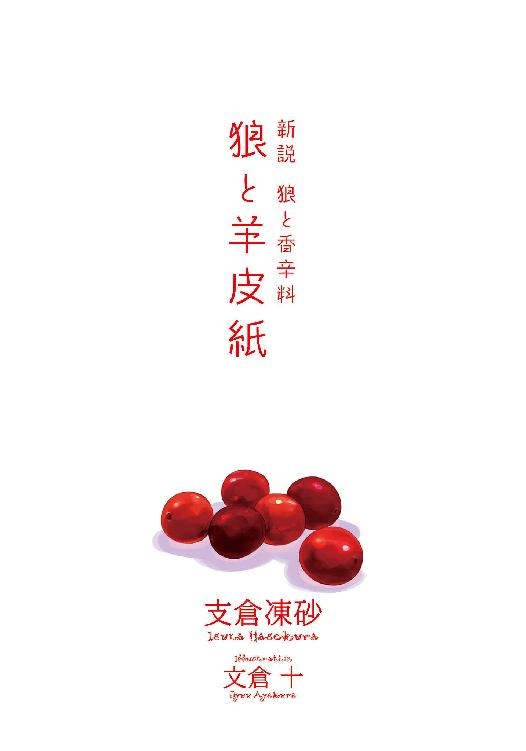
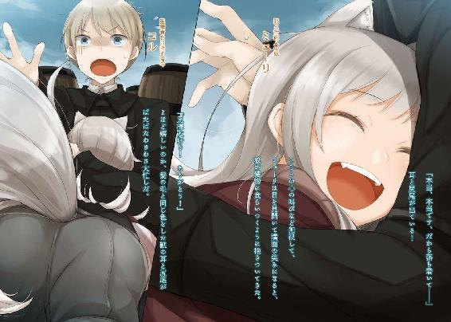
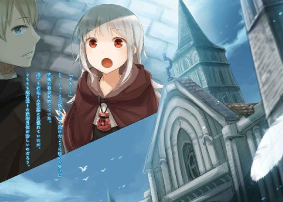
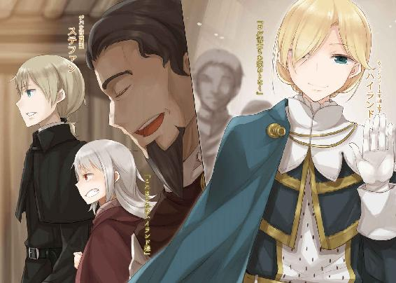
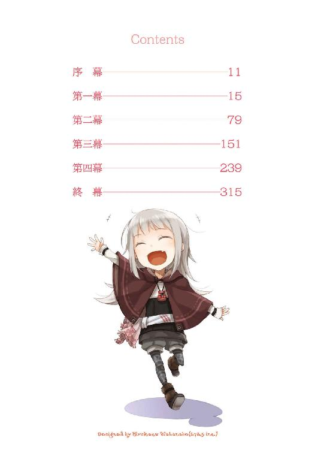
本書（電子版）に掲載されているコンテンツ（ソフトウェア／プログラム／データ／情報を含む）の著作権およびその他の権利は、すべて株式会社ＫＡＤＯＫＡＷＡおよび正当な権利を有する第三者に帰属しています。
法律の定めがある場合または権利者の明示的な承諾がある場合を除き、これらのコンテンツを複製・転載、改変・編集、翻案・翻訳、放送・出版、公衆送信（送信可能化を含む）・再配信、販売・頒布、貸与等に使用することはできません。
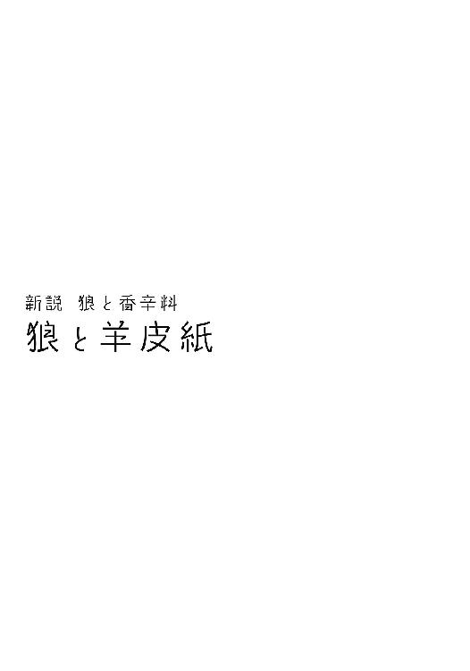
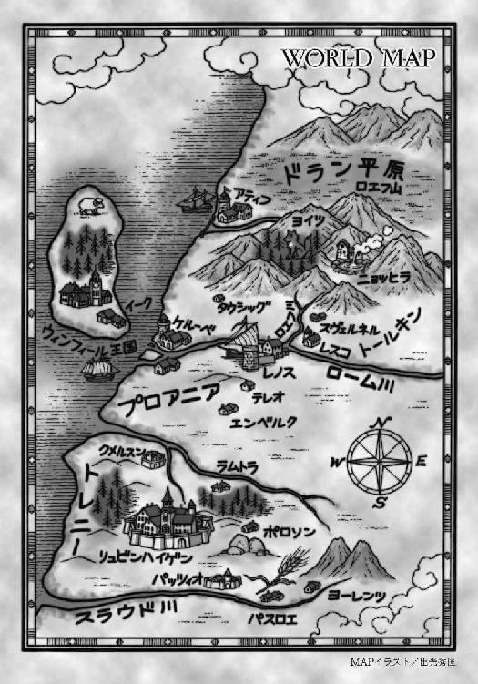
暖かい季節の雨は、少しだけ甘い。頰を伝う滴を舐めて、そう思った。
用事を言いつけられて出かけたら、帰り道の途中で雨に降られてしまった。この地方はどこまでも広がる草原にふさわしく、雨ものっぺりと降る。見えないほど小さい雨粒が、起伏のない草原を漂い、見渡す限りに真っ白い靄に覆われる。足元の道しか見えず、自分の鼓動しか聞こえない、静寂の世界だ。立ち止まれば、永遠にその景色に閉じ込められそうな気がする。
静かで穏やかで、昼寝をするには最適だろうが、どうせ閉じ込められるのなら、もう少し別の場所がいい。そう思って、足を速めた。
水を吸って重くなったスカートに泥が跳ねるだろうけれど、知ったことではない。走って走って、走り続けた。
そういう悪い夢を見ているような気にもなってきた頃、ようやく靄の中に木の建物が見えた。
随分と古いせいで少し傾いているのだが、その間抜けさが好きだった。初めて訪れた時はおよそ人が住める状況ではなかったそこを、頑張って修理したので愛着もある。ここに閉じ込められて永遠に出られなくなるのなら、悪くないと思う。最後はその傾いた屋根に抱かれるように潰されたら、ちょっと素敵だとさえ思う。
そんな様子を想像して、小さく笑った。
そして、この静かな雨の日にはよほど足音が響いていたのか、建物の扉が開いて中から白い服を着た人が出てきた。一緒にこの建物を修理し、最後の釘を互いに手を添えた金槌で打った人だ。
その姿を見た瞬間、嬉しくて顎が上がり、歩幅もさらに広がった。また滴が口の中に入り、やっぱり甘い。その甘さに釣られるかのように、そのまま軒下に飛び込んだ。
目を閉じてそうしたって怖くない。絶対に受け止めてくれると信じている。
相手の胸に飛び込んで、息を整えるのももどかしく、ただいま、と言った。
荒い呼吸と痛いくらいの心臓の音で、返事なんか聞こえない。
けれど、それでも構わない。きっと言葉は返ってくる。
そう思うことが信仰なのだと、つい最近理解した。
他に誰もいない霧雨の中。
目を閉じたままもう一度、ただいま、と言ったのだった。
旅立ちの日は、冬には珍しい晴れだった。吸い込まれそうな青空で、降り積もった雪が陽光に照らされ、目に痛いくらい輝いている。北の地に位置する温泉郷、ニョッヒラの冬では、こんなに綺麗に晴れ渡ることは滅多にない。絵に描いたような素晴らしい旅立ちの日となったが、ここで幸運を使い果たしてしまわないかと少し不安にもなった。
しかし、丈の長い武骨な旅用の外套に目を落とせば、旅の聖職者を思わせる仕上がりだ。この天気は神様による前途の祝福に違いないと、都合良く考え直しておいた。
村には川が流れ、桟橋がある。季節の変わり目には、温泉目当てにやってくる客や、帰る客でごった返すものの、今は荷船が一艘停泊しているだけだった。積み荷が運び込まれている真っ最中で、船頭は船が沈みやしないかとひやひやするくらい丸い中年の髭の男だ。見た目に反して身のこなしは軽く、あっという間に作業を終えようとしていた。
「もう少しで出航だ！」
こちらを見て声をかけてきたので、返事の代わりに、手を振っておく。それから、大きく息を吸って、頭陀袋を肩に担ぐ。ずしりと重いのは、この旅立ちを応援してくれている人の想いが詰まっているためだ。
「コル、忘れ物はないか？」
名を呼ばれ、振り向いた。心配そうにこちらの荷物を何度も見ているのは、自分が十年以上お世話になってきた湯屋の主人、クラフト・ロレンスだった。
「路銀、地図、食料、防寒具、薬草、短剣、火種の類も持ったよな？」
昔は行商人として鳴らしていたロレンスは、旅の準備に余念がない。それはむしろ実際に旅に出る当の自分よりも念入りなもので、すっかり頼りきってしまっていた。
「旦那様、あれほど確認したじゃありませんか。第一、もう入れる場所がありませんよ」
ロレンスの側に控えていた女性が、呆れたように笑いながら言う。ロレンスが経営する湯屋『狼と香辛料亭』の炊事場を取り仕切るハンナだった。
「ああ、そうか。いや、でもなあ」
「大丈夫です。ロレンスさん。昔は、干からびたニシン一尾と、擦り切れた銅貨だけを手に、旅をしていたんですから」
ロレンスと出会ったのは、歳が十に届くかどうかの、ほんの子供の頃だった。大学都市を巡り学問を修める放浪学生、とは名ばかりの、ほとんど物乞い同然で旅をしていた時のこと。行くあてもなく、路銀も尽き、頼れる者が誰一人としていない異国の地で途方に暮れていた。そこで、運良く出会い、助けてもらった。
もうそれが十年、いや、もしかしたら十五年も前になる。あの頃から自分は成長したのだろうかと考えると、疑問符ばかりがつく。目の前のロレンスもあの頃とあまり変わらず若々しいせいで、自分もまだ幼い少年のままなのではないかと錯覚する。
しかし、頭陀袋の紐を握る手は湯屋での力仕事で幾分たくましくなった。子供の頃は小さかった背も伸び、昔は銀色に近かった髪は金色になりつつある。
時間は良い意味でも悪い意味でも、きちんと経っているらしい。
「まあ、そうか、そうだな......。それに、今やお前はどんな聖職者からも一目置かれる若手の学者だものな。俺も鼻が高いし、夜中まで勉学に励むあの姿勢は見習わないと」
「それは結構ですけどね、旦那様。コルさんの真似をされたら、またニンニクと玉ねぎを買い置きしておく手間が増えるので、やめてくださいな」
ロレンスの褒め言葉もくすぐったかったが、ハンナの言葉にも恐縮する。
勉強はいつも、昼の仕事を終えた後だった。しかも写本の制作や神学書の黙読は、主に睡魔との戦いになる。生のたまねぎやニンニクをかじって目を覚ましながらやっていたので、ハンナには幾度となく、料理の具材がないと怒られた。
「いや、しかし、十余年か。今まで働いてくれてありがとう。うちの湯屋がここまでこれたのはコルのおかげだ。助かったよ」
ロレンスはそう言って腕を広げると、父親のように力強く抱きしめてくる。しかしこのロレンスに出会わなければ、自分はどうなっていたかわからない。むしろ感謝すべきはこちらのほうだった。
「こちらこそ......まだ忙しい季節に旅立ってしまって、申し訳ありません」
「なあに。長いこと湯屋に引き留めていたんだ。ただ、南に行って大成功したら、うちの宣伝をよろしく頼むぞ」
商売人の鑑のようなロレンスだが、いつだってそういう態度はこちらへの気遣いだ。
「それと......うちの女たちが見送りに来ないのはすまなかったな」
ロレンスは不意に顔を曇らせて、そう言った。
「ホロさんでしたら、一週間くらい前にお別れの挨拶をしましたよ。見送りに立ち会ったら、きっと引き留めてしまうからって」
ホロはロレンスの妻であり、自分には姉のような、時には第二の母のような存在だった。
「確かにあいつは引きずる性格だからなあ。賢明かもしれない」
ロレンスは苦笑いしつつ、出てきたのはため息だった。
「ミューリのことも、手間をかけたなあ」
「いえ......」
そう否定しようとして、ここ数日の大騒ぎ、特に昨日の晩のことを思い出してしまう。
「そう、ですね......。嚙みつかんばかりの剣幕でしたし、最後は文字どおり嚙みつかれました」
「まったく」
ロレンスは頭痛を堪えるように額に手を当てていた。ミューリとはロレンスとホロの一人娘のことで、常々、この辺境の地の中でもさらにど田舎と称される温泉郷から外に出たいと喚いていた。
そこに、自分が旅に出るという話をすれば、どうなるかは火を見るより明らかだった。
「ミューリもホロも気が強いが、ホロは年相応に諦めや分別ってものを知っている。その点、ミューリは真夏の太陽そのままだからな」
一人娘をなによりも大事に思っていても、ミューリのお転婆はロレンスの頭痛の種だ。最近こそいくらか落ち着いたものの、幼い頃は山に遊びに行っては血だらけで帰ってくることが何度もあった。
そろそろ結婚話が舞い込んできてもおかしくない年齢なので、そのこともあるのだろう。
「朝から姿が見えないから、拗ねて山のどこかで熊相手に泣きはらしてでもいるんだろう」
ミューリにかじりつかれ、巣穴の中で迷惑そうにしている熊を想像して笑ってしまった。
「どこかで落ち着きましたら、手紙を出します。その時は、皆さんで来てください」
「そうさせてもらうよ。ただ、できれば、うまいものの多いところにしてくれ。あの二人の機嫌を取りながら旅をするのは大変そうだから」
「そうします」
笑って答えると、ロレンスはすっと右手を差し出してきた。その様子は、雇い主のものではなかった。十数年前、まだ子供だった自分を拾ってくれた恩人のものですらない。
旅人を見送る湯屋の主人として、差し出された握手だった。
「気をつけて」
不覚にも泣きかけたのがばれたからだろうか、ロレンスは殊更笑い、強く手を握ってきた。
「生水と食事には気をつけてくださいませ」
「ハンナさんも......お元気で」
鼻声を懸命に隠しながらこちらとも握手を交わし、頭陀袋を担ぎ直した。
「おーい、そろそろいいかね！」
船頭はこちらのことを気遣ってくれていたのか、頃合と見て声をかけてきた。
「今行きます！」
返事をし、二人を見た。旅に出れば、この先何年も、あるいはもう二度と会えないかもしれない。この湯けむりがあちこちで上がる村、ニョッヒラも見納めかもしれない。
どうしても足が動き出してくれないところに、ロレンスが肩をポンと叩いてきた。
「さあ、行け、若人よ。新しい世界に旅立つんだ！」
ここで応えなければ、噓だった。
「若人はやめてください。僕はもう、初めて出会った時のロレンスさんと同じくらいの歳ですよ！」
一歩を踏み出すと、二歩目はすぐに続き、三歩目は意識さえしなかった。
振り向くとロレンスは後ろ手に組んで穏やかに笑い、ハンナは手を控えめに振ってくる。視線を少し遠くに向けたのは、ニョッヒラの村の様子がなお名残惜しかったのと、どこかにあのお転婆なミューリがいないかと思ったため。木陰から拗ねた顔でも見せてくれたら、と思ったが、見当たらなかった。意地っ張りなところは母親そっくりだ。小さく笑い、桟橋に向かった。
「別れは済ませたかね」
「お待たせしてしまって」
「船頭などしてるとよくあることさ。しかし、同じ川の流れには二度と入れない。未練がましいことも悪いわけじゃない」
毎日静かな川の流れの上で船を操っていると、自然と思慮深くなるのかもしれない。
船頭の言葉に深くうなずき、桟橋から船に飛び乗った。
「客はあんた一人だ。毛皮の山で昼寝でもしててくれ」
桟橋に船を繫ぎ止めている綱をほどきながら、船頭は言った。
毛皮の山、という言葉にふと記憶がよみがえる。昔、聞いたことのある話だった。
一人の若い行商人がいたという。ある村に立ち寄った彼は、いつもどおり自分の荷馬車で夜を過ごそうと、積み荷の毛皮にもぐり込んだ。すると、そこには見目麗しい少女がいて、自分を故郷まで連れて行ってくれと言うのだ。その少女は月の下でなお輝く美しい亜麻色の髪の毛を持ち、その頭には人ならざる大きな獣の耳を、腰からはあらゆる毛皮の中でも飛びきり最上級の毛並みの尻尾を生やしていた。自らを賢狼と称し、村の麦に宿り豊穣を司る神であり、数百年の長きを生きる狼の化身だと言った。行商人はその娘の頼みを聞き、彼女と共に旅に出た。それから二人は苦楽を共にし、気持ちを通わせ、ついには幸せに暮らしたのだった。めでたしめでたし。
まさかとは思いつつ、毛皮の山の中に手を入れ、まさぐった。大丈夫。誰も隠れてはいない。
船には毛皮のほかに、炭が詰まった麻袋や木樽が所狭しと積まれている。木樽の中身は炭焼きの際に出た木のヤニだろう。防腐剤や防水のために塗られるもので、強烈な焦げ臭さが時折漂ってくる。毛皮はこのニョッヒラの村からさらに山奥にある、点在する集落からもたらされた物だ。冬の間、山の民たちは狩りに勤しみ、毛皮を売ることで町から必要な品を手に入れる。彼らが町まで毛皮を背負って行くのは大変なので、大抵、このニョッヒラに集められて、船で運ばれて行く。炭や木のヤニもその手の代物だ。
「今年は随分毛皮が多いんですね」
「おお、商売繁盛で助かるよ。ニョッヒラは昔から大繁盛であまり変わらないが、今はどこも賑やかだ。ほれ、北と呼ばれる地方一帯と、南の教会との戦が何年か前に終わっただろう？ 元々形骸化したいい加減な争いだったが、やっぱりきちんと終わると違うもんなんだなあ」
船頭はしみじみ言って、ほどいた綱を船に乗せ、自分も飛び乗った。
船は不思議なほど揺れなかった。
「そら、もう船が下りだせば、旅の始まりだ」
船頭は船尾に向かい、棹を手に取る。船はゆっくりと進み出し、川面を滑っていく。ニョッヒラは長い冬の中のなんの変哲もない一日なのに、船の上からだと見慣れたはずの村も違って見えた。もしかしたらそれは、旅人として見る初めての、あるいは最後のニョッヒラかもしれない。そう思うとやにわに我慢ならなくなり、船の上で膝立ちになった。それから、川べりでこちらを見送っていたロレンスとハンナに手を振った。
「ありがとうございました！」
ロレンスは笑って、軽く手を上げた。ハンナは料理がうまくできた時みたいな顔をしていた。
それも、たちまちのうちに見えなくなってしまう。山奥の川なので、流れが速いのだ。
「さあ、別れは済んだ。次は前を見る番だ」
いつまでも村のほうを見ていた自分に、船頭が言った。押しつけがましくなく、むしろこちらを励ますような優しい言い方だった。少し照れ臭く、船頭にぎこちない笑みを見せてから、前に向き直る。
ああ、旅に出てしまったのだと、寂しいような、わくわくするような、不思議な感覚に囚われていた。
「しかし、さっき毛皮の中を探していたようだが、鼠でもいたかい？」
「え？ ああ......実は、昔話を聞いたことがありまして」
そう答えてから、行商人と狼の精霊の出会いの話をした。どこにでもありそうな奇跡譚だが、船頭は随分興味津々だった。
「船旅の暇つぶしに、その手の話をする機会がいくらでもある。種がひとつ増えて助かるよ。とはいえ、そんな話を思い出して毛皮の中をまさぐるとは、若いのに随分迷信深いんだな」
まさかその話が実話だと言っても信じないだろうし、その狼の娘が隠れているかもしれないなどと言ったら、肝をつぶすかもしれない。その話の行商人とはロレンスのことであり、積み荷に隠れていた狼とは、妻のホロのことなのだから。
自分は彼らの奇跡のような旅に同行した。目を回すような大冒険を手伝った。思い出すだけでわくわくし、ぞっとするような経験もいくつかある。
ただ、あの二人の物語に巻き込まれた中での最大の驚きと言えば、そういう血湧き胸躍る事柄ではない。幸せに暮らしましたとさ、めでたしめでたし......の後の生活に付き合ってみて、目の当たりにしたことだった。
まさかずっと幸せでい続けられるだなんて、驚きをとおり越して笑うしかなかった。
「それで、あんたはどこまで行くんだい。ひとまずスヴェルネルって言ってた気がするが」
船頭が口にしたのは、西に向かって流れる川を下り、途中から南に陸路を行った先にある、毛皮と琥珀の貿易で古くから栄えている町の名前だった。
「そこで旅の情報を集めてから、レノスを目指すつもりです」
「ほう、レノス！ あっちも確か大きな川沿いの町だったなあ。大きな船が行ったり来たりするような場所だ。その分関所が多いと聞くが」
知っている。自分はその川で、まさしくその関所で、ロレンスたちと出会っていた。
あまりにも懐かしく、今はどんなふうになっているのだろうと楽しみだった。
「なるほどなあ。そこでなにをするんだい。職人......には見えないな。商人か」
「いえ」
小さくかぶりを振り、空を見上げたのは、そこにいるはずの誰かに誓うためだ。
「聖職者を目指しています」
「なんと坊さんだったか。それはそれは」
「ですが、まだ見習いですらありませんし、本当になれるかどうか」
「はっはっは。そこで神の御加護を信じないようじゃだめだろう」
確かにそのとおりだった。
「ただ、今はほれ。教会はウィンフィール王国と大喧嘩中で大変な騒ぎなんじゃないのかい？」
船頭が棹を深く川の底に突き立てると、船先がくるりと回り、大きな岩を回避する。ニョッヒラは山奥の村のため、周りも見通しの良い河原などではない。切り立った崖の上に雪がたっぷり積もり、さらにその上から鹿が物珍しげにこちらを見下ろしたりしている。
「よく御存知ですね」
「川は水以外に、情報ってやつも流れるんだよ」
得意げに言ったのはわざとだろう。陽気な人だった。
ウィンフィール王国とは、この川が西に向かって流れ出た先の海を、さらに南西に向かうと出くわす大きな島国のこと。名産は羊の毛で、最近は船の建造も盛んだという。
そのウィンフィール王国と、世界の信仰を統べる教会の教皇が、真っ向から対立して早数年が経っていた。
「それに、騒ぎの発端は税を巡る話だろ？ 物を運ぶ俺たちみたいな仕事には直接影響するからな。嫌でも耳に入ってくる」
船は川を下る間に、たくさんの領主の土地を通過する。そのたびごとに関所をとおり、税を徴収される。大きい川だと五十を超え、中には百を数える川もあるという。
そして、領主は自分の領地でしか税を課せられないが、教会はその教えが広まっている場所であれば、あらゆる場所で税を課すことができる。つまり、事実上の世界中であり、それが『十分の一税』と呼ばれるものだった。
「教会の十分の一税がなくなれば、俺たちも助かる。しかも、元々は異教徒と戦うために集められていた税だって言うじゃないか。その戦争が終わったら、確かに払う道理はない。ウィンフィールの王様はよくぞ声を上げてくれたって話だ」
税金はいつだって、どんな理由であれ不人気なもの。それをなくそうと声を上げる王様を、悪く言う理由はない。
「その上、筋の通った話をしている王様に対する、教皇様の仕打ちだ。いや、まったくウィンフィールの王様には頑張ってもらわないと......」
と、そこまで言って、船頭は不意に口を閉じた。
船に乗せているのが、聖職を希望する者だと思い出したらしい。
「こりゃすまない。あんたの志願先を悪く言うつもりはないんだが」
「いえ」
短く言って、小さく笑った。
「私も同感ですから」
「へえ？」
きょとんとする船頭をよそに、川下から吹き上がってくる、冷たくも澄んだ風に目を細めて言った。
「教皇様が税の支払いを強要するために、話し合いではなく王国の聖務停止を言い渡したことは、私も信じられません」
吐いた息が殊更白くなったのは、怒りのためだろう。聖務停止とは、その土地一帯にある教会の聖職者全員に、あらゆる仕事を放棄させるという、教皇からの命令だった。
「王国では、もう三年間に渡って、赤子の洗礼も、愛し合う二人の結婚も、大切な家族の葬式も行われていません。すべて聖職者が執り行うべき、人生の大切な儀式なのに、教皇様はそれを停止してしまった。神の恩寵が欲しければ税を払えと迫るなんて、私にはそれが神の御心に適う行動とはとても思えません。私は、無学で無力な身ではありますが......」
首から提げ、胸元にいつもある教会の紋章をかたどった木細工を、力強く握りしめる。
「私は、歪められてしまった神の教えを正す、一助になりたく思っています」
税のために三年間も魂の救済を怠っている傲慢な教皇から、ウィンフィール王国を救うべく、また、神の教えを正すべく戦わなければならない。自分はそのために、旅に出たのだ。
困難はあるだろう。苦難もあるだろう。それでも、自分にはこれまで学んできたたくさんのことがあるし、ロレンスや、その妻のホロといった、いわばお伽噺のような奇跡にも直に触れてきた。ならばやれるはず。自分にもきっとできるはず。
理不尽で無慈悲なこの世界に、少しでも多くの笑顔と幸福をもたらすため。
川の流れの行く先を見つめ、改めてそう誓う。
神よ、我に勇気を与え、我を導きたまえ。
目を閉じると、天使が頰を撫でるかのように、ひときわ強く風が吹いた。
「ははあ......」
と、後ろから船頭のため息が聞こえてきて、我に返った。
かあっと顔が熱くなったのは、まだ自分が聖職者見習いですらないからだ。
「えっと、志としては、そう思っている、というところです......」
「いやあ、俺はてっきり、ニョッヒラで働いているうちに、温泉で飲み食いする聖職者が羨ましくなったのかと思ったんだが」
船頭の遠慮のない一言だったが、それも事実。こんな山奥にまでやってくるには、相当の旅費と、何か月も仕事を放り出しても困らないだけの地位が必要になる。その両方を揃えられるのは、隠居した大商会の主か、統治がうまくいっている貴族か、高位の聖職者くらいのものだ。
「確かに、そういう理由で聖職者になりたがる人も多いでしょう。嘆かわしいことですが......」
「『甥』や『姪』がたくさんいる聖職者も珍しくないしなあ」
含みのある言い方だが、船頭になにか思うところがあるわけではなく、それは公然の秘密というやつだからだ。聖職者は独身を貫かなければならないので、もちろん妻もいなければ子供もいないことになっている。よって、彼らには『甥』や『姪』がいる。教皇ですら例外ではないし、その『姪』の一人がウィンフィール国王に嫁いでいるのだから、いかに悪弊が常態化しているかという話だ。
「世界がもっと正直に、まっすぐであればと願うばかりです。そんなことだから、教皇様まで金目当てに権力を振るってしまうことになるのでしょう」
ため息と共に言うと、船頭は探るような口調でこう言った。
「ということは、なんだ。あんたはニョッヒラにいて踊り子には指一本触れなかったのかい？」
まさかそんなことはないだろう？ という聞き方だったが、胸を張って言える。
「もちろんです」
「おお、それは......」
船頭は言葉に詰まっていた。
ただ、そういう反応には慣れている。本職の聖職者でさえ、禁欲の誓いを守っているのはごく少数だ。きちんと禁欲を守っているのは、人里離れた修道院で、どうあがいても女性とふれあえない修道士くらいのものだろう。
「もっとも、禁欲の誓いを破ろうと思っても、破れなかったとは思いますが」
苦笑して言うと、船頭はようやくぎこちなくはあったが笑っていた。
踊り子や楽師の娘から、確かに声をかけられることはあった。けれど、どれもからかいの延長にすぎなかった。そういう意味では、努力して守ったとは言えないかもしれない。
「とはいえ、定められたことは守るべきだと思います」
背筋を正して、そう言った。
「ううむ。そうだなあ」
船頭はしみじみと呟いてから、舳の向きをまたくるりと変える。
「とはいえ、世の中は川のようなものだ。なかなかまっすぐばかりというわけにもいくまいよ」
振り向くと、船頭はしたり顔でも、理想を語る若者を嘲笑う顔でもなかった。
それは多くのことを甘受して、受け流そうとする、隠者の顔にも見えた。
「時には曲がるからこそ、そこに魚が住めるということもある」
船頭という職に就いていれば、思索にふける時間もたっぷりあるのか、実に含蓄のある言葉だった。事実、破戒にまみれてから真理に至った、という高名な神学者もいる。
「仰る言葉もわかる気がします」
「もちろん、人の理想をくさすつもりはない。ましてや聖職者を目指そうという人だ。ただね、まっすぐ一辺倒じゃわからないことってのもあるだろう？ 寄り道してこそ得られる経験ってやつだ」
それもそのとおりだ、と素直に思う。
ただ、船頭の話の向かう先が見えなかった。
「えっと......つまり？」
船頭は、なぜかばつが悪そうに鼻先を搔いていた。
「うむ。その、なんだ。あんたの旅の目的と、その精神が素晴らしいものだってことはわかったんだが......いやあ、まさかそこまで固いとは思わなかったから、俺も無駄な世話焼きというかね......」
「え？」
聞き返した直後だった。
「なんにせよ、もう引き返せない。おい、出てきていいぞ」
船頭は、積み荷を見ながらそう言った。視線は毛皮の山ではなく、その手前にある木樽に向けられていた。直後、ばこん！ と音がして木樽の蓋が空に舞う。
「おっと」
と、船頭がうまく蓋を手に取った。木樽の中からは、武骨な旅用の靴を履いた、細長い足がすっくと伸びている。困ったように笑う船頭をよそに、開いた口がふさがらなかった。
「うー！ ううー！」
そんなうめき声と共に、木樽の縁に手がかかり、がたがたと揺れる。
それが倒れる、というまさにその瞬間、中から一人の少女が飛び出してきた。
「くっさああああい！」
「ミューリ!?」
木樽から飛び出してきた少女はそのまま毛皮の山を蹴散らして、こちらの胸に飛び込んできた。灰に銀粉を混ぜたような不思議な色合いの髪の毛をなびかせた、華奢な体つきの少女だった。年の頃も十余といったあたりで、まだ娘と呼ぶのさえも早い。そんなミューリは元気だけは良く、その勢いに押し倒され、船が右に左にと揺れた。ひっくり返らなかったのは、船頭の腕のおかげだろう。
「う、み、ミューリ、な、なんで──」
ここにいるのだ、というのと、そんなに焦げ臭いのだ、という言葉が喉でつっかえて言葉にならなかった。
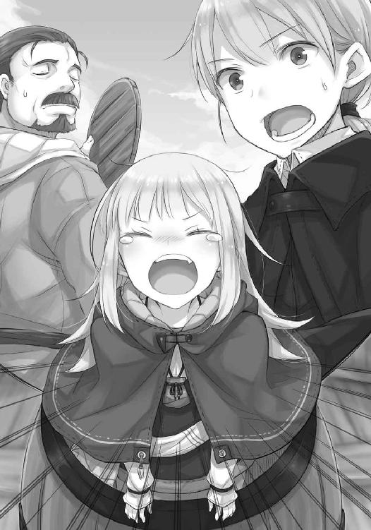
「なんでもなにもない！」
力いっぱいに叫んだ少女、ミューリは、木樽の中がよほど臭かったのか、それとももっと別の理由からか、目に涙をいっぱいに溜めてこちらを見下ろしていた。
「私も旅に連れていって！」
大地から湧き出る湯より熱い涙が顔に落ちる。だが、突然木樽からミューリが出てきたとか、どう考えても船頭と示し合わせていたとか、今更船は引き返せないとか、そんな諸々は後回しだった。目の前のミューリは今にも感情が破裂しそうで、すでに灰色の髪の毛はざわざわとうごめいている。
ほかに手だてがなかった。慌てて抱きしめ、その小さな頭を腕の中に隠す。
「わかりました！ わかりましたから！」
落ち着いて！
その直後、ミューリが腕を振りほどいて、がばっと顔を起こした。
「本当!? 本当に!?」
「本当、本当です、だから落ち着いて──」
耳と尻尾が出ている！
こちらの心の叫びなど無視して、ミューリは目を見開いて満面の笑みになると、狼が獲物に食らいつくように抱きついてきた。
「兄様大好き！ ありがとう！」
よほど嬉しいのか、髪の毛と同じ色をした獣の耳と尻尾がぱたぱたわさわさ大忙しだ。
顔を青くして船頭を見ると、どうやら隠し事を吐き出せてすっきりしたのか、それとも変に気を利かしているつもりなのか、船尾に座って小さな酒樽を開けているところで、こちらを見ていなかった。
とにかくこの場をどうにかしないとならない。あの行商人と狼の話は実話であり、この少女はその一人娘だ。普段は耳と尻尾を自在に出し入れし、人と全く変わらないふうを装っているが、興奮したりびっくりしたりすると、意志に関係なく隠している獣の耳と尻尾が露わになってしまう困った特徴があった。
「ミューリ、ミューリ......！」
「ふふ、んふふ......うん？」
まだ涙も乾いていないのに、こんなにも嬉しそうに笑うことができる。
感情豊かなのはとても良いことだ。
しかし、もう少しだけ、思慮深くあって欲しかった。
「出てます、出てますから......！」
声を押し殺して囁くと、ようやく気がついたらしい。慌てて猫が顔でも洗うかのように、自分の頭をせっせと撫でていた。尻尾もその頃には消えていて、なんとか船頭には気づかれなかったようだ。ほっとして首から力を抜くと、後頭部がごんと船の床に当たる。
それから、またすぐに起こした。
「ミューリ」
「うん？」
ミューリがこちらに向けた笑みは、明らかな作り物。怒りを孕んだこちらの声に、いつからか見せるようになった女の笑顔だ。
「どきなさい」
「......はあい」
狭い船内では逃げられないと思ったのか、あるいは言質は取ったからなのか、いつもより聞き分け良くわざとらしい笑顔を消した。
「まったく......」
ため息交じりに言いながら体を起こそうとすると、ミューリは手を貸してくれた。
それから二人で散らかしてしまった毛皮を片付け、ミューリが隠れていた木樽も元に戻した。
元々木のヤニが詰まっていた樽らしく、猛烈に焦げ臭い。ミューリの体からは囲炉裏の灰の中に落っこちたような臭いがする。狼の血が流れ、鼻の良いミューリがこれを我慢していたのだから、相当な決意がうかがえた。
なにより、この少女はあのロレンスとホロの娘である。旅に連れていってもらえず、めそめそと熊の巣穴で泣いているはずがなかった。
「それで？」
すべてを元通りにしてから、そう尋ねた。
「えへへ......家出してきちゃった」
悪びれているようで悪びれていないミューリは、お転婆少女そのままに、首をすくめながら言ったのだった。
船は今更引き返せなかった。険しい山の中を下る川は、両脇が高い崖だったり、良くても岩場だった。もちろん、仮に接岸できたとしても、そこからまともな道など伸びているはずもない。領主が設けた川の関所なら、旅人の使う山道も伸びてはいるが、場所によってはニョッヒラの村とは反対側に向かっていたりする。しかも、この地方はまだまだ冬のさなかで、雪深く、天候はすぐに荒れ模様になる。女の子が一人で、その細い足で踏破できようはずもない。今すぐ追い返すというのは無理なのが明らかで、ミューリと向かい合って座ると、大きなため息ばかりが出た。
「そもそも、その服はなんですか？」
おとなしくちょこんと座ったミューリは、たちまちぱっと顔を輝かせた。
「可愛いでしょ？ ヘレンさんに作ってもらったんだ。今、南のほうはみんなこんな格好してるんだって」
ミューリは湯屋に出入りしている人気の踊り子の名前を出してそんなことを言った。そのミューリは、兎の毛皮から作ったケープを羽織り、肩のやや膨らんだ装飾入りのシャツを着て、熊皮かなにかのコルセットをしている。自分の知識が確かなら、何十年も前の宮廷貴族が召していた形に近い。
だが、最も頭痛を覚えるのは、その下だった。
「ヘレンさんみたいに肉付きが良くないのが残念なんだけど......えへへ、どうかな？」
ミューリは細長い足に、筒状に縫い合わせた亜麻布をぴったりと穿いていた。その布の上に重ねたズボンは大胆な位置まで切り落とした短い物で、とにかく足を見せることに特化している。旅用の武骨な靴でさえ、実用的な理由からではなく、足の細さを強調するために履いているように思えた。
「あのですね、なにから言っていいかわかりませんが、とにかく若い女の子がそんなに足を見せるというのは良くありません」
「見せてないよ。これ、きちんと爪先まで覆ってるよ？」
刺繡が施され、細長い足を覆う布を引っ張りながら、ミューリがそう主張する。その様子が妙に扇情的で、思わず咳払いを挟む。
「肌を見せなければ良い、というわけではありません」
三つ編みお下げに麻のスカートと前掛け、という質実な村人の姿からは程遠かった。
「第一、旅にふさわしい格好ではありません。寒いでしょう？」
「大丈夫。ヘレンさんたちから聞いたもの。お洒落はやせ我慢が大事だって！」
満面の笑顔でそんなことを言っているが、改めてよく見れば、唇は若干青いし、小鹿のような足は震えている。
大きなため息をつきつつ、毛皮の山に手を伸ばし、ミューリの膝の上にどんどん載せていく。
「冬眠中の蛙を掘り起こして湯船に放り込んだり、罠を仕掛けて兎や栗鼠を根こそぎにしなくなったと、ようやくほっとしていたのですが......」
村の男の子たちの中にいても群を抜いて元気だったミューリが、ある日女の子らしくなったと安心したのも束の間、今度はこちらの方向に頭を悩ませることになった。
なにせ、湯屋は人を喜ばせるのが仕事の場所だから、とにかく華やかで賑やかだ。やってくる客たちも羽目を外す者ばかりなのに、そこで禁欲やら清貧やらを説いたってまったく説得力がない。
父親たるロレンスも一度は叱るが、そこでちょっと殊勝にしておけばそれ以上強く言わない、とミューリに見抜かれているので、抑止力としては心もとない。挙句に最近は、だってお父様が喜ぶかと思って......と悲しげにする技を覚えたので、いよいよ無力になっていた。
母親たるホロに対しては、尻尾を踏んだらその怖さはロレンスの比ではないとわかっているので、ミューリもホロの顔色は窺っていた。しかし、何百年と生きるホロは元々布地のひとつや二つを気にかけるような性格ではないし、むしろミューリを通じて華やかな衣装の情報を仕入れているほど。
結局、自分がしっかりするほかない。
「女の子らしく服装に気を配りなさいって言ったのは、兄様じゃない」
毛皮の山の中で、ミューリはむくれていた。
「極端なのです。腰巻ひとつで山に分け入る、蛮族みたいな格好をしていたからそう言ったのです。何事も中庸が大事です。わかりましたか？」
「......はあい」
面白くなさそうに返事をして、ミューリはそのまま後ろ向きに毛皮の山にぼすっと倒れ込んだ。
「えへへ、なんだっていいや。あの狭い村をようやく出られたんだもの」
両腕を広げて、透きとおった青空を見上げながらミューリはそんなことを言う。
冷水をかけることばかり言いたくないが、誰かがその役目を引き受けなければならない。
「スヴェルネルに着いたら、人と馬をつけますから、そこから帰るんですよ」
スヴェルネルまで行けば、湯屋の仕入れなどの関係で知り合いがたくさんいる。信用できる者たちも多いので、ミューリを任せても安心だ。
ただ、ミューリは絶対に怒り狂うだろうと腹に力を込めて構えていたのに、一向に駄々をこねる様子がなかった。
「ミューリ？」
こちらから重ねて問うと、空を見ていたミューリはゆっくりと瞼を閉じ、ため息をついた。
「はあい」
随分聞き分けが良いので、逆に嫌な予感がした。それとも、単に村からちょっと出てみたかっただけだろうか？ しかし、その程度の理由で鼻が曲がりそうなほど臭い樽の中で息を殺そうと決意するだろうか？ しかも、旅立ちの日が近づいてからは、一週間に渡って文字どおり嚙みついてごねていたのだ。
疑わしげにその様子を窺っていたが、ミューリは毛皮の山の中であくびをしていた。
「ふぁ～......あふっ。夜が明ける前から準備してたから、眠くなっちゃった......」
こちらがどれほど心配しようとも、その欠片も伝わっていない。自由奔放なミューリにとっては、すべて煩わしいことなのだろう。その図太さも並大抵のことではなく、寝ると決めたらすぐにでも寝られる特技からも明らかだ。毛皮の隙間からは、すでに寝息が聞こえていた。
やれやれとため息をついて、ミューリの上にさらに毛皮をかけ、苦しそうなので頭の上のは退けてやる。おとなしく眠っている顔は健気で可愛らしいが、可愛い故に、余計に気苦労が絶えなかった。
暖かく眠れるようにとひととおり毛皮をかけ終わると、船頭が長い棹の先に器用に木のジョッキの取っ手を引っ掛けて、こちらに伸ばしてきた。甘酸っぱい香りから、スグリの果実酒だとわかった。
「夜が明ける前に、村の寄合所で仮眠していた俺のところにやってきてね」
ミューリのことだとはすぐにわかる。もちろん、ミューリの計画に加担したこの船頭を責める気はない。
「船に乗せろ、乗せないと死ぬって喚くんだ。月明かりの按配か知らないが、暗闇の中で光る金色の目を見て、こりゃ本気だ、と思ったわけさ」
甘さよりも酸っぱさの勝る酒を啜りながら、笑いもひきつってしまう。旅に連れていけと迫るミューリがどれくらいの迫力かは、ここ一週間ずっと味わってきた。
「まあ、放浪の旅やら、わけありの逃避行なんかはこの仕事をやってるとちょくちょく出くわす。手を貸してもいいものかどうか、それなりに判断はできているつもりだ」
「その上で、いいと？」
「そりゃあ、旅の道連れがいかにも堅物の青年とくれば。ただ、予想より固すぎて、怒り出さないか不安だったがね」
笑う船頭の言葉には、ため息が出るばかり。甘酸っぱい酒を口に含み、肩を落とした。
なんにせよミューリはスヴェルネルに着いたら追い返す。なにを企んでいるのか知らないが、断固たる態度でそうしなければならない。ミューリは自由奔放で、勝手気ままで、客におだてられたら踊り子たちと一緒にこちらが慌てるような格好で踊り狂う娘だが、常にどこかは冷静なのだ。成長するに従い、どきりとするほど母親のホロにそっくりになってきたが、真に似ているのはその容姿ではない。そっくりなのは、馬鹿騒ぎの合間に見せる、賢狼と呼ばれ崇められた母親と同じ、運命を見とおすような理知的な目のほうだ。
「しかし、兄妹だったとは。てっきり恋仲だと思ったんだが、そこは当てが外れたな」
「血の繫がった兄妹ではありません。お世話になっていた湯屋の主人の一人娘です。産声を聞いて、散々おしめを替えてきましたよ」
ミューリ自身もつい最近まで、こちらのことを本当の兄だと思っていたらしい。いかにホロやロレンスが、自分のことを単なる使用人としてではなく、家族として扱ってくれていたかということだ。感謝のしようもない。
「ま、これだけ賑やかな娘と一緒なら、長旅も飽きないだろう」
ミューリはさっさと村に送り返すつもりだったが、少なくともそれまでは静かで単調な旅、とはいかないことが容易に想像できる。
「賑やかなのは構いませんが、何事も適度であってほしいものです」
「それも大事だ。川の流れのようにな」
船頭が笑ってジョッキを軽く掲げるので、それにあわせて掲げ、道中の無事を神に祈ったのだった。
関所をいくつか越え、船はそのたびに止まり、積み荷を調べられ、税を支払っていた。
昼寝から目覚めたミューリは見る物すべてが珍しいようで、興味津々に辺りを見回し、意外に静かだった。
太陽が茜色に変わる頃には、辺りの景色もかなり変わってきていた。山がちなのは同じだが、雪が減り、小石の多い河原が増え、時折川沿いに道が見えるようになった。
流れもだいぶ緩やかになってきた川を大きく迂回して丘を回り込むと、目の前に現れたのはこれまでとは違う、大きくて賑やかな関所だった。
「わあ！ すごい！」
広い河原にはたくさんの荷物が並んでいる。川を下って運ばれてきたのか、それともここからさらに下って次の関所に向かうかするのだろう。桟橋の入り口では鎧兜の兵が槍を携え、夜間の見張りのための篝火を用意していた。その桟橋でも今日の航行は終わりだと、船をくくりつけている者や、すでに船の上で酒盛りをしている者たちがいた。
「この川で二番目に大きい、ハビリシ卿の関所だ」
船頭が船を桟橋に寄せると、顔なじみらしいほかの船頭たちが挨拶を寄越してくる。
「二番目？ これで二番目なの？」
河原の向こうには宿屋が二軒ほど見え、軒先に椅子と長机が出されて夜の騒ぎが一足先に始まっている。窮屈な市壁の中ではないので、随分おおらかなようだ。
笑い声や誰かが持ち出した楽器の音色に、ミューリはうずうずそわそわしていた。
「一番大きいのは、この川をさらに二晩下ったところにある。関所の傍らにあるのはあんな小屋じゃない。立派な鐘楼付きの石造りの要塞でな、対岸のこれまた大きな石の塔と、巨大な鎖で繫がっている。頭上に渡された鎖の下を通る時は、まるで地獄の審判を受けているかのようにどきどきするよ」
「鎖？」
ミューリがきょとんとした。
「鎖で繫いだら、船が通れなくなるでしょう？」
謎かけを楽しむように笑う船頭に、困ったミューリはこちらに助けを求めてくる。
「それが目的なんですよ」
「そう。もうそこからは海まで一息だからな。大海原からやってくる海賊共が内陸に入ってこないようにと、いざという時には鎖を落として防御するんだ。あるいは、海賊どもへの警告だな。町に攻めてきたらこの鎖に繫いで奴隷として働かせてやるってな」
今まさに頭上に鎖があるかのように、ミューリは目を見開いていた。
「海......賊......？ 海賊!? 海賊って、あの海賊!?」
山頂に登っても、見渡す限りに山が続くようなニョッヒラで生まれ育ったミューリには、あまりにも縁遠い単語だったのだろう。
興奮に目を見開き、こちらの腕を痛いくらいに摑んでくる。
「すごい！ 兄様、海賊だって！ 海賊!? それを？ 鎖で!?」
船の上で大はしゃぎのミューリに、周りの者たちは奇異な視線を向けてくる。しかし、それがどうやら山奥から出てきたばかりの少女とわかると、今すぐにでも海賊に転身できそうな船頭たちが、揃って孫を可愛がる年寄りのような優しげな笑みを浮かべていた。
「すごい、すごい！ 兄様も海まで行くの？ 行くんだよね？」
「行きません」
しかし、こちらは殊更冷たく言った。これ以上興奮したら耳と尻尾が出てくるかもしれない。
なにより、あまり外の世界に興味を持たれ過ぎると、ニョッヒラに送り返すのが難しくなる。
「それに海賊が内陸まで来ることなんて滅多にありませんし、私も聞いたことがありません」
「まあな。単なる脅し......あるいは、ここは海賊に狙われるくらい重要な土地なのだ、という見栄なんだよ。もしも川を下ってきて、あるいは海から上がってきて、頭上に巨大な鎖が張られていたら誰だって肝をつぶすだろう？」
ミューリはそんな説明にいちいち大きくうなずいて、感嘆のため息をついていた。
「外の世界は、とても複雑なんだね」
おお神よ、とでも続きそうなくらい生真面目な言い方に、思わず笑いそうになってしまった。
ただ、気を緩めてはならない。可能な限り冷たくあしらって、情が湧かないようにしなければならない。
「行きますよ、ミューリ。今日はここで宿泊です」
「あ、う、うん！」
川の流れの先を神妙な顔で見つめていたミューリは我に返り、慌てて隠れていた木樽の中から荷物を引きずり出していた。中になにが入っているのか知らないが、一応旅支度を調えていたらしい。
「操船ありがとうございました」
「なあに」
船頭とはここでお別れ、と気がついたらしいミューリは、こちらが持っているのとそっくりな頭陀袋を一丁前に肩に担ぎ直し、笑顔で手を振った。
「船頭さん、ありがとう！」
「またな！」
屈託のない笑顔に、船頭は船を操るための棹を振り上げ応える。ミューリは笑顔でうなずき、去り際にももう一度振り向いて、手を振っていた。
そんな様子を横目に、桟橋をかこかこ音を立てて歩き、河原の石を取り除いて作られた道に降りると、確かな地面にほっとした。船旅は楽だが、妙に緊張する。ミューリも船酔いなどしていないだろうか、とふと見れば、隣で表情を陰らせていた。
「酔いましたか？」
ミューリは顔を上げ、力なく微笑んだ。
「ううん。せっかく仲良くなったのに......ちょっと、寂しいなって」
小柄で華奢で、しかも寒そうな格好をしているせいもあるだろうが、なにより頑張って笑おうとしながらそう言うところが、なんともいじらしい。
しかし、甘い顔を見せてはならない。気を引き締め、言った。
「湯屋でも別れは当たり前でしょう」
「そうだけど......お客さんはお客さんだもの」
「船頭さんから見たら、ミューリもその客の一人です」
「......」
隣を歩くミューリはこちらのことを見上げ、少し傷ついたような顔をしていた。
「そっか......」
旅は出会いと別れの連続だ。楽しいことばかりではない。
それがわかってくれれば、おとなしくニョッヒラに帰ってくれるかもしれない。
そう思っていたのだが、しゅんとしてしまったミューリの様子に、どうしても心が痛む。
「まあ、あの船頭はこの川をずっと上り下りしています。村の港に行けばいつでも会えますよ」
ミューリは顔を上げ、こちらを見る。
目が合うと、ほっとするように笑った。
「ありがと、兄様」
ミューリの笑顔に、もう少しでほだされるところだった。
それから連れだって川岸の宿屋に向かい、部屋をひとつ確保した。本当は最も安い雑魚寝部屋にするつもりだったが、ミューリがいるので仕方がない。この分はこれから後、節約していけばいい。
やれやれと荷物を下ろすと、木窓を開けて外を見下ろしていたミューリは、元気いっぱいに振り返った。
「兄様！ 外で肉を焼いてるよ！」
ニョッヒラで育ったミューリは、それでなくても宴会が大好きだ。うまい食べ物は輪をかけて好きで、これで酒を飲むようになったら手がつけられなくなるだろう。
ミューリに袖を引かれて外を見てみたが、確かに石で囲った竈では、豪勢に豚を丸焼きにしている真っ最中だった。
「ね？ ね？ 豚の丸焼きだって。すごいよね、今日はお祭りなのかなあ」
賑やかさではニョッヒラも負けていないが、山奥の土地なので物資の流通に限りがある。鹿や兎は山で獲れるが、豚は獲れないので高級な輸入品、という印象なのだろう。その丸焼きになれば、尚更お目にはかかれない。
おおはしゃぎのミューリをよそに、さてどうやって今晩の食事を干し肉と炒った豆だけで済まそうかと考えていると、ふと視線を感じた。酒を酌み交わす旅人や商人たちの中で、一人だけぽつんと座っている者が、こちらを軽く見上げて手を掲げていた。
「ねえ、兄様、ちょっとだけでいいから、ね？」
と、ねだるミューリに、財布から銅貨を数枚取り出して、握らせた。
「二人分の食事を買ってきてください。少しでしょうが、豚の丸焼きの肉も買えるでしょう」
「え......あ、うん」
この地方で使われる、ディップ銅貨と呼ばれる貨幣を手に、ミューリはやや戸惑っている。
「兄、様は？ 行かないの？」
「お祈りと聖典の暗誦の日課がありますから。それとも、一緒にやりますか？」
ミューリはたちまち嫌そうな顔をして、巻き込まれたらかなわない、とばかりに遠巻きに扉に向かう。
「じゃあ、ちょっと買ってくるね！」
「お酒はだめですよ」
「え～......」
「だめですからね」
ミューリは返事をせず、むくれたまま部屋から出ていった。
まったく、とため息をつきつつ、少ししてから外を見ると、豚の丸焼きの前に小走りに駆けていったミューリが、ぱっとこちらを振り向いて手を振ってきた。人ごみの中でもすぐに目立つのは、踊り子直伝の新奇な格好だから、というわけではない。ミューリは実際に人の中で目立つ。まるで輪郭に沿って切り抜いたかのように、そこだけ淡く光っているようにさえ見えた。
それとも、本当の妹のように可愛がってきたゆえの贔屓目だろうか。
苦笑したところで、扉がノックされた。
「どうぞ」
笑みを引っ込め、木窓を閉じる。
扉が開くと、そこにはつい先ほど、広場からこちらを見上げていた旅人がいたのだった。
小柄と言えるかもしれないが、さほど背が低いわけではない。体格はがっしりしているわけではないが、細いわけでもない。なんとも印象が摑みにくいのは、もしかしたらたまには密偵じみた仕事をするからなのかもしれない。
フードをかぶると若い青年なのかと思うが、実際は皺の出始めた物静かな男だ。
「驚きました。こんなところでお会いするとは」
椅子を勧めると、男はかぶりをふる。
「長居はしません。わざわざ人払いもしてもらってすみませんね」
「ああ......あの子は、ニョッヒラから無理やりついてきたんですよ。積み荷に潜り込んでいたんです。それも木のヤニが詰まっていたような、よもやここにはというくらい臭い樽の中に」
「ええ？」
男は驚き、肩を揺らして笑った。
「あの樽は本当に臭い。私も何度か潜り込んだことがありますが」
やはりこう見えて、荒っぽい仕事も多いようだ。男はデバウ商会と呼ばれる、この北の地方一帯に勢力を広げている強力な大商会の連絡員だった。デバウ商会は教皇と揉めているウィンフィール王国側に与している。苦境に陥った王国を助け、商売上の特権を引き出すのが狙いなのだろう。
そういうわけで、ウィンフィール王国と、自分のような王国への協力者の連絡役を請け負っているのだ。
「笑い事ではありませんよ......。ところで、どうしてここに？ スヴェルネルでお会いするはずでは？」
「それなのですが、レノス行きはなくなりまして、そのことをお伝えするためにここで待っていたのです。代わりに、アティフに向かっていただきたい」
「アティフに？」
それは、昼間乗っていた船の船頭が語った、海賊から守るために巨大な鎖が渡されている関所がある町の名だった。
「レノスからはまた随分離れますね......なにかあったのですか」
ニョッヒラから流れ出る川は、少し南に下った後に、進路を変えて真西に向かう。川は山脈の隙間を窮屈そうに蛇行したあと、ドラン平原と呼ばれる平地に出て、海にそそぐ。レノスはもっと南西に向かって、いくつも山を越えた地方の町だ。
「レノスにある司教座の大司教とは、交渉が早々に決裂しましてね」
「え......」
「ハイランド様がご自身でどうにかしたいと仰っておりましたが、北の地方と南の地方を繫ぐ重要な地域なので、ラフォーク伯爵が代わって交渉に臨むと」
レノスという町は、自分が子供の頃はまだ教会がなかったが、今や北の地での信仰の一大中心地とも呼べる規模になっている。他の教会の司教を任命する権限を持つ司教座が置かれ、大司教が錫杖を振るってかれこれ十年になる。
ただ、気落ちしたのは重要なレノスの町での交渉がうまくいかなかったからではない。
「ハイランド様はさぞご無念でしょう」
その人物のことが気がかりだった。
「なあに、あのかたの良いところは諦めないところです」
ハイランドは高位の身分で、ウィンフィール王国の王族の血を引いているが、連絡員の男は友人のことを語るようにそう言った。本来なら不敬なのだろうが、男の気持ちもわかる。ハイランドは変に気取らないまっすぐな心根の持ち主で、つい友人のような気になってしまう。
自分がウィンフィール王国の一助になろうと決心したのは、理屈の面もあるが、ニョッヒラの湯に浸かりに来たこのハイランドに、直接口説かれたからということも大きかった。
「では、アティフで次の交渉を？ しかし、レノスの次がアティフとは......」
「レノスの交渉に失敗し、萎縮してるみたいだと？」
男に指摘され、おとなしくうなずく。
「アティフの教会は司教座が置かれていると言っても、確かに新参も新参。弱小司教座ですが、ここ数年は町全体が交易で大儲けしていて、ますます伸びるといった感じです。あそこを説得できれば、北の海の三分の一は確保できます」
北の地の隅々まで掌握しているデバウ商会が言うのだから、噓ではないのだろう。
それに、アティフがいつの間にか大きくなっていたなどという話は知らなかった。ニョッヒラの山奥にいると、どうしても世事に疎くなるようだ。
「また、どこの王権にも属していない自治都市ですから、取っかかりとしても悪くない。アティフが説得に応じれば、他の自治都市も倣うことでしょう。その上、アティフからでしたら、今時の船で海路を使えばウィンフィール王国まで二日とかかりません。地図上では遠いようで、実は重要な町なのです」
地理には多少詳しい自信があったが、世の中は大きく動いている。自分の記憶は過去のものと思ったほうが良さそうだった。
「なんにせよ、ハイランド様やウィンフィール王国には頑張っていただかないとなりません。尻馬に乗る我々の儲けがありませんからな」
商人らしい男の物言いには苦笑いだったが、事実でもある。
「コル様も、未来の王家お抱え司祭の座を狙う身でしょう？」
「それは」
言い募ろうとして、口ごもってしまう。出てきたのは、己の欲を認める照れ笑いだ。
「立身出世に興味がない、とは申しません。ですが、やはり教皇様の横暴としか言えない政策と、恣意的に神の教えが用いられている現状は許せません。なにより、ハイランド様の確かな信仰心に心を打たれました。あのような方が治世を行ってくれたらと思います。そして、私の力が正しい信仰の役に立つのでしたら、とても嬉しいことです。それに......」
「それに？」
「十分の一税が強化されれば、ニョッヒラが仕入れる様々な品物の値も上がるでしょう？ 逆にそれが廃止できれば、ニョッヒラの湯屋の儲けを守ることができます」
男はやや驚いた顔をしてから、額をぴしゃんと叩いて笑っていた。
「コル様は修道院に引きこもっていた学僧とは違いますな。実に心強い。右手に天秤、左手に聖典というわけだ」
「どっちつかずかもしれません」
「それはおいおい証明していけば良いだけのこと」
そして、その結果、各々が望む利益を手に入れる。自分もその列に加わる一人とはいえ、ハイランドへの純粋な協力の気持ちがないわけではない。たとえ見返りがなくとも、と大袈裟に言えばそうだった。
上等の客だけが使える洞窟内の静かな湯に浸かり、教理問答を望むハイランドの相手をした時のことを今でもはっきりと思い出せる。ハイランドの信仰と情熱は本物であり、自分の国が教皇の欲望によってひどい目に遭わされていることに、本気で心を痛めていた。古来より、高位の人間の側に立つ聖職者は、彼らの友でもあった。自分の学んできたことが、素晴らしい人物の支えになるのなら、それはとても誇らしいことだ。
「それと、ハイランド様の遠大なる計画も楽しみです」
男はにやりと笑って、言った。
「『我々の神の書』を作ろうとは、この歳になってもわくわくする大事業です。コル様にも期待されているとのことですよ」
「恐縮です」
それは謙遜ではなく本気だったのだが、男はからからと笑っていた。
「とりあえず、皆様の滞在は我々デバウ商会の商館で面倒を見させていただきます。道具類もすぐに揃えられるでしょう」
「よろしくお願いします」
「さて、私も次の場所に行かなければ。まだ船に飛び乗れば次の町に行ける。ハイランド様も海路ですでにアティフに到着なさっているでしょうし。それでは、神のご加護があらんことを」
男は小さく笑うと部屋を出ていった。
ぱたん、と閉じられた扉を前に、大きくため息をついた。知らず緊張していたらしい。
自分は数多いる協力者の一人にすぎないとはわかっているし、これは信仰を巡る真剣な問題だともわかっている。けれども、どうしたって胸の奥に熱いものを感じてしまう。本来の勤めを忘れた教皇と、それに立ち向かうウィンフィール王国。
大きな物に立ち向かう興奮と、冒険に対する憧憬が自分の中にもあっただなんて思いもよらなかった。
まずはアティフであのハイランドの支えとなる、というのはおこがましくも、一助になれればと決意を改めた。そんな時だった。
「あ～、兄様～！」
扉の向こうから聞こえてきたミューリの間抜け声に、厳粛な想いが破られた。
「扉、開けて～」
ごん、ごん、というのは扉を蹴る音だろう。
ため息をついて、扉を開けた。
「扉を蹴るのはやめなさいと何度言ったらわかるんですか」
「わっわっ、ちょっと、どいてどいて！」
ミューリは小言を聞く耳など持たず、こちらのことを押しのけて部屋に転がり込み、両手いっぱいに抱えていた物をなんとか落とさずにベッドの上に置いた。
「手が、手が熱い！ 火傷したかなあ......」
ふうふうと息を吹きかけているが、こちらもまた呆気にとられていた。
「ミューリ？ なんでそんなにたくさん買い物が？」
渡したのはディップ銅貨と呼ばれる、この辺では最小単位の通貨だ。二枚や三枚では一食分を買うのがせいぜいで、豚の肉が数切れと、乾いた古いパンを買えれば良いほうのはず。
それが、ミューリが抱えていたのは大きな葉っぱで包まれたあれやこれやと、ミューリの太ももくらいありそうな立派な三本のパン。どう考えたって、買える量ではない。極めつけは、小ぶりな酒樽だった。
「酒は買ってはだめだと言ったでしょう」
無視し続けるのも面倒になったのか、ミューリはつんとした様子で言った。
「買ってないもの」
「買ってない？」
「もらったの」
「そういうことでは──まさか、これ全てを？」
すると、ミューリはたちまち得意げな笑顔になった。
「豚が焼けるのを待ってたら、踊りに誘われてね？ 楽器に合わせて踊ったら、みんなすごい喜んでくれたんだよ！」
自分の両頰に手を当てて、嬉しそうに身をよじりながらくるりと回転すると、耳と尻尾が現れた。賑やかなことが好きな娘だし、ニョッヒラの湯屋では踊り子と一緒によく踊っていた。
その様子に、ため息をついて額に手を当てる。それから、鼻歌と共にふさふさの尻尾を振って舞うミューリの頭を、手でぐいと押さえつけた。
「ミューリ、以降、そういうことは慎むように」
「ほえ？」
手のひらの下から、きょとんとこちらを見上げてくる。
そして、なにかに気がついたように口を開けた。
「あ......えっと、靴のままテーブルの上に乗るのは、その、私もいけないかな、と思ったんだけど......」
耳がしょげ、尻尾が力なく垂れる。
そんなことをしていたのか、と眩暈を覚える。
「でもでも、ほかに踊り子さんがいないかはきちんと確認したよ？ お仕事の邪魔をしちゃいけないってのはわかってるもの」
それくらい弁えている、とばかりに胸を張ってミューリは主張する。
ニョッヒラでは踊りの輪に加わればその明るさと天真爛漫さで、ミューリが一番輝いていた。
しかし、そうするとお客はすれきった本職の踊り子におひねりを投げてちょっと微笑んでもらうより、肉やらパンやらを与えたらおいしそうにかぶりつく無邪気なミューリばかり相手にすることになる。それは立派な縄張りの侵害ということで、何度か踊り子と揉めることになった。ミューリはそのことを言っているのだろう。ミューリの頭から手を離すと、握り拳を作って小突く。
「そういうことではありません」
「......？」
ミューリは頭をわざとらしく手で押さえ、不服気だ。
昔は素直に話を聞いてくれたのに、と疲労感に苛まれながら、木窓を開けて外を見た。
「ここはニョッヒラではありません。娘が酔漢の前で踊る、というのはとても危ないことです」
丸焼きの豚はすっかり骨だけになり、酒が進んでいる客たちは腕相撲に興じていた。
この関所に集うのは毛皮や木材などを売買する商人や荷運びの男たち、それに船を操る船頭ばかりなので、傭兵とまではいかないが少々荒っぽい。
「危ない？」
しかし、ミューリは怪訝そうに聞き返してくる。
「素晴らしい踊りに心奪われたら、花を携えて片膝をつく男ばかりではない、ということです」
それでなくてもミューリは無防備に見える。
「ああ、そういうこと。大丈夫だよ」
ミューリはそう言うと、ベッドの上に放り出した食べ物に手を伸ばす。丁寧に巻かれた大きな葉っぱの包みから出てきたのは、脂が滴る実においしそうな豚肉だった。
「ヘレンさんから色々教えてもらったもの。それに、女の価値は振った男の数で決まるんだって、母様も言ってたよ？」
指でつまんで豚肉を食べると、指についた脂を舐めながらそんなことを言う。
ニョッヒラには貴族の若い子弟がお供としてやってくることもあり、彼らが山での狩りに飽きれば、他にすることはほとんどない。戯れか本気か、ミューリに声をかける者は多かった。
男に声をかけられるのは当たり前。だからそんなことでは嫁のもらい手が、と諌めたところで聞く耳を持たないのだ。
「まったく......」
それでなくても、このくらいの年頃の娘には怖いことなんてなにもないのかもしれない。
自分が十も二十も余計に歳を取った感覚に苛まれつつ、言った。
「全員が全員、聞き分けの良い人たちばかりではありません」
二切れ目の肉を食べながら、ミューリはいよいよ説教じみてきたぞ、とばかりにげんなりしている。
「なにかあってからでは遅いのです。いいですか、ミューリ。あなたはまだ若く、世間のことを知りません。慎み深くしなさいというのは、意地悪ではなく、それがあなたを守る方法になるからなのです」
滔々と語る前で、ミューリはベッドの上に肉の包みを置き、パンを裂いて肉を挟んでいた。
中腰になって作業をしているので、こちらに向けた小さな尻の前で、灰色のふさふさの尻尾が揺れている。大丈夫、大丈夫、とあしらうかのように。
「聞いているのですか？」
「聞いてますよー。はい、これ、兄様の分」
ミューリが笑顔で差し出してきたのは、やっぱりミューリの太ももくらいもある大きなパンだった。そこにたっぷりの肉が挟まり、ついでにチーズもぎっしり詰まっていた。
「......こんなに食べられませんよ」
「えー？ そんなだから、兄様はひょろひょろなんだよ」
「ひ、ひょろ......」
狩人や傭兵とまではいかなくても、それなりに筋肉があるつもりだったので若干傷ついた。
それに、ミューリが改めて手に取ったパンは、自分に手渡された物よりもさらに大きくて、見るだけで腹がいっぱいになる。
「いただきまーす」
ミューリは口を大きく開けて、ざくり、とパンにかぶりつく。細い体のどこにそんなに入るのか、喜色満面、耳と尻尾をパタパタさせていた。
「まったく......」
今日何度目かわからないため息をつく。食べるのに夢中のミューリを見やり、自分もパンをかじった。この世には楽しいことしかなく、美しい景色しかなく、笑いと幸福に満ちていると確信しているかのような様子に、ある種の羨ましさがないわけでもない。
それに、ミューリがその天真爛漫さを失って、人を疑いの目で見るようになる、ということを望んでいるわけではない。このまままっすぐ、なにものにも傷つけられないままに育ってくれたら言うことはない。
そのためには、できれば外の世界は知らず、あのニョッヒラで静かに暮らして欲しかった。
「それで、あなたがニョッヒラに帰る話ですが」
そう切り出すと、がつがつパンを食べていたミューリはふと動きを止め、はて......とばかりに小首を傾げていた。
「とぼけないでください」
まさかあっさり同行を認められると思うほど、ミューリは馬鹿ではないはずだ。
案の定、指摘されるとむすっと表情を変えてパンを嚙みちぎっていた。殊勝な態度は、船の上だけのものだったらしい。
「嫌だよ、帰らないからね」
「だめです」
ばっさり切り捨てると、ミューリの尻尾がむくむくと膨らんでいく。
「スヴェルネルまで行って、そこで信頼のできる人に頼んで送り返そうかと思いましたが、予定が変わりました。明日、早馬でニョッヒラに手紙を出しますから、誰かに迎えに来てもらいましょう」
この時期はまだニョッヒラに逗留客がたくさんいて、どこも忙しい。そのことを考えると自分で連れ帰りたかったが、ミューリを連れて雪山の道をえっらおっちら歩いて戻れば二日から三日はかかる。
現状直接の雇い主と言えるハイランドが、すでにアティフに到着しているかもしれないというのだから、一刻も早く向かわなければならない。
「それに、今頃ロレンスさんとホロさんがニョッヒラで心配しているはずです」
ロレンスなど半狂乱になっていたっておかしくない。もしかしたら、賢狼と呼ばれ、その真の姿は人を丸吞みにできるほど巨大な狼であり、またミューリの母親でもあるホロが、夜闇に乗じて迎えにくるかもしれなかった。
むしろそうしてもらえれば、ミューリは母親のホロにだけは絶対服従なので助かるのだが。
と、そう思った直後だった。
「心配なんてしてないよ」
ミューリは不貞腐れたように言った。親からの干渉を鬱陶しく思うのは、この年頃特有のことなのだろう。真正面から諭したって反発されるだろうから、さてどう教えたらいいものだろうか。聖典の中の教訓を頭の中で探していたら、ミューリはパンを口に咥えて両手を空けて、ごそごそと胸元からなにかを引っ張り出した。
「おほうははは、おおははいはほひえはいへほ」
「え？ なんですか？」
聞き返すのと、ミューリが胸元から引きずり出した物に気がつくのは、ほぼ同時だった。
「え、あ......それは！」
ミューリは不貞腐れていたのではない。呆れていたのだ。
ミューリが手にしていたのは、紐で繫がれた小さな袋にすぎない。傍目にはなんの変哲もないものだろうが、こちらを黙らせるには十分すぎる代物だった。
「あはひは......むぐ、んぐ。私が、母様の目を盗んで家出なんてできるわけないでしょ？」
その袋は、ミューリの母親であるホロの持ち物だった。手のひらに軽く収まる小さなもので、ホロはいつもそれを首から提げていた。なぜならば、袋に詰まっているのは幾ばくかの麦であり、ホロは麦に宿り、その豊穣を司ると言われた存在なのだから。
「母様に兄様のことを相談したら、麦を少し分けてこの袋に入れて渡してくれたの。兄様のことをよろしく頼む、って母様に言われたんだよ。これがあれば、いざという時には兄様を守れるからね」
その言葉に、天地が逆さまになったような気がした。
自分がミューリを、ではなく、ミューリが自分を？
混乱していると、ミューリはまっすぐにこちらを見つめてくる。
「大体、さっきの話はなに？」
底冷えするような目だった。
「さっき、の？」
仕返しというわけではないが、最大限とぼけて聞き返すと、ミューリの尻尾の毛が逆立った。
「部屋で知らない人と会ってたでしょ！」
「盗み聞きしてたのですか......」
「戻ってきたら話をしてたから外にいただけ！」
そうは言うが、きっとミューリは獣の耳をそばだてていたはず。
「そんなことより！ 兄様はやっぱり遠くの国で聖職者になろうとしてるんじゃない！ 噓つき！」
狼の血を引くせいか、人よりも少し目立つ犬歯を剝き出しにしながら、ミューリは喉の奥で唸り声を上げている。尻尾の毛も、使い古したブラシのように逆立っていた。
湯屋の主人であるロレンスとホロには、旅の目的を伝えてあった。しかし、ミューリに説明しても理解できないだろうし、ややこしいことになりそうだったので少し遠方に手伝いに行ってくる、程度の説明しかしていなかった。
「大体、兄様はあの金髪に騙されてるんだよ！」
ハイランドは王家の血を引くのにふさわしい、目が覚めるような実に見事な金髪だ。
ミューリはなぜかそれをやたらと敵視している。灰に銀粉を混ぜたような不思議な色合いの髪の毛に愛着を持っているので、敵対視しているのかもしれない。
「騙してなんかいません。ハイランド様のやろうとしていることは、とても大事なことです」
「いいや、騙してるね。兄様はお人好しだからすぐ人に丸め込まれちゃうんだよ！」
お人好しの部分は、褒め言葉として受け取っておく。
「では、どう騙していると思うんですか？」
そう言って、ミューリの作ってくれたパンをかじる。火の玉みたいなミューリには、頭ごなしに言ってもこちらが根負けしてしまう。説得も同様なので、とにかく喋らせて喋らせて、疲れてわけがわからなくなったところを捻じ伏せるしかない。
先週一週間の猛攻も、そうやってしのいできた。
そして、ミューリもその戦略に薄々勘付いているのかもしれない。こちらを睨みつけながら手にしていたパンをがつがつと食べる様は、体力を蓄えているようにしか見えなかった。
「あぐっ、はぐっ......んぐ。騙してるよ。だっておかしいでしょ。あの金髪は王国の偉い人なんでしょ？ そんな人が、どうして兄様を頼りにするわけ？」
自分は生来控えめな性格だと自覚しているし、謙虚さを誇りにしているところもある。その観点から言うとミューリの指摘は甘んじて受け入れるべきなのだが、譲れない個所だって当然ある。
「私はこれでもニョッヒラにやってくる学識者や高位の聖職者のお客様がたから、高い評価をいただいています。ミューリが思うよりも、私は......」
自画自賛はどうしても照れ臭いのだが、言うしかない。
「私は、それなりの人物なのですよ」
「はっ」
すると、ミューリは半目でこちらを見て鼻を鳴らす。兄様、兄様、と無邪気に尻尾を振って慕ってくる妹の目ではない。
それは酒に飲まれて大言壮語している客を見るような、男には大変厳しい踊り子と同じ目だ。
「あのね、兄様。私だって知ってるんだからね。聖職者は一応偉い人なんだよ。偉い人っていうのは威厳があって、立派な人のことなんだよ。兄様のような人とは違うんだから」
一度も山奥の村から出たことのない、子供の言い方そのままだった。
「はあ......。いいですか、ミューリ。聖典にはこんな記述があります。神からお言葉を賜る預言者が、生家のある村に帰った時のことです。預言者の親戚は、預言者に向かってこう言うのです。お前は神から言葉を賜れると言って憚らないそうだが、そんな大げさなことを言うのはやめなさい。お前が普通の子であることは昔から知っている、と。そして、預言者は弟子たちにこう言いました。物を手に取って目に近づけて見たまえ。近ければ近いほど、その正しい形は見えなくなる」
こうしてみると、聖典は実に含蓄がある。そんなことをしみじみと思っていた時だった。
「近くで見るからこそ、わかることだってあるじゃない」
「......たとえば、なんですか？」
ため息交じりに聞きかえす。
ミューリの目が、冷たく光った。
「ヘレンさんたち踊り子さんにからかわれたら、兄様はすぐ顔を赤くしてしどろもどろになるじゃない」
「えっ」
予想もしなかった方向から、氷の短剣が飛んできた。
「あれ、見てて本当に情けないったらないんだよね。兄様は聖典を詳しく知ってるらしいけど、聖典には女の子との付き合い方って載ってないの？」
胸に短剣をねじ込まれ、ぐりぐりとえぐられる。
息もできないでいるところに、ミューリはパンの残りをかじり、やれやれと咀嚼する。
「お客のおじい様がたは、その点、女の子の扱いは手慣れてるし、でれでれするのもわかっててやってる感じがして、むしろちょっと格好いいもの。あれが偉い人っていうものなんじゃないかな」
神学のことになれば博覧強記の者たちも、ニョッヒラの湯に浸かっている間は半裸の踊り子に鼻の下を伸ばす年寄りでしかない。しかも、面と向かっては指摘できないが、独身を貫かなければならないはずの彼らに、一体どれだけの『甥』や『姪』がいるかわかったものではない。
だから、禁欲を貫いている自分は彼らよりもよりいっそうの高みに到達できるに違いないと、密かに思っていた。しかし、ミューリの評価は全く逆だったようだ。
「母様も父様によく言ってるよ」
ミューリはそれから、んんっと咳払いをして、母親のホロの口真似をした。
「ぬしは世界のすべてを理解したような気になっておるようじゃが、女のことがわからんのでは、世の半分しか見えておらぬ。なぜなら、この世には男と女しかいないのだから！ ってね」
あまりに胸が痛くて眩暈までしてきたところに、ミューリからとどめの一撃が振り下ろされる。
「そもそも、兄様って私以外の女の子と手を繫いだことすらないんじゃないの？」
それくらい......と反論しようとして、真っ先に思い浮かんだのがミューリの母親のホロだった。そして、ホロはミューリだけでなく、自分にとっても母親のようなもの。ホロと手を繫いだことがあると反論すれば、ミューリは笑い転げるどころか、不安そうな顔になってこちらのことを心配してくるかもしれない。
しかし、言われっぱなしではならなかった。自分がやろうとしていることは小娘には理解できないのだ、と自らを奮い立たせた。
「た、たとえそうであっても、私はハイランド様の、ひいてはウィンフィール王国の立場が正しいと思うので、その役に立つためにこの旅を決意したのです。それに異性に疎いことはむしろ望むところです。禁欲の誓いは信仰心を高めてくれるのですから！」
この矜持はどうせ理解されまい、と開き直っていた。実際、禁欲の誓いは物笑いの種になるし、守っている聖職者だってほとんどいない。
しかしそれでもいい。自分の信仰に殉ずることができなくて、どうして前に進むことができるだろう？
「ですから」
と、ミューリに言おうとした矢先のことだった。ミューリは手早くパンの残りを口に詰め込むと、指を舐めながら口を挟む。
「だから、私が兄様の側にいないとだめだと思うの」
「え......は？」
「母様も心配してたよ。兄様はものすごくしっかりしているようで、とかく女の子には弱いから、変なのに引っかからないかって。用事を終えてニョッヒラに帰ってきた時に、得意満面、変な女を連れて帰ってきたら目も当てられないって」
「......」
「母様は父様が誰かにたぶらかされないか心配だからニョッヒラから動けない。だから私が、お目付け役として一緒にいてあげるってこと」
ミューリはにこーっと笑って、そう言った。
その笑みがひどく怖く、なんだろうと思ったら、母親のホロにそっくりだった。商人としては一流で、十年前には北の地を一変させるような大騒動で活躍をしたロレンスを、子供扱いして楽しむ賢狼ホロはよくこんな笑顔を見せていた。
ミューリの尻尾がぱったぱったと揺れていて、逃げ惑う獲物を前にした狼のようだ。
ごくりと固唾を吞んでいると、ミューリはすすっとこちらに近寄ってくる。
「それにね、私も兄様のことが心配なんだから。本当だよ？」
頭ひとつ分以上の身長差があるので、ミューリは並んで立つとこちらの胸ほどしかない。
そこから、上目づかいに見つめてくる。
頭の中で組み立てようとした言葉がばらばらと崩れるほどの魔力だったが、なんとか現実に留まることができた。ミューリの口元には、間抜けにもパンとチーズの欠片がくっついていたからだ。
「......まず口を拭いなさい」
「え？ あっ」
ミューリは慌ててごしごしと袖で拭う。それからちらりとこちらを見た時には、悪戯がばれたことを誤魔化すような、そんな作り笑顔だった。
「変な方向にばかり成長して......」
がっくりとうなだれると、ミューリは背伸びをしてこちらの頭を撫でてくる。
「よしよし。兄様のことよろしくねって母様に言われたからね。私に任せてよ」
「......」
年の頃は半分。その産声を聞いて、おしめも散々替えてきた。冬場に霜焼けになると言って同じ毛布の中に潜り込んできたかと思えば、夜中に寝小便を垂れて泣きじゃくるのをなだめながら後始末をしてやったことも数知れない。
そんなミューリが、いつの間にかこんなことになっていた。
もっとも、母親たるホロが女の武器の超一流の使い手なので、血は争えないというやつか。
ロレンスと共に、じっくり語り合いたかった。
「じゃあ、私も旅に同行するってことでいいよね？」
なにがじゃあなのかわからなかったが、ホロを味方につけている時点でかないっこない。
それに、ミューリもきちんと弁えるところは弁えている。
「もちろん兄様の邪魔はしないよ。神様のお話については、私はさっぱりだもの」
それはそれで問題なのだが、古代の精霊の血を引くミューリなら、本当にいるのかどうか定かではない神を軽視する権利はあるかもしれない。
「ただ、迂闊な兄様が見落としている真実をびしっと指摘してあげるから」
その自信は一体なんなのだと確かめたい気もするが、それが森の覇者である狼の血を引く者なのだろう。
「あ、それで、兄様さ」
「......なんですか？」
ひどく疲れたように聞き返したら、ミューリはもじもじしながら、そっと一点を指差した。
「もう、そのパン、食べないの？」
指差された食べかけのパンを見て、ため息をつく。
「どうぞ」
ミューリに差し出すと、ミューリは大きなパンを食べたばかりなのに、嬉しそうにかぶりつく。そんな様を見ていると、諦めたような笑いがこみ上げてくる。
そして、笑ったほうが負けなのだ。
「ほうひはほ？」
どうしたの？ とパンを口いっぱいに頰張りながら聞いてくるミューリの頭を撫でて、椅子を指差した。
「座って食べなさい」
ミューリはおとなしく従って、ちょこんと腰を下ろす。
こういうところだけ素直なのがまたずるい。なにもかも、わかっている。
「神よ、我に力を与えたまえ......」
自分の永遠の伴侶の名を唱えながら、ため息をついたのだった。
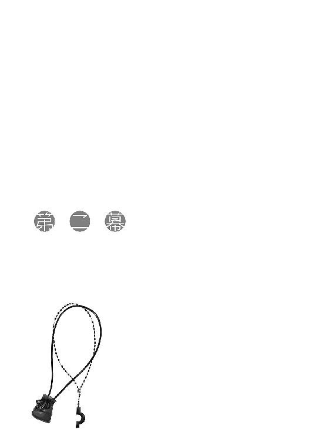
翌日は、夜が明ける前に目が覚めた。月が出ていればまだ煌々と輝いているような時間であり、山の空気が最も冷たい時間でもある。
周りからは、コルさんは早起きも苦にしない働き者だと言われるが、眠いものは眠い。単に、見栄っ張りなだけだと思う。さて今日も湯屋の仕事をこなそうかと、頭の中で手順を再確認している最中、妙なことに気がついた。
外で人の声や、砂利を踏むような音がする。
それに、見慣れない天井と、寝心地の違うベッド。
「......ああ」
旅に出たのだった、と思い出した。
そして、起き上がろうとして、毛布の中にもう一人いることに気がついた。寝ている時だけはおとなしいミューリだ。隣のベッドに寝かせたのに、夜中に勝手に入ってきたのだろう。
毛布の中が暑いくらいなのは、ミューリの高い体温と、ふさふさの尻尾のおかげらしかった。
昨晩はあれこれ言い争ったし、ミューリが旅に出たい理由は、単に村がつまらないとかそういうものだろう。しかし、不本意な心配のされかたではあったものの、心配そのものはきっと本当のことなのだ。そんなミューリの銀色の髪の毛は、水に濡れているわけでも脂に濡れているわけでもないのに、不思議にしっとりとしている。それでいて触ればするすると指の間を通り抜けていく。ホロは見事な尻尾の毛並みが自慢だが、ミューリは父親譲りの、この色合いの髪の毛がたいそう自慢らしい。
獣の耳が出ている頭を撫でてやると、耳が小さく動いていた。ただし、一向に起きる気配はない。多分、肩を揺り動かしたって起きないはずだ。小さく笑って、毛布から出た。
木窓を開けると外は息も凍りつくような寒さだが、風がなく、雪も降っていないらしい。
昨晩は遅くまで賑やかだった広場と、その向こうに見える河原ではすでに人が動き始めている。流域の町の朝市に間に合うように出かける者たちだろう。
木窓を閉じ、上着と聖典を持って、一階に降りていく。裏手の井戸はすでに氷が割られていたので、桶で水を汲んで顔を洗い、木の枝の先端を潰したもので歯を磨いてから、日課になっている聖典の暗誦をした。途中で他の客も何人か顔を洗いに来たが、これ幸いと勝手に暗誦の前で頭を垂れて、道中の加護としていった。まるでちょうど雨が降っていたので桶で水を受け取った、といわんばかりだが、商人たちのそういうざっくばらんな実利主義は嫌いではなかった。
問題は、いつもよりも長めに暗誦をしてもまだ夜は明けていなかったし、その後にやるべき仕事もないことだった。手持無沙汰になってしまい、少しだけ困った。
なにもしないのももったいないので、結局河原に向かい、荷の積み上げや積み下ろしを手伝って、空が白む頃に部屋に戻ったのだった。
「兄様、働き者すぎるよ......」
揺すっても叩いてもなかなか目を覚まさないミューリをなんとか起こし、ぐずるところに自分はすでにこれだけのことをした、と小言を言ったら、そんな返事だった。
体は起こしているものの、眠すぎて目が開かないらしい。懐炉代わりの尻尾を抱きしめながら、大きな欠伸をしていた。
「私と旅をするというのはこういうことですが、諦めますか？」
そう告げると、耳をぴんと張って、慌てて目を開けていた。
「ず、ずるいよ！」
「ずるくありません。ほら、耳と尻尾をしまって、顔を洗ってきてください。早く準備をしないと置いていきますよ」
「もう！」
ミューリは頰と尻尾を膨らませた後、頭陀袋の中から手ぬぐいやらなにやらを取り出していた。よくよく見ると、櫛が二つとブラシが三つもあった。そんなにたくさん一体なにに使うのか見当もつかない。神学上の問いよりも難しそうなことを考えていたら、ミューリは部屋から出る間際に妙なことを言っていた。
「じゃあ、ちょっと湯船で髪の手入れしてくるね」
ミューリを振り向いた時には、すでに扉が閉じられていた。
そして、ほどなく駆け戻ってきた。
「に、兄様、お、お湯は？」
「お湯？」
「い、井戸しかなくて、見たら、み、水に氷が浮いてて......お湯じゃないと髪が洗えないよ！」
半泣きのミューリに対し、深遠な訴えを聞く聖職者らしく、顎を上げた。しかる後に、深く同意するようにゆっくりとうなずく。
ニョッヒラは、熱いくらいの湯が捨てるほどいくらでも湧いてくる。ミューリはそこで生まれ、暮らしていた。初めて屋敷の外に出た貴族の少女が、いかに自分が恵まれていたのかを知るというのは物語にはよくあるが、実際に目の当たりにするとは思わなかった。
少しだけ、嗜虐的な面白さを感じなかったと言えば、噓になる。
「お湯なんてありませんよ。ここはニョッヒラではありませんから」
「え、あ......」
「辛いですか？ それなら旅を──」
「やめない！ やめないからね！」
ミューリはそう言って、どすどすと大股に廊下を歩いて行った。
めげないのは、少なくともミューリの長所だった。
踊り子のヘレンから教えてもらったという髪の手入れは、朝起きたら髪を洗い、櫛で梳いた後に、馬の鬣を使った毛の長いブラシと短いブラシ、それに豚の毛のブラシで念入りに梳くというものらしい。そんなに梳って逆に傷まないものかと不思議な気がするが、なんにせよ、こんな寒い中で頭を洗うことそのものがほとんど自傷行為に近い。
部屋に戻ってきた時には、唇を真っ青にしてぶるぶる震えていた。
「......まったく」
外套を脱いで、ミューリに着せてやった。
「それと、あなたが外で水垢離をしている間に、手紙が来てましたよ」
髪の見栄えのためだけに氷水で頭を洗う根性に、若干の敬意を込めて水垢離と言った。もちろん皮肉でもあるので、ミューリは恨めし気な目を向けてくるばかりだ。
「てて......て、が......っくしゅ！ ぐすっ......て、がみ？」
「ニョッヒラから船を誂えて送っていたみたいです」
昨晩の内にここまでたどり着けず、夜はもう少し上流の関所で過ごし、朝一番で川を下ってきたらしい。運賃を相当奮発されたようで、運んできた船頭は貴族の重要な密書だと勘違いしていた。
「ロレンスさんから......と、ホロさんから」
手紙を開いて文面を見て、内容に苦笑してしまう。明らかに大きさの合っていないぶかぶかの外套の中で縮こまっていたミューリが、子猫のように首を傾げている。手紙を渡すと、ミューリもなんとも言えない笑みを浮かべていた。教えるのに並々ならぬ苦労をしたが、その結果ミューリも文字の読み書きはある程度できる。
手紙には、相当慌てていただろうことが窺える間違いだらけの綴りで、ロレンスがミューリの安否を問い、一刻も早く迎えに行くということが記されていたのだが、その上からは無慈悲に巨大な×印が引かれていた。
そして、余白に癖のある字でこう書かれていた。
「に、兄様をよろ、しく、だっ......ふぁっぶし！」
「ミューリをよろしく、とあるでしょう？」
ため息交じりに言い返すと、鼻を啜っていたミューリはがちがち歯を鳴らしながら手紙を返してくる。
「迎えに来たり、止めてくれるのを少し期待していたのですが」
主人たるロレンスの意見はホロに一蹴されていた。この家系は、女が強い一族になるだろう。
「可愛い子には、旅をさ......っぬしゅっ！」
ミューリを見やると、鼻をぐずらせた後で犬歯が見えるくらい、にいっと笑みを見せてきた。
「間抜けな子の間違いだと思います」
ミューリは反論しかけて、また大きなくしゃみをしていた。
それからロレンスたちへの返事をしたためつつ、昨晩の残り物で朝食を済ます。書いた手紙は宿の主人に託し、準備を終えて河原に向かう。焚き火をしていたので、まだ湿っていたミューリの髪をそこで乾かさせた。すれ違う船頭やらには、井戸に落ちたのかと笑われていた。
アティフまで下る船に乗せてもらえるよう交渉すると、途中の町に納品する薪やら鶏やらを積み込んでいた船が応じてくれた。わずかな隙間に旅人を乗せるような、船頭の小遣い稼ぎなので快適な乗り心地とは程遠い。
それでも太陽が昇ってくれば体は温まるし、隣ではせっせと羽の手入れをする小鳥のように髪の毛を梳っていたミューリが、飽きたのか転寝をしていたので吞気なものだった。
湯屋では今頃こんなことをして、ああしている頃だろうな、とその場にいるかのように想像できる。十年以上も繰り返していた日常から離れるというのは、こういうことらしい。しかも、ミューリにはなだめる意味もあって湯屋に戻ると口約束をしていたが、戻らない可能性のほうがとても高い。ロレンスもホロも、それを理解して送り出してくれた。良い人たちに巡り合ったと、感謝の言葉しかない。
そうこうしているうちにも、船は川を下って行く。流れは緩やかに、川幅は広くなっていく。不本意ながら二人連れになった旅は大過なく二日目が終わり、三日目も同様だ。
ちなみにミューリは三日目の朝も髪の毛を洗おうとしていたが、若干学習して、宿の炊事場で湯を沸かせばいいと思いついたらしい。しかし、そのためには薪と炭の代金が必要だと知って愕然としていた。湯のために金を払う、という発想がそもそもないのだろう。
結局また氷の浮いている井戸の水で洗っていたが、洗い方を工夫したのか多少震えているくらいで済んでいた。次にどうなるか少し楽しみであった。
やがて河原からは石が少なくなり、草地が多くなってきた。遠くには微かに山が見えているが、そこまではなだらかな平原が続いている。ドラン平原に入ったようだ。見ていると眠くなる景色だが、山育ちのミューリには珍しくて仕方がないらしい。熱心に景色を見つめては、川沿いの街道を行く旅人に手を振っていた。
そして、そのなだらかな景色の向こうについに、小高い丘の上に作られたアティフの町と、有名なアティフの関所が見えてきた。
「......っ......っ......っ！」
船の上で急に立ち上がろうとするミューリを引き留めるのも一苦労なら、耳と尻尾が出てこないかひやひやものだ。興奮で声なき叫び声を上げるミューリの、痛いくらいに摑んでくる手をやんわりとほどくのも大変だった。
「兄様！ 町！ 大きい！ 川！ 本当に！ 鎖！」
興奮しすぎて言葉を忘れてしまったかのようだ。
ただ、船頭が言ったとおりのものが、想像していた以上の迫力でぶら下がっていたのにはやはり驚いた。金庫を縛りつける程度の鎖ではなく、その輪っかのひとつひとつが、ミューリなら腕を通せそうなほどに大きい。それがずらりと繫がり、頭上に垂れ下がっている。
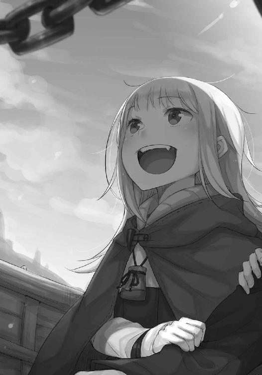
「せ、船頭さん！ これ本当に落ちてこないの？」
いくらか落ち着きを取り戻したミューリの問いに、鼻の下にひげを蓄えた撫で肩の船頭はにこりともせずに言う。
「年に一度は落ちて、船が巻き込まれて沈む。今年はまだ落ちてきてないから、そろそろ危ないな。あんたら泳げるのか？」
ミューリは顔をひきつらせてこちらにしがみつき、鎖を見上げていた。
「すぐに信じるので、からかわないでやってください」
「えっ」
ミューリが驚き、船頭は笑っていた。
「鎖の輪っかのところに、渡り鳥がつくった巣の跡がたくさん残っているでしょう」
指差すと、ちょうど鎖が真上に来ていたので、ミューリは口をぽかんと開けて見上げていた。
「毎年沈んで川の水で洗われているなら、ああはなりません」
「鎖は落ちてこないが、糞はしょっちゅう落ちてくる。上向いて口を開けていると危険だよ」
船頭の忠告に、ミューリは慌てて口をつぐんでいた。
それから自分たちの乗る船は他のたくさんの船に連なって、桟橋を目指した。船が多すぎて順番待ちになっている。どの船もここで積み荷を下ろし、代わりにニシンの干物と塩漬けを山ほど積んで戻るらしい。ようやく桟橋に着くと、ミューリはそこに積み上げられている魚を見て、今度はげんなりしていた。
「魚と一緒じゃなくて良かったあ。もう塩漬けの魚なんて見たくもない」
ニシンはいくらでもとれるために、格安の食料だ。冬の間は海沿いから山奥まで、すべての家の食卓に並び続けて人々の悲鳴を誘う。毎年冬の時期にお世話になる魚は、ここから陸揚げされてきたものかもしれない。
「まあ、臭いがすでに凄いけど......」
狼の血が半分流れていて、鼻が良いから辛いのかもしれない。普通の人の自分でさえ、港のあちこちに積み上げられている樽から漂う魚の臭いがはっきりとわかる。
とはいえ、おいしそうだな、程度にしか思わないのだが。
「今晩は魚の塩焼きにしましょうか。塩漬けとは全く違うおいしさですよ」
「え～......肉がいいなあ......」
旅の食事に関しては不満たらたらのミューリだったが、桟橋から人ごみをかき分けて港に降り立つと、急に静かになった。
「どうしました？」
見やると、空を見上げて口をぽかんと開けている。視線の先には、海鳥がびっしりと止まっている石造りの要塞があった。この町は、ミューリが生まれて初めて目にする、ニョッヒラの外の町だ。
「ミューリ、ここで立ち止まっていると邪魔になります」
手を引いたらようやく動き出したが、たちまち別のなにかに目を奪われていた。
「兄様、見て、あの人、すごい犬の群れを連れてる！」
指差した方向には、木樽を運ぶ荷役の後ろをぞろぞろとついていく、犬の群れがいた。
「あれって、犬飼いの人？」
「犬飼い？」
「世の中には、山羊飼いとか羊飼いってのがいるんでしょ？」
確かにその理屈だと、どこかに犬飼いもいるのかもしれない。
「犬飼いについては知りませんが、あの木樽の中身は、塩漬けニシンかなにかでしょう。犬たちはこぼれる塩を狙っているんですよ」
「へえ～」
感心するミューリの頭上では海鳥がやかましく旋回し、積み上げられた木箱の上では猫が丸まっている。港の騒ぎはなにもかもが珍しいらしく、ミューリは一歩進むごとにあれはなに、これはなに、と忙しかった。そして、説明を受けるたびに目をキラキラさせて、こちらの話を熱心に聞いていた。その様に、最近はつとに生意気になってしまっていたが、昔の素直で可愛らしいミューリを思い出してほっとした。
しかし、いちいち相手にしていては全く進まないし、町に入るための準備もある。まずは両替商を見つけて、町で買い物するための小銭を確保しなければならない。いい加減にその腕を引っ張って先に進もうと思った時のことだ。ミューリを捕まえるために前を見ていなかったせいで、誰かにぶつかってしまった。
「あ、失礼」
慌てて謝ると、相手は頭巾を巻いた若い娘だった。背が比較的高く、威勢良くまくった袖からはすらりと長い腕が伸びている。前掛けをしているので、どこかの船宿の娘だろう。海の塩気のせいで色が抜けた髪の毛とお揃いの栗色の目が、とても綺麗だった。
その娘が、こちらと目が合ってにっこり微笑んだ。と思いきや、ぱっと腕に抱きついてきた。
「とんでもない。お兄さんみたいな格好いい人なら大歓迎だよ」
「え？」
「旅の人でしょ？ アティフの町は初めて？ 今晩の宿は決まってる？ こんなところでうろうろしてたら、たちの悪い宿の客引きに連れてかれちゃうよ」
「え、え？ あの──」
一気にまくしたてられたのもあったが、腕に思いきり娘の胸が当たっていた。肉と魚と港の活気で見事に育った、張りのある胸だ。
「うちの宿なら清潔安心。荷揚げしたばかりの葡萄酒に、蚤も虱もいない立派な亜麻布を張ったベッドもあって、女の子もより取り見取り。なあに、お客さんみたいな司祭様でも大丈夫。女の子は皆敬虔な神の子羊だから、神様もお目こぼししてくださるって。なんなら、一晩だけ結婚して、翌日には離婚してくれればいいからさ」
「そ、それは、あの」
金を取って娘をあてがう類の宿だ、とすぐにわかった。気性が荒くて有名な船乗りたちと、貿易で大金を稼ぐ金持ちが集う港町なら、そういう宿もいくらでもあるのだろう。娘は殊更腕に胸を押し当ててきて、耳元で囁くように顔を近づけてくる。なんの香をたき込めているのか、焼き立てのパンのような甘い匂いがふわりと香ってきた。とてもではないが、客引きの娘の顔をまともに見られなかった。
「ふふ、真っ赤になっちゃって可愛いんだあ。ねえ、お兄さん、どこから来たの？ 船で南から渡ってきたのかな。宿で旅の話を聞かせてよ」
娘はそんなことを言って、腕を引っ張って歩き出そうとする。いえ、私は司祭ではありませんし、宿も別のところに逗留する予定です、と言葉がむなしく頭の中だけでこだまする。
それでもなんとか踏みとどまろうとしていたら、今度は逆から手を引かれた。
「ほらお兄さん、うちの宿はこっち......って、あら？」
捕まえた羊が歩き出さないので、娘は怪訝そうに振り向いた。
「なあんだ、こぶつき？」
見れば、娘とは反対側の腕を抱くミューリが、凄い目つきで娘を睨んでいた。
「けど、あんた見ない顔だね。どこの縄張りの娘だい？」
娘の顔が客向けのものから、剣吞なものに変わる。縄張り、というからには同業だと思われているのだろう。ミューリの服装は、誠実なパン屋の娘にはとても見えない。
「い、いえ、こちらは私の主の娘で、わけがあって共に旅を」
ややこしいことになる前にそう言うと、娘はこちらとミューリをたっぷり三回見比べてから、ようやく腕をほどいてくれた。
「お兄さん、硫黄の匂いがたっぷりするってことは、ニョッヒラでお楽しみの帰りか。そういうことね」
訳知り顔にうなずいていて、間違いなく勘違いしているだろうが、訂正するのも面倒だ。
「じゃあさ、宿はいいから、ちょっと両替してくれない？」
「両替？」
「川を下ってきたなら、細かい銅貨とか持ってない？」
客引きの娘がそんなことを言い出して少々面食らった。
「お釣りが用意できなくて困ってんのよねえ。もちろん手数料分のお礼はするよ。頰っぺたに口づけでも、膝枕でも......」
と、またすり寄ってきて、ミューリが比喩ではなく唸った。
「冗談だよ。でも、ちょっとでいいから替えてくれないかな。困ってるのは本当」
大方、こうやって右も左もわからない旅人相手に話を持ちかけ、不利な交換比率を押しつけて小銭を巻き上げているのだろう。
「すみません。私たちも両替商にこれから行くつもりだったのです」
そう告げると、娘は拘泥するでもなかった。
「そっかあ。なら、市壁の外で両替はしないほうがいいよ。ござも敷いてないようなのはもぐりだからね。ものすごい手数料ふんだくられるから気をつけな。お兄さん、いかにも真面目そうで......まあでも、小さいお目付け役がいるか」
娘はからりと笑い、ミューリに小さく手を振ると、さっさと踵を返していた。もうまったくこちらに興味を持っていない様子できょろきょろすると、通りがかった別の若い男に自分からぶつかりに行った。近くの農村から出てきたのか、真面目で優しそうな青年だった。
そこからのやり取りはさっきと同じで、相手が素直に謝るやいなや、腕に胸を押し当てて耳元に顔を近づけている。傍から見ると、真面目そうな青年がかちんこちんに固まっているのがよくわかった。
あまり褒められたやり口ではなかろうが、そのたくましい商魂と才覚には感服する。
「まったくもう」
そこに、冷たく鋭い声が響く。
「兄様は、やっぱり私がいないとだめじゃない」
見れば、呆れたミューリの顔がそこにあった。視線を再度青年に向けると、しどろもどろな言い訳など聞く耳を持たない娘にがっちり腕を摑まれ、そのまま連れて行かれていた。弱き者は、狩られる運命にある。
「それに、でれでれしちゃって」
「で、でれでれなどしていません」
慌てて言い返したが、ミューリは軽蔑するような目つきのまま、ふんと鼻を鳴らした。
「あんなの、ちょっとでかいだけじゃない」
「え？」
聞き返すと、ミューリは腕から体を離し、代わりに手を摑んできた。小さな手であり、ミューリは背丈も肩幅も腰回りも、色々なところが小さい。体を離したのは、腕に当たる部分を比べられるのは屈辱的だ、ということだろう。もちろん、指摘はしなかったし、気づかない振りもした。
代わりに、こう言っておいた。
「ただ、助かりました。お礼を言っておきます」
ミューリはこちらを不機嫌そうにじっと見上げた後、看板をひっくり返すように笑顔になっていた。
ぼんやり立っていたら、またぞろ獲物を狙う者たちから牙を向けられかねない。さっさと歩き出すと、ミューリは港の様子を眺めてひととおり満足したのか、こんなことを言った。
「それで兄様。兄様って、結局この町でなにするの？ 街角でお説教したり？」
「そんなことはしません。基本的にはハイランド様のお手伝いです」
「なんだっけ。『我々の神の......』」
やはり盗み聞きしていたらしいが、今更隠す理由もない。
「『我々の神の書』」
「それってなんなの？」
「聖典の俗語翻訳版を作るという計画です」
「ああ、なるほど」
ミューリはそう言いつつ、まったくわかっていない顔をしていた。
呆れた目を向けると、にひひと笑い返される。
「聖典は教会文字で書かれています。古の時代、預言者からの言葉をしたためたはいいものの、教会が世界にあまねく広まったために、原典を読むことのできない聖職者が大勢出てしまいました。そこで、神が人々に授けてくれたのが教会文字と言われています」
「ふーん。古ってどれくらい？ 母様の子供の頃よりも？」
思わず周りを見渡してしまったが、まさか真面目に聞く者もいないか、と脱力した。
「それはどうでしょう。もしかしたら、それくらいかもしれません」
「へ～」
妙なところで感心していたが、本題は違うので咳払いをして話を戻す。
「とにかく、聖典はその教会文字で書かれていますが、普段使われている文字ではありません。俗語と呼ばれる普段使われている文字すら、読み書きできる人は限られます」
ミューリが嫌そうな顔をしているのは、時には荒縄で椅子に縛りつけられ、無理やり読み書きを教えられたことを思い出したからだろう。
「そのせいで、聖典を読めるのは一部の人だけです。それでも教会に行けば聖職者が聖典に書かれた教えを解説してくれるので、ずるずるとこの状況が続いていました。ですが、やっぱりそれは良くないということになったのです。教会の聖職者だけが聖典を読み、一方的に神の教えの正しさを説くのではなく、聖典をたくさんの人が直接読んで、正しいことはなにかと各々にも判断してもらおうという、そういう計画です」
「それで、『我々の神の書』？」
「そうです。素晴らしい名前でしょう？」
ミューリは綺麗な瞳でこちらをまじまじ見つめてから、言った。
「兄様は私を子供扱いするけど、兄様も十分子供みたいだよ」
「は？」
聞き返すこちらには、意地悪そうに笑うだけ。
とはいえ、確かに『我々の神の書』の話はついつい鼻の穴が膨らんでしまうような、冒険と挑戦の要素がたっぷり詰まっているものだった。
「じゃあ、兄様は本を作るんだ」
「ありていに言えば」
しかし、聖典の翻訳は言うは易し、行うは難しだろう。聖典は曖昧な物言いやたとえ話に満ちていて、高名な神学者でも人によって解釈が様々だ。しかも日常ではまず使わない特殊な単語もたくさんあって、翻訳は一筋縄ではいかないだろう。
それに、この計画が強い信仰心によってのみ進められているわけではない現実もわかっている。これは教皇と対立し、その対立が長期化しているウィンフィール王国が、間違っているのは教皇のほうだ、と主張して相手の足元から切り崩していく作戦にほかならない。なにせ聖典を片手に清貧を説く司教の後ろには、巨大な鐘楼を備えた荘厳な聖堂があったりするのだから、やっていることと言っていることが違うのは誰の目にも明らかだ。しかし、聖典を直接読めないために、人々はその間違いを指摘することが難しかったり、できなかったりしてきた。
当然、教会側はこの計画に猛反対するのが目に見えている。聖典を俗語版に翻訳しないことで、聖典に触れられる者の数を制限し、無知な民衆は無知なままにしておきたいはず。『我々の神の書』の計画は、教会側にとってかなり頭の痛い問題になるだろう。
また、ウィンフィール王国側には、この計画に取り掛かる切実で実用的な理由もあった。現在国内にある教会すべてが教皇の命令によって扉を閉ざしているので、人々は自分たちの力で誕生の洗礼や、結婚の立会いや、埋葬の際の祈りなどを捧げなければならなかった。
この『我々の神の書』の計画を考案したハイランドは、やはり慧眼としか思えない。デバウ商会が王国に与しようと決めたのは、おそらくハイランドの聡明さゆえだろう。
ただ、それは追い詰められた者たちの苦肉の策とも言えた。聖務停止はおそろしい手段だ。大事な人の臨終の最中、天国に行けるように祈りを捧げて欲しいと願っても、聖職者はそれをしてはならない。人生の大事な節目となる幸せな結婚式に、神の祝福を与えてもらうこともできない。そもそも、結婚の儀は教会が司ることなので、正式な結婚式を挙げることすらできないのだ。教皇は、それらすべてを、税欲しさに台無しにしている。人の一生をなんだと思っているのだろう？ 神の愛は無償であり、神の教えとは税を取るためのものではない。
やはり間違っているのは教皇だ、と思う。そこにはなんの正しさもない。そして、こんな横暴を認めていては、自分たちが世界を正しいと思う、その正しさの根源である神そのものの権威が疑われてしまう。
「兄様」
と、ぐるぐると頭の中で自己問答していたら、ミューリに袖を引かれた。
「顔が怖い」
「......。考え事をしていました。なんですか？」
「港はここで終わっちゃうよ？ 目的地はどこ？ あっちの坂の上の町？」
港の周りは、そこいらの町よりよほど発展していて、大きな建物もたくさんある。倉庫を兼ねた商会や、船宿だ。その奥にも建物はずっと続いていて、路地の向こうにはさっきの娘が客引きをしているような怪しげな店もわんさかあるのだろう。娘が言ったとおり、ござを敷いておらず、立ったまま道の隅で両替をしている者たちもいた。鍛冶屋や木工職人の工房もあるので、この港がすでにひとつの町とも言える。
しかし、港から石畳の舗道が続く坂の上には、ここからでもその大きさがわかる市壁が見えている。その市壁のあちこちにたくさんの足場が組まれているので、今なお拡張中のようだ。
デバウ商会の商館も、あるとしたらそちらだろう。
「町に行きましょう」
「やった！」
「やった？」
怪訝な顔で見るとミューリはそっぽを向くが、なにを考えているかはわかる。
「買い食いはしませんよ」
「え～......兄様が毒牙にかかりそうなところを助けてあげたじゃない」
「あ、あれは......自分でも断れました」
咳払いをすると、ミューリは生意気に肩をすくめている。
「第一、路銀も無限にあるわけではありません」
「私が酒場で踊れば稼げると思うよ？」
睨みつけると、肩の次に首をすくめて一歩離れる。本当に稼げてしまいそうなのがまた困る。
「贅沢は敵です」
「節制は人生を楽しむ敵だと思うな」
睨んでも、今度は笑顔を返された。
港から町の市壁に続く道沿いには、すでにぎっしりと露店が並んでいる。
預言者が神から与えられた試練の道には、一歩ごとに悪魔の誘惑があったそうだ。
神よ我を守りたまえ。
気を引き締め、禁欲を誓ったのだった。
アティフは賑やかな町だが、それはニョッヒラとは全く違う。
誰も彼もが大声を張り上げ、全力で走っているような賑やかさだ。
「おら、どけどけ！」
「こんなところに木箱を積み上げたのは誰だ！」
「ニシンだよ！ ニシン！ 塩漬けにされてない生のニシンだ！」
「旅の兄さん！ 護身用に短剣をひとつどうだい！ これなら牛も捌けるっていう逸品だ！」
自分も外の世界は知っているつもりだったが、それはもう十年以上昔の話であることを実感した。あまりの喧騒に、眩暈がしそうだ。
「ミューリ、大丈夫ですか？」
人ごみにもみくちゃにされ、辺りはものすごい人いきれと、魚の臭い、道端で捌かれている羊や豚の血の臭い、それらを油で揚げる匂いや炭火の煙で満ち満ちていた。
心配して声をかければ、ミューリはちょうどウナギの揚げ物を食べ終わったところだった。
「ふぇ？」
聞き返しつつ、鶏の詰まった籠を満載した荷車をひょいと避け、くるりとまわりながら通りすがりの犬の頭を撫でている。あっという間に町の騒ぎに慣れてしまったらしい。
「わ！ 次はあれ食べたいな」
と、指を指したのは、肉をたっぷり詰めたパイを並べている店だった。
「......河口で獲れるウナギの揚げ物、豚の血の腸詰、牛の胃袋の煮物、それから？」
「ちっちゃい蟹の揚げ物は塩が利いていておいしかった。生ニシンの塩焼きも想像以上においしかった。ニシンも捨てたもんじゃないね」
ミューリの懇願に負けた自分が情けなかった。
「大食は七つの大罪のひとつです。大体、いくらかかったと思っているんですか。ニョッヒラから持ってきた小銭も全部なくなってしまいましたし......」
この時期はどこも小銭が不足しているらしく、露店で大きな額の貨幣を渡すと、露骨に嫌そうな顔をされた。客引きの娘が両替を持ちかけてきたのは、小遣い稼ぎではなく、本当に困っていたのかもしれない。
「銀貨で買い物すればいいんだよ。山ほど買えば、お釣りなんて要らないじゃない？」
「ミューリ！」
叱ると、耳の穴に指を突っ込んでそっぽを向いていた。
「大体、父様から餞別もらってるはずなのに、なんでそんなけちけちするの？ 大食が罪なら、吝嗇は？」
「うっ」
普段こちらの説教を聞き流しているようで、きちんと覚えているのだから始末に悪い。憤怒、大食、色欲、物欲、嫉妬、傲慢、怠惰、の大罪には入らないが、吝嗇もかなり罪深い。
「......これは吝嗇ではありません。節制です」
「違いは？」
本当にわからなくて聞いているのではなく、こちらが困るとわかっていて聞いている。耳と尻尾を出していたら、嬉しそうにわさわささせていただろう。
聖職者を目指す者としては情けないことだが、奥の手を使った。
「だめなものはだめです」
ミューリはぶーっと唇を鳴らしてそっぽを向いたが、潮時だと思ったのか、それ以上食い下がりはしなかった。
その機を見計らって、言った。
「それと、やっぱりその格好はどうにかしないとだめですね」
「え？」
静かになった代わりに、明日はなにをねだろうかと物色するように露店を眺めていたミューリが、ちょっと驚いていた。
「なんで？ 可愛くない？」
若干、傷ついているようにも見えた。
「......可愛いか可愛くないか、ではありません」
「もう、なんだ。やっぱり可愛いんでしょ？ よかったあ」
えへへ、と嬉しそうにしている様子に、危うく心が折れるところだった。
「似合ってはいるかもしれませんが」
そう言い直して、なんとか言葉を続けた。
「やはりそういう格好は目立ちます。旅を続けるなら、別の服を用意しますから着替えてください」
ああ言えばこう言うミューリだが、こちらが真剣に言えば、きちんと聞く耳は持つ。
自分の格好を少し見直してから、小首を傾げていた。
「兄様がそんなに言うなら着替えるけど......なんで？ 皆褒めてくれるよ？」
「だからです」
さっきの客引きの娘も誤解をしていたように、露店でミューリが買い食いするたびに、金を支払うこちらを見る店主の目が痛かった。若く、むしろ幼いと言ってもいいくらいの着飾った少女を連れて歩き、食べ物を買い与えているのだ。それが派手な身なりの貴族の若者ならともかく、ロレンスに旅用に誂えてもらったのは、旅の聖職者にふさわしい格好だった。外聞がいいわけがない。
そのことを嚙んで含めるように言うと、ミューリはつまらなそうな顔をしつつ、納得してくれたらしい。
「私はどう見られても構わないけど......兄様が困るのは嫌かな」
ミューリはため息をついてから、言った。
「で、どんな格好ならいいの？」
「旅の女性の格好は、概ね二通りです。修道女の格好か、男装ですね」
「修道女って、母様がたまにしてる格好だよね。ひらひら裾が長くて、布地がたっぷりの」
「昔の旅でも、ホロさんは修道女の格好がよく似合っていましたよ」
「なら、私も似合うってことか」
何百年も生きる狼の化身のホロは、昔からずっと変わらない少女の姿のまま。そしてミューリは、成長して母親と瓜二つになった。
「どうでしょう。ホロさんはあなたと違って、落ち着きと威厳がありますから」
「なにそれ！」
違うのはまさしくそういうところです、とは胸中だけで言っておいた。
「動きにくいのは嫌。それに......母様と張り合いたくない」
女の子ならではの、見栄や意地があるらしい。
「じゃあ、デバウ商会の人に頼んで、小僧の格好を用意してもらいましょう」
「兄様より格好いい美男子になったらどうしよう？」
苦笑しか出ないが、ミューリは母親譲りの整った顔立ちだ。きっと男装も似合うだろう。
それに、男性が女性に扮するよりも、逆のほうが圧倒的にばれにくい。
「さ、行きますよ」
「はあい」
東から西に向かって流れる川の、南側に位置する丘の上にアティフの町はある。丘の最も高いところに広場が作られ、その周りに教会や市庁舎などの、町の重要な建物が並んでいるという典型的な南の地方の作りだ。貿易が盛んなので、町の立役者にも南の人間が多いのだろう。
露店で聞いたところによれば、デバウ商会の商館も、その規模にふさわしく広場から伸びる目抜き通り沿いにあるとのことだった。慣れている者たちなら人の少ない裏道を通るのだろうが、初めて来た町なので大きな道に沿っていったん広場に出ることにした。それに、両替商もあるだろう。
「わあ......」
と、ミューリが顔を上げて呆けたように呟いた先には、立派な教会が建っていた。
港でも石造りの要塞に見惚れていたが、そもそも総石造りの建物自体が珍しいのだろう。ニョッヒラでは建物は大きくても三階建てで、すべてが木造建築だ。教会は五階建ては優にあり、鐘楼はさらに上に伸びている。まさしく圧倒される大きさだった。
「ねえ兄様......これ、ひとつずつ石を積み上げて作るの？」
「そうです。大変な手間がかかっていますが、苦労が多ければ多いほど、信仰の深さを示すことにもなります。重い石を切り出してきて教会の建物に使ってもらうことは、大きな名誉でもありますからね。近寄って探してみれば、石には寄付した人たちの名前が彫られているのが見つかりますよ」
「へ～」
「少し見学していますか？ 私は誰かが使ってしまった小銭を補充してくるので」
教会を見上げていたミューリは、ゆっくりと視線を下ろして、満面の笑み。
「たっぷり両替しておいてね？」
悪びれる素振りもなかった。
「なんてね。兄様が迷子になったら困るから、一緒に行ってあげる」
「......」
隣に立つミューリを見ると、心底楽しそうだ。自由奔放で、その様子にはもはやため息を通り越して、笑みさえこぼれてしまう。笑うしかない、とも言えるのだが。
それから、広場の中心にある聖母像の周りで筵を広げている両替商たちの許に向かった。旅人だけでなく、買い物のためなのか、町の人々もひっきりなしに訪れて、両替商は難しい顔で天秤に地金を乗せたり貨幣を乗せたりしている。その中で、ちょうど客の列が途切れていた両替商を見つけ、声をかけた。
「両替をお願いしたいのですが」
「ああ、なにをいくらだね」
挨拶もなにもなく、単刀直入だ。慌てて財布を取り出して、白い銀貨を一枚出した。
「こちらをディップ銅貨に」
「太陽銀貨か。それだと、ディップ銅貨が三十枚だ」
「えっ！」
思わず驚きの声を上げてしまった。ディップ銅貨はこの近辺で流通するぺらぺらの銅貨で、一枚で買えるのはせいぜいパンが一欠片か、麦酒が一杯程度のもの。一方、太陽の図柄が彫り込まれた銀貨は遠隔地貿易にも通用するような、この地方では最強の銀貨であり、一枚で四人家族の一週間分の食費を優に賄え、安息日にはちょっとしたごちそうも買えるくらいの価値がある。
事前に湯屋の主人であるロレンスから主な貨幣の交換比率を聞いていたが、少なくとも四十枚、運が良ければ五十枚にはなると聞かされていた。
旅人だからと足元を見られているのだろうかと思っていたら、両替商はなにかを言うよりも早く、手元の羊皮紙をばっと広げて見せ、内容を暗誦した。
「市政参事会よりお達し。昨今の小銭不足に鑑み、参事会は太陽銀貨とディップ銅貨の交換比率を三十枚と規定する」
旅人の不平には慣れているようだった。
「景気が良いのは助かるんだがね、おかげで貨幣の供給が間に合ってないんだよ。この町に限ったことじゃないが」
両替商は羊皮紙をくるくると巻いて、天秤を乗せた台の下にしまう。
「ほれ、この町にはでかい教会があるだろ。みーんな小銭がそこの寄付箱に吸い込まれちまうんだ」
振り向きもせずに親指で教会を示していた。
「税もたんまりとってる上に、貯め込んだ小銭をどうしてるんだかな......っと、兄さんは旅の聖職者か」
両替商は言葉ほど悪びれてもおらず、にやりと笑っていた。
「で、どうするね」
「あー......わかりました。お願いします」
「毎度」
銀貨を渡すと、表、裏と調べ、銀地金と天秤で重さを比べてから、ようやく銅貨の束を渡してくれた。きっちり三十枚。客引きの娘は本当に困っていたのだろうし、露店の主人は釣銭を渡すのを嫌がるはずだった。
そして、ミューリの買い食いは随分高くついた。
「兄さんからも言ってくれよ。せめて寄付箱の小銭を貯め込むなって。今の教会は、金、金、金だ。ウィンフィール王国には頑張ってもらいたいよ」
苦笑いしかできず、銅貨を財布にしまい、両替商をあとにした。
ただ、その口から出てきた教会批判や、なによりもウィンフィール王国の名前に鼓動が速くなった。町の人々の不満をじかに聞いて、自分の使命を再確認する。
人々の生活を圧迫して、なにが魂の救済者か。
「兄様、次は？」
その問いに、力強く答えた。
「デバウ商会です」
ハイランドと早く合流しなければ。
使命感に突き動かされ、やや戸惑うミューリの手を引きながら、目抜き通りを歩いて行ったのだった。
広場から伸びている大きな通りを南に下ると、似たような建物がずらりと並ぶ区画が現れた。一階が荷揚げ場で、二階から三階にかけての壁には、旗が堂々と掲げられている。この町の経済を牛耳る大商会の建物だった。その中に、ほどなく見慣れたデバウ商会の旗と看板が見つかった。
「あれ......この模様、どこかで見たことある」
ミューリが小首を傾げていた。
「さっき両替した銀貨です」
「あ」
デバウ商会は商会でありながら、独自にデバウ銀貨と呼ばれる高品位の貨幣を発行している。その模様が太陽の図柄なので、太陽銀貨と呼ばれることが多い。
「あなたのご両親の尽力があったために、発行することのできた貨幣です」
行商人と狼の化身の冒険の、最後を飾る大騒ぎだったらしい。やはりあの人たちはすごい、と思うのだが、当の娘のミューリはいまいちぴんときていないようだった。
デバウ商会は通りに面した間口の広い建物で、一階部分は荷揚げ場になっている。自分の体よりも大きな荷物を背負った商人や、山ほどの積み荷を乗せた荷馬車がひっきりなしに出入りしていた。
荷揚げ場の隅でうずくまっている物乞い風の者は、施しをもらう代わりにこの騒ぎに乗じて盗みを働く奴がいないか見張っているのだろう。町には盗人以外にも、野良猫や野良犬や、放し飼いのせいで誰のものかわからなくなった野良豚や野良鶏が獲物を求めてうろついている。自分も放浪学生の頃に似たようなことをやって糊口をしのいでいたので、少し懐かしくなる。
「ほらほら、そんなところに突っ立ってちゃ邪魔だよ！ それから寄進の頼みなら他所を当たってくんな！」
もろ肌から湯気を立てている荷揚げ夫が、犬猫を追い払うかのように追い立ててくる。
ミューリは慌ててこちらの後ろに隠れていた。
「いえ、商館の御主人に取り次いでいただきたく」
「ああ？」
「トート・コルと言います。レノスに行く予定がこちらに変わった、と伝えていただければ」
「ふん？」
胡散臭そうにこちらを眺めていたが、ごつい肩をすくめて奥のほうに消えていった。
そして、ほどなく戻ってきた。
「奥に通せだとさ。なんだよ、あのお偉い様の連れなのか」
やはりハイランドはすでにここに来ているらしい。
荷揚げ夫に礼を言い、荷揚げ場の奥に進む。
ありとあらゆる商品が山積みになっていて、一段高いところには毛布を敷いて眠れそうなほどに大きな帳場台があった。今はその広い机も貨幣と羊皮紙の山でいっぱいになり、埋もれそうになりながら書き物をしている者がいた。そんな彼の背後の壁には、大きな画布がかけられている。そこには等身大よりもさらに大きい天使が描かれていて、静かな眼差しで商人たちの働きぶりを見下ろしていた。
堂々たる絵なのでミューリもそちらに視線を奪われていたのだが、感動したり圧倒されたりしているのではなく、不思議そうに首を傾げていた。
「天使もお金を数えるんだね。でも、剣はなんで？ 仕事をしろって脅しかな」
天使は右手に剣、左手に天秤を持っている。ミューリの解釈に、笑ってしまう。
「剣は正義、天秤は公平です。ただ......そういう意味に思えなくもないですね」
誰も彼もが、なにかに急き立てられるかのように仕事をしているから尚更だ。まさしくごうごうと燃え盛る暖炉の中のようで、忙しさでは湯屋の仕事で一家言あるつもりだったが、ニョッヒラの湯屋の仕事などまだまだ甘かった。世界の動く速度とは、こういうものなのだ。
山奥の十年の生活でこびりついた湯垢が、少しずつ剝がれていくような気がした。
「あ、コル様ですか」
どこまで行っても人で溢れている商会の奥に向かっていたら、身なりの良い商人に声をかけられた。なにで染めてあるのか、緑色の布地の服がいかにも貴族然としていて、大きな取引にしか携わらない類の商人なのだろうと示している。整えられた長い口髭も、先端が牛の角のように鋭く尖っていた。毎朝卵白で固めているのだろう。
「連絡を受けてこちらに参りました。トート・コルです」
「本店の大番頭からお世話を申しつけられております。当商館を預かるステファンと申します」
握手を交わすと、自分より二回りは上であろうステファンは、当然のことながらミューリに視線を向ける。
「こちらのお嬢様は？」
「こんにちは。訳があって兄様と旅をしています。ミューリと言います」
はきはきと、笑顔でさも当然のことのように自己紹介をする。あまりにも自然なふるまいだったので、ステファンはそういうこともあるのだろう、と勝手に納得しているようだった。
「お部屋はご用意してあります。お二人はご一緒でも？」
「大丈夫です。ご迷惑をおかけしますが......」
「滅相もございません。コル様は丁重にもてなすようにとのことですから」
立派な身なりのステファンが最上級の礼を示すので、隣のミューリは目を丸くして驚いていた。とはいえ、デバウ商会はロレンスとホロに大恩があるのであって、自分はそのおこぼれにあずかっているにすぎない。
「ハイランド様はすでに？」
「はい。先々日に、船で参られました。先ほど商人組合の会議から戻られたばかりなので──」
と、ステファンが言いかけたその時だった。
荷揚げ場のさらに奥に繫がる廊下からどやどやと足音がしたかと思えば、海が割れるように人々が隅に寄った。出てきたのはお付きの者を従えた高位の人物で、高位の、とすぐにわかるのは、服の仕立てが見るからに違うのと、その雰囲気のせいだ。あるいは王家の血が見せる、男から見てもなお目を引くほどの顔立ちと、目も覚めるような金色の髪の毛のせいかもしれない。ウィンフィール王国には黄金羊の伝説が残っているのもうなずける。
ハイランドその人だった。
「これはこれはハイランド様」
ステファンが腰を折って敬礼すると、ハイランドは楽にするようにと手のひらで止める。
そして、こちらを見やると旧友に会ったかのような笑顔を見せた。
慌てて、ステファンに倣い頭を下げる。
「ご機嫌麗しゅう。ハイランド様」
「コル博士もお変わりなく」
自分より年若いハイランドは、独特のかすれた声でこちらのことをわざとらしく博士と呼んだ。博士の称号は教会から授けられる権威あるもので、その称号を持つ者がいるところが大学になるほどのもの。普通に考えれば自分が博士であるというのはあり得ないことだが、ハイランドが口にすると、まさか？ となる。お付きの者やステファンの驚きように、さすがに頰が熱くなる。
「お戯れを。博士などと畏れ多いことです」
「では、そちらもその堅苦しさをやめてもらおうか？」
悪戯っぽい笑みと共に言われてしまう。
「コル、君の学識には敵わないし、その能力に頼らせてもらう。しかし、君は私におもねるのが仕事ではないだろう？」
湯屋で議論を戦わせた時も似たようなことを言われたが、それはハイランドの気さくさでありながら、幾分かは願いであるのかもしれない。
おもねるのが仕事、という言葉に、慇懃なステファンが不自然なほど素知らぬ顔をしていた。
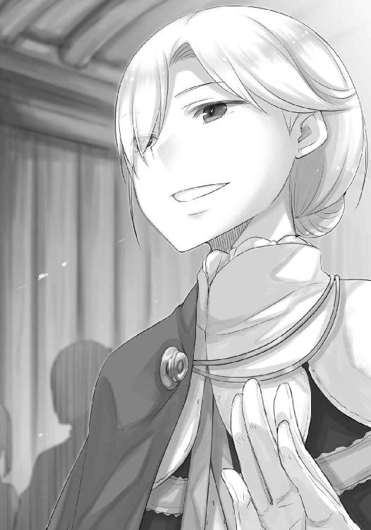
「わかりました。けれど、私は元々こんな話し方なのです」
「結構」
少年を思わせる無邪気な笑みを見せてハイランドは言うと、「それで」と苦笑を混ぜた。
「そこにいる娘は？ どうしてここに？」
「いーっ」
ミューリはこちらの陰から顔を出し、ハイランドに歯を剝いて見せた。
「はは、相変わらず元気なことだ。ステファン殿、砂糖とコケモモのお菓子があっただろう。それを彼女に」
ステファンはきょとんとしていたが、やり手の商人らしくすぐに恭しくうなずいていた。
「ではまた後ほど、晩餐の時にでも」
ハイランドは言い置いて、颯爽と歩いていった。
お付きの者も一緒に出ていったのもあるだろうが、途端に空気の密度が下がった気がする。
それこそが、貴族の風格というものなのだろう。
「ミューリ、いい加減に失礼なことはやめなさい」
商会から出ていったハイランドの背中を睨みつけていたミューリに言うと、ぷいっとそっぽを向かれた。
「でも、お菓子はもらっておく」
ミューリのなお不満げな一言に頭をこんと小突き、やれやれとため息をついたのだった。
用意されていた部屋は商館の三階部分にあった。普段は商会を訪れる商人たちを泊めたりするのだろう。ベッドがひとつしかなかったので、案内してくれた小僧はもうひとつ用意しましょうかと申し出てくれたが、そこまで手間をかけるのも申し訳ない。それに、ミューリは寝相は悪くないのでさほど気にもならない。もちろん、異性という目で見ることもない。
なので、ベッドの代わりにミューリの変装用の服を頼んでおいた。
「ねえ兄様」
頭陀袋の中から、使い慣れたペンとたっぷりの注釈が書き込まれた聖典を取り出していたら、ミューリに声をかけられた。
「今、私たちってどのあたりにいるの？ これ、世界の地図だよね？」
ミューリが立っていたのは、壁に張られた大きな地図の前だ。
地図は一枚の皮に描かれていて、ミューリくらいなら簡単に包んでしまえそうなほどに大きい。羊の皮の羊皮紙ではなく、若い牛の皮を丸ごと一頭分使っているのだろう。
「大体このへんですね」
地図は教皇がおわす南の大都市を中心に描かれている。そこを基準にすると、アティフは地図のかなり左上の隅っこになる。
「ニョッヒラは？」
「アティフから川を上って、ここです」
示した場所は、地図の絵が途切れかけ、装飾用に描かれている人間の顔を持った太陽の、髭の下あたりだった。
「あはは。この世の果てだね」
「それでも人々は住んでいて、精一杯生きています」
「兄様は昔、旅に出てたんだよね？ それはどこ？」
それはですね、と律儀に答えていたが、ミューリの好奇心は底なしだった。途中で扉がノックされたので、これ幸いと切り上げる。
「ミューリ、地図ばかり見てないで、着替えてください」
届けられたのは小僧用の服一式と、ハイランドがステファンに言いつけてくれた、砂糖とコケモモの菓子だった。
「わっ、すごい！」
もちろん、小僧用の服の素晴らしさに感動したわけではない。ぽんっと音がしそうな勢いで耳と尻尾を出したミューリがこちらに飛びかかってくるのを、ひらりと交わす。
「食べるのは着替えてからです」
身長差があるので、菓子の盛られた盆を頭上に上げてしまえばミューリには届かない。悲しげな目で見つめられたが、首を横に振るとたちまち不機嫌な顔になる。ころころと表情の変わるミューリは、着替え用の服をひったくっていった。
「もう、面倒臭いなあ......」
不満たらたらな様子で着替え始めたが、頓着なしに服を脱ぎ捨てるのでさすがに部屋の外に出た。
「ええ？ 湯船で散々見てるのに？」
と、ミューリは不思議そうだったが、そういう問題ではない。扉に背をつけてため息をつく。
母親たるホロもさすが狼の化身と言うべきか、肌を見せることにほとんど躊躇いを見せなかった。
そうなると、過剰に反応するこちらになにか邪な感情があるみたいで情けないが、いや貞淑な乙女であるべきは向こうのほうだ、と思い直す。
ただ、ニョッヒラの湯けむりで曇っていない中で見たミューリの裸は、ちょっと思っていたのと違っていた。瘦せてどちらかというと筋肉質にすら見えていた体から、いつの間にか少しずつ角が取れ始めているようだった。まだ丸みを帯びているわけではないが、その兆しを予感させるというのだろうか。
きちんと成長しているのだと思うと、喜ばしいのと同時に、なぜか少し寂しくもあった。
「照れ屋の兄様ー、着替えたよー」
ぼんやり菓子を食べながら待っていたら、扉の向こうからそんな失礼な声がかけられる。
扉を開けて中に入れば、なんとも美しい少年がそこに立っていた。
「えへへ。どうかな？」
「......驚きます。服というのはやはり大事な物のようです」
仕立ての良い服、ということもあるのだろうが、ぱりっとしたズボンと筒袖の服、染みひとつない薄皮のチョッキと、長めの腰帯を巻けば、大商人の側で御用聞きをする、よくできた小僧そのものだった。
「けど、髪の毛はどうしたらいい？ 兄様みたいに結わえるだけでもいいかな」
自分も切るのが面倒で伸ばしているが、ミューリのそれはかなり長い。
「きちんと編んでおいたほうがいいでしょうね」
「わかった」
と言って、ミューリは机から椅子を引いて持ってくると、手を伸ばして菓子の盛られた盆を奪い取った。それから椅子に座って背中をこちらに向ける。
「ん」
編め、ということだろう。怒る気力もなかった。
ミューリの荷物から櫛を取り出し、上機嫌に菓子を頰張るミューリの髪を梳く。柔らかく、少し冷たく、不思議な手触りだ。量が結構あるので、三つ編みを二房作り、その二つをよじってまとめることにした。
「それにしても......いろいろ面倒なんだね」
「それは、あなたの世話に手間がかかる、という意味ですか？」
「ちーがーいーまーすー」
ミューリはそう言ってから、背中をのけぞらせてこちらを逆さまに見た。
「耳も尻尾も隠して、女であることも隠さないとならないなんて」
「それが世の中というものです。ほら、きちんと前を向いて」
頭を指でつつくと、ミューリはおとなしく姿勢を戻す。その柔らかい髪の毛を編むのは久しぶりで、思いのほか面白かった。昔は髪の毛を編んでくれとしょっちゅうせがまれたものだ。いつ頃からそうしなくなったのかと思い出そうとしていたら、ミューリがまた口を開く。
「ねえ、兄様」
「なんですか？」
一房を編み終わり、残りに取り掛かる。櫛で髪を梳き直していたが、ミューリは言葉を続けてこない。
「どうしました？」
重ねて問うと、菓子を食べる手も止めていたミューリは、感情の窺えない声で言った。
「あの地図のどこかには、耳も尻尾も隠さないでいい場所ってあるのかな」
思わず手が止まる。顔を上げれば、椅子に座ったミューリの向こう側には、雄大な世界地図があった。アティフのような大きな町でさえ、地図の中では片隅にすぎず、ニョッヒラに至ってはようやく描かれているかどうかにすぎない。世界はそれほどまでに広大であり、無限の可能性に満ちている。
そして、気がつく。
ミューリがニョッヒラから外に出たいと願うその最たる理由は、もしかしたらこれかもしれなかった。
「それは......」
しかし、口ごもった。
ミューリは物心つくまで、湯屋の一室から滅多に外に出してもらえなかった。外に出る時は、顔以外を布でぐるぐる巻きにされていた。周りには体が弱く、湯の煙に耐えられないからと説明していたが、もちろん耳と尻尾を隠すためだった。
分別がつくようになってからは、母親のホロが、ミューリに流れる血のこと、悪魔憑きという概念、もしもそれらがばれてしまえば、自分たちはニョッヒラにいられなくなることなどを説明していた。
そのことを知った日、ミューリが自分に泣きながら問うてきたことを、昨日のことのように覚えている。
私は皆から仲間はずれなの？
仮にも聖職者を夢見る者ならば、なんと答えるべきかは明らかだった。辛い時、悲しい時、孤独を感じた時に、空を見ればそこには永遠の自分の味方がいると教えるべき。しかし、その時の自分は、こう答えた。
──少なくとも、自分はなにがあっても、ミューリの味方です。
あの時のミューリは、世界が暗く冷たいのだと知らされ、必死に頼れるなにかを探していた。そのミューリの心に言葉を届けるには、岩よりも固い信念が必要だと感じた。自分がこの世で信じている、もっとも確信に満ちた言葉を伝える必要があると直感したのだ。だから父親のロレンスが、とすら言わなかった。未だ振り向いてもらえない神のことを言わなかったのは尚更だった。自分なら、自分のことならば、それだけは絶対に約束できる。
そして、ミューリは笑ってくれた。良かった、と言って笑ったのだ。
以来、ミューリは自分の運命を受け入れて、耳と尻尾を隠す術も身につけて、普通......かどうかは疑問だが、人の少女としてニョッヒラで暮らしていた。そのことはとっくに割りきれていたと思っていたのだが、そう簡単にはいかなかったのかもしれない。
「それは......」
ミューリの髪の毛を編む手が止まっていた。
噓や気休めは、その手からたちまちミューリに伝わってしまうような気がした。
なにより、簡単に誤魔化せる相手だと見くびることは、ミューリに対して失礼だ。
「難しいでしょうね」
地図の中心に教皇の御座があるように、世界は教会に支配されている。土地の伝説を重視するような場所であっても、人ならざる存在を見たら受け入れるかどうかは賭けになるだろう。
「ミューリ、ですが」
「大丈夫」
ミューリはそう言って、またぐいっと体を仰け反らせてこちらを見た。
「母様に父様がいるように、私には兄様がいるもの。そうでしょ？」
あの時よりも大人びた笑顔だった。それに、わざと変な姿勢をしているのも、深刻に見せないためのこちらへの気遣いだとわかる。
「......そうです。私の話はろくに聞かないのに、よく覚えていましたね」
なので、こちらもそう言ってやった。自分やロレンスのように、理解ある人は必ずいる。それを見つければいいのだ。
ミューリは目を閉じ眉根に皺を寄せ、いーっと歯を見せる。ただ、そのまま姿勢を崩して後ろに倒れそうになったので慌てて受け止めたが、ミューリは受け止めてもらえると確信していたようだ。
目を閉じたまま、随分安らかな顔をしていた。
「なら、大丈夫。どこだって、一緒」
目を開くと、ミューリは照れ臭そうに笑って、体を起こす。
「ほら兄様、早く髪を結ってよ。町の見物に行きたいんだから」
「見物って、ここに遊びに来ているわけではありませんよ」
小言を言うとミューリは細い肩を揺らして笑っていたが、その後ろ姿はほんの少しだけ寂しそうだった。ミューリは母親のホロとは違い、何百年も生きてはいない。口喧嘩となれば大の大人もたじたじだが、見た目どおりのまだ年若い女の子なのだ。これからたくさんの辛いこと、苦しいことを経験するだろう。そのすべてから守ってはやれないが、できる限りのことはしてやりたいと思う。
その想いを込めるように、ミューリの髪の毛を丁寧に編んでいく。
どちらもなにも言わなかった。
そこにあるのは、静かな時間だった。
ミューリの格好を調えてから、『我々の神の書』の作業のことを聞きにステファンの許を訪れたら、執務室の前は荷揚げ場にも劣らない人だかりだった。
「ねえ兄様、なあに、これ？」
一階部分の最奥に位置するステファンの執務室の前では、上等な身なりからあまり上等でない身なりまで、様々な人が難しい顔をして立っていた。お付きを連れている者も多く、その間をデバウ商会の小僧たちが御用聞きに回っているので、余計に密度が高くなっている。
ただ、立ち話を聞く限り、どうも陳情の類のようだった。
「季節の変わり目ですから、皆さん物入りなのでしょう」
冬の間に使い尽くした備蓄を補充するため、買い付け資金を借りに来たという近隣の村の者もいれば、春に向けて資材の購入割り当てを増やしてもらいに来たという職人組合の者もいる。ほかには、遠隔地貿易船ではるばるこの土地までやってきたから、土産物を携えてきた、という商人たちもいた。
この季節は、すでに南のほうではとっくに冬が終わり、止まっていた時間が動き始めている。冬の間は港や街道が凍結していた北の地方の町や村も、空っぽになった倉庫を満たして、春の種蒔きと祭りの準備をしなければならない。
季節は万人に等しくめぐってくるが、物資は公平に分配されるとは限らない。
そのために、少しでも有利に采配してもらおうと、大商会にはこうして人が集まるのだろう。
「みんなあの人に会いたがってるのかあ。兄様は随分立派な人にお出迎えされたんだね」
「少しは見直しましたか？」
「うん。父様と母様はこんなすごいところの手助けをしたんだなってね」
ミューリはにっこり笑顔を向けてくるので、こちらも笑顔を返しておいた。
数拍の間を開けて、拗ねないでよ兄様、とミューリは随分嬉しそうにしていた。
そんなやり取りの合間に、小僧を捕まえて用件を伝えておく。本当ならば順番を待つべきなのかもしれないが、どう見ても廊下は先着順に並んでいない。異国の文化丸出しに、頭に布をぐるぐる巻きにして首から金の装飾品を提げた浅黒く日焼けした一団は、後からやってきて、さっさと執務室に呼ばれていた。
金か、権威か、重要度か。
ハイランドの威光と、ロレンスとホロの伝手を利用しても罰は当たるまい。
小僧は他の人の隙間を縫って執務室に入ると、ほどなく戻ってきた。
「皆さまがこちらにいらっしゃったのは急なことでしたので、これから諸々の手配をするとのことでした」
責められはしない。この騒ぎだ。
「それでは、我々のほうで人や道具を集めに回ってきます」
そう言ってから、付け加える。
「支払いはこちらにつけておいても？」
「コル様たちのあらゆるお支払いは、当商会が勘定を持つようにとのことです」
「感謝いたします」
そう答え、ミューリに目配せして、ごった返す商会から外に出た。
外も似たような騒ぎだが、天井がない分、いくらか空気がたくさんある気がした。
「すごいね、兄様、聞いた？」
外に出ると、ミューリが真っ先にそんなことを言った。
「勘定は持つって。なら、兄様の節制も関係ないよね」
「買い食いはしません」
「え～？」
「勘定は持つというのは、あちらからの敬意の現れです。こちらはその敬意にふさわしいふるまいをすべきです。そもそも、ずらずらと露店の食べ物の支払いを請求したら、相手にどう思われると思いますか？」
「え......お腹が空いてたのかな......とか？」
「......」
頭痛に似たものを堪えてから、とにかく歩き出した。
「節制というのは、単に量を少なくすればいい、ということではありません。食べたい物、飲みたい物、あるいは欲しい物などを、欲望の赴くままに手に入れようとせず、自らを律しようという精神のことです」
そう言ってから、吝嗇と節制の違いにもふと気がついた。
「そして、吝嗇とは自らを律するのとは違い、なにかを、この場合は貨幣を得るために汲々とすることです。わかりましたか？」
説教は人々の啓蒙のためでありながら、自らのためでもある、と聞いたことがあるが、なるほどそのとおりだった。
「なんとなく、わかったけど......」
隣についてきているミューリは、なお不満げだ。
「それじゃあ、節制してもなにも得られないってことだよね？ それってなんのためにするの？」
「えっ」
それはいつものこちらが困るとわかっていてする質問とは違っていた。ミューリが純粋に疑問に思っていることくらいすぐにわかる。それに、ミューリの素直すぎる質問は、あまりにも深淵であった。
なぜ？ なんのために？
それらしい答えがすぐに口から出そうになって、どれも違う気がした。
考え込みながら歩いていたら、すんでのところで荷馬車に轢かれそうになっていた。こちらの袖を摑んで、全体重をかけて引っ張り寄せてくれたのは、ほかならぬミューリだった。
「もう、兄様の馬鹿！」
「すみません」
しかし、謝ったのは荷馬車のことについてではない。ミューリの素朴な問いに答えられないことについてだった。
節制が大事なのは、もちろん聖典にて節制が奨励され、徳目のひとつに数えられているからだが、聖典に書かれていなくとも善いとされることはたくさんある。ましてや、なぜそれが正しいのかなどと考え出すと、なんの理由もない気がした。
あるとすれば、ただひとつ。
「なんとなく、それが正しいことのように思えるのです」
はあ？ とばかりにミューリがこちらを怪訝な顔で見ていた。
「節制を嫌がる人はいるでしょうが、その人でさえ、節制そのものの良さは理解できるのではないでしょうか」
「......」
怪訝を通り越して、なにか心配そうな顔をしているミューリをよそに、もう一度自問する。
それが自然、と思うことを素直に追い求めるのは間違っているのだろうか。
善とはすなわち、自然なことである、と喝破した古代の思想家もいた気がする。
「しかし、そうなると禁欲の誓いはどうなるのでしょう......」
結婚は祝福されるべきことなのに、聖職者は自然なその欲を押し殺すことを奨励される。
無欲は自然？
禁欲が自然だなどと、一体誰が同意するのか。
「ううむ......」
当たり前に受け入れていたことに疑問を持つと、そこにはとてつもないものが横たわっていると気がつくことがある。道に立ち尽くして考え事をしていたら、誰かに袖を引かれた。
見れば、泣きそうな顔をしているミューリだった。
「兄様......もう我儘言わないから、許してよ......」
「え？」
聞き返すと、ひっしとしがみついてくる。しばらくなにを言われているかわからなかったが、どうやら立ち止まったまま動かなくなったのを、買い食いしたがっていたことへの当てつけだと思ったらしい。子供のようにしがみついてくるミューリを見下ろして、少しだけ思う。
次からはこの手を使おうと。
「いや、ちょっと考えすぎました」
そう言ってミューリの頭に手を置き、安心させるようにぐしぐし撫でた。けれど、不意に向けられた問いは、止まり木を見つけられない鳥みたいに頭の中を巡ったまま。
もやもやとした不快感に似たもどかしさがありつつも、この鳥がどこに向かうのか、それが少し楽しみでもあった。
町は広場を中心に区画に分けられているので、迷ったと思ったらこの町のどこにいても見える鐘楼を目指して広場に向かえばよい。実に合理的だと感心する。
食べ物をねだらなくなったミューリを連れて町を歩き、町の東側に広がる職人街に向かった。港がある町にふさわしく、木工関係の工房がとても多い。また、木を削ったり切ったり加工する工房の軒先では、真っ黒いどろどろとした木のヤニを木材に塗ったりもしていた。それを詰めるための木樽に隠れていたミューリは、臭いを思い出して嫌な顔をするかと思いきや、熱心に作業を見つめていた。
「ああやって使うんだね」
「防水と防腐のために塗るそうです。遠隔地貿易船に乗る際や、戦場に向かう際などは、肉をあれに漬け込んで腐らなくすることもあるようです」
「ふーん。燻製みたいな香りがついて、おいしいかもね」
なるほど、物は考えようだと思った。
それからさらに歩を進めると、毛皮を扱う区画にたどり着く。開け放たれた風通しの良い一階部分の工房で、皮をなめす各工程が行われていたり、皮ひもが作られていたりする。
暖かそうな白貂の毛皮が並べられていて、どこの貴族が買うのだろうと思ったりもした。
そうこうしていると、店の看板のつもりなのだろう、通りに面した壁にずらりと巨大な牛皮がぶら提げられた店舗にたどり着いた。
「地図に使ってたやつかな」
ミューリが皮の匂いを嗅いでいると、工房の中で剃刀の柄をいじっていた男がこちらに気がつく。
「なにか用かい」
ミューリがこそっと、毛皮が取れそうな人だね、と言ったので、笑うのを堪えなければならなかった。それくらい毛深い職人で、縦にも横にも大きく、丸っきり熊だった。
「若い聖職者さんに、デバウ商会の小僧とは珍しい取り合わせだ。なにか書き物用の道具をお探しかな」
悪戯ばかりのミューリの頭をそっと小突いてから、咳払いを挟んで言った。
「下書き用の紙と、インク、羊皮紙と、滑石もください」
滑石はでこぼこの羊皮紙の表面を平らにするために、削って粉を擦り込むのに使う。
「よっしゃ、任せな！ と言いたいところだがね、つい昨日山ほどの注文が来て、今も羊皮紙を増やしているところさ」
熊の職人はごつい肩をすくめ、作業台の上の羊皮紙に手を伸ばしてひらひらさせた。
「ここから五枚は羊皮紙を取らないとならない。並みの職人なら三枚が限度ってところだがね」
さりげなく腕自慢をしてくるが、五枚はすごい。羊皮紙などはそのまま動物の皮なので、ぼろ布などを漉いてつくる紙とは違って、腕次第で薄く切り分けることができる。
「他の工房も同じように注文がいっぱいでしょうか」
そう尋ねると、熊の職人はきょとんとしてから、がははと笑った。
「随分大きな町から来たようだな。羊皮紙や文具を扱うのはうちの工房とその系列だけだ。公証人がわんさかいて、ひっきりなしに羊皮紙の注文が入るような町じゃない」
「そうですか......」
となると、どうしたものか。
唸っていると、熊の職人はふと、なにかに気がついたようだった。
「あれ、そういや昨日の注文も、納品先はデバウ商会だったな」
「え？」
「ああ、そうだ。思い出した。かなり身なりの良い一行が来て、紙をあるだけくれってな具合だったな......羊皮紙を切れるのが嬉しすぎて忘れていた」
身なりの良い一行が、あるだけの紙をデバウ商会に納品してくれと頼むのなら、心当たりはひとつしかない。
そう思っていると、工房の奥から熊の職人とは対照的な、瘦せた白髪の老人が出てきた。
「おや、お客さんかね」
「おお、親爺い、昨日の大口の客はあれ、どこの誰だっけね」
「ああ？ お前は相変わらず皮を薄く切るしか能のない奴だな。そんなことじゃ商売はできんぞ。あれはウィンフィール王国の貴族様だ」
やはり、ハイランドだったらしい。
「へえ？ 島国の貴族様がこの町になんの御用なんだ」
「まったく......たまには組合の会合に顔を出せと言っとるだろう。十分の一税を巡って王国と教会は対立しとるだろう？ あの貴族様は、税は理不尽だという王国の代弁者だ。アティフの司教座を味方にするべく、説得しに来たらしい。そして、その前にまず町の者たちを味方につけようという考えらしくてな、各組合と会合を持っておる。今日も朝からそれで出かけておったんだ」
「ああ、へえ......」
熊の職人は明らかに興味がなさそうで、道具の剃刀をちらちら見ていた。二人の関係を見ていると、なんとなく白髪の老人のほうに共感してしまう。
「へえ、じゃないわ、馬鹿者。あの貴族様が説得に成功したら、教会に税を納めなくてよくなるんだぞ」
「おお、そりゃすごい。大司教の晩餐はいつも豪華だと言うからな。連中の贅沢のためについに金を払わなくてよくなるのか」
乱暴な言い方ではあったが、熊の職人の言葉は町の人間の気持ちそのままだろう。
「けど、それとうちの注文となんの関係が？」
剃刀の刃を撫でる熊の職人の頭を、白髪の老人が遠慮なく殴る。ごんっと良い音がした。
そして、白髪の老人はこちらに向き直ると、眩しそうに目を細めた。
「デバウ商会の小僧さんを連れておるということは、あなた様はあの貴族様のお手伝いに来なさったんだろう？」
「あ、はい」
「いやあ、王国のことは以前から知っておったがね、今日の会合で詳しく話を聞いておったまげたのなんの。特にあのハイランド様とやらはできた御仁だ。しかも、想像もしなかったような発想をなさる」
老人は話しながらこちらに握手を求めてきて、ついでにミューリの手も握って深々と頭を下げていた。
「教会と王国の言い分のどちらが正しいかなど、儂ら下々の者が関われるとは到底思っていなかった。それが、まさか聖典を俗語に翻訳するから、神の教えを直接見てくれなんて、いやあ、こんなことがあるもんかね」
喋りながら老人は声を詰まらせかけた。
「失礼......。なにせ、儂らは司祭や教会の贅沢や放埓に呆れてはおっても、逆らえる立場ではないのでなあ。ここは港町だ。海で事故に遭うかどうかは神のみぞ知る。聖務停止など言い渡されたら、町の息の根が止まってしまう。冷たい風が吹き荒れる、冬の真っ暗な海に船を出すのは並大抵の勇気では足りんものだ。しかも事故は絶えず、この町に住んでおれば、必ず身内に海と関わる仕事の者がいる」
レノスで司教座の説得に失敗した後、アティフに切り替えたのにはそれなりの理由があったようだ。船には聖人の名をつけ、船首には聖母や天使の像を彫り込み、道中の加護とする。それに、港で水揚げされる山ほどの鱈やニシンを見れば、漁師の数も相当なものだろうとわかる。そして、ここは南の国のような、暖かで穏やかな海沿いの町ではない。町の外に広がるのは、落ちれば命はない、極寒の灰色の海だ。
「儂らがその直接の手伝いをできるとは、まことに光栄なこと。儂はこのとおり老いたる身だが、あの熊は腕だけは確かなのでな」
やはり誰もが彼を見て熊を連想するらしい。ミューリが隣でうつむき、笑うのを堪えていた。
「知り合いの筆写職人にも声をかけておるから、複写するのもお任せあれ。翻訳が進むそばからじゃんじゃん増やして、人々に教会のおかしさを知らしめましょうぞ！」
この老人も町の人間も、神の御加護を疑っているわけではない。単に、神の地上代理人である教会の内部の悪弊や、その振る舞いに不満を持っているにすぎない。
やはりウィンフィール王国の行動は、蛮行ではなく、必要な行動なのだと再確認する。
自分の信じる世界は、この先にある。
正しき神の教えは、ハイランドの目指す先にある。
「共にがんばりましょう」
老人の手を握り返し、そう言ったのだった。
「ミューリ、あなたもハイランド様のすごさが少しは分かったでしょう？」
工房からの帰り道、ミューリにそう言うと、渋々ながらにうなずいていた。
その日は、それから町を少し見て回り、建設中の市壁や、海が見える坂道から灰色の海を見て時間を過ごし、商館に戻った。
夜はステファンが主宰する、ハイランドを主賓にした形式的な食事に招かれ、毒にも薬にもならない会話をした。ただ、晩餐での様子を見ていると、ステファンの慇懃さには、ハイランドにおもねるためというよりももう少し別のなにかがあるような気がした。
「それはそうだろう。町の者たちと話すと、私がデバウ商会の商館に逗留していることに皆が驚く。この商館の主であるステファン氏は、大司教と同郷らしくてね、教会への納品などで深い関係にある。まさか教会と敵対する私に便宜を図るとは、というところだ。ステファン氏は、上層部に言われて渋々私を泊めているんだよ。彼のような商人は、大義よりも目の前の利益だ。十分の一税がなくなったとしても、それで教会の資金力が削がれれば、それだけ当面の取引が減ってしまう、程度にしか考えていない」
晩餐の後、ハイランドの部屋に呼ばれた。晩餐では顔に微笑を張りつけることばかり気にかけて、なにを食べたかもよく覚えていない。図太いミューリはたらふくごちそうを詰め込んでいて、もう動きたくないと渋ったが、お菓子があると言われてのこのこやってきた。
「デバウ商会も一枚岩というわけではないのですね」
「あれだけ大きい商会はもはや国と同じだろう。一致団結などあり得まい。ましてや、連中は商人だ。屋根の上の風見鶏よりもくるくる回る」
尊敬してやまないロレンスが元行商人なので、微笑む程度にとどめておいた。
「しかし、紙の手配をしに職人の工房に行き、話を聞いて確信しました。やはり、教皇の聖務停止は明らかな間違いです」
「私も町の各組合の者と話をして、レノスとは全く反応が違って驚いている。まるで自分が救世主にでもなったかのようだ」
ハイランドはかすれた声で笑いながら、葡萄酒に口をつけた。
「元々、ここは異教徒の土地とはいえ、南から船に乗ってやってきた者が定住した町だ。市壁の外に対して、恐れがある。海には魔物が潜むと信じ、人がどうこうできるものではないという確信がある。神のありがたみがほかのところより強く感じられるのだろう。とはいえ」
と、ハイランドはいつくしむように目を細めて、椅子の肘掛けに頰杖を突きながらミューリを見た。ミューリは、神の教えがどうこうなどという話にはてんで興味を示さず、干し林檎の砂糖漬けが盛られた盆を一人で抱えて、むしゃむしゃ食べていた。砂糖漬けの果物が多いのは、長距離航海をする船の上で、旅の無聊を慰める金持ちが多いからだろう。
「人々の多くは、実利で動いている。彼らは税を取られるのに我慢がならないんだ」
菓子があると言われたらふらふらついてくるミューリを見たのは、ハイランドの茶目っけだ。
「建設中の市壁を見ただろう？ それに、港から続く石畳の舗装も見事だ」
「立派な町ですね」
「正確には、立派になろうともがいている最中だ。なにかにつけて徴発される税に喘いでいる。この町の人々は賑やかさの割りに、あまり儲かっていない」
その点はデバウ商会からの情報もあるのだろう。
「さらに、この町の司教座は歴史が浅く、教会内で権威が低い。しかも、この町の大司教は、景気の良い町の教会に収まった経験がないらしい」
高貴な者が浮かべる笑みは、時にひどく酷薄だ。
「舞い上がり、教会に入る金はすべて自分の物だと思っている。その分、仕事熱心ではあると町の者たちは口を揃えているがね」
強欲なのに教会の仕事に熱心、というのがうまく頭の中で繫がらなかった。
ハイランドはこちらの様子を見て、くすくすと笑う。
「コル、君ももう少し、書物の外に目を向けたらいい」
「......恐縮です」
「長い剣には長い剣の利点があるが、短剣のようには振る舞えないということだよ」
ハイランドは器に葡萄酒を足し、言った。
「教会と自分の家の区別がないんだろう。だから我が身のこととして聖務に全力で注力する一方、教会を自分の物だとみなして我儘三昧なのだ。おそらく我儘とすら思っていないだろう。だが、傍目には明らかだ。この町で最も富裕な女性は、大司教の妻だと言うからね」
「それは......」
「もちろん、正式な妻ではないが、誰もが知っていることさ。とはいえ」
ハイランドは肩をすくめた。
「庶子の身である私が責められた義理でもない」
貴族や王族が正妻以外の女性に手を出すことは珍しくなく、独身を貫かなければならない聖職者もまた同様なのは、公然の秘密になっている。
そういうものなのだ、と。
「しかし、ここの大司教殿はうまくやりおおせているかというと、少し違う。私の父は教皇の姪とやらと無理やり結婚させられたが、真実の愛は私の母との間にあると人々から見なされている。それに、我が目から見ても、父は愛嬌を備えている」
言葉にはいくらか含みがあるが、言いたいことはわかる。
「一方、大司教殿は聖務に熱心になる余り、居丈高になることもしばしばだそうだ。権力を扱うには慣れが必要だが、それがわかっていないのだろう。浮気や姦通の罪にも厳しいが、どの口でそれを言うんだ、と人々は思いもする。節制となるともはや半笑いで聞くほかない」
熊の職人も言っていた。教会の晩餐はいつも御馳走だと。
「それでも人の死には涙し、結婚の祝福にも涙し、誕生にも涙するという聖務の熱心さは認められてもいる。だからこそ、町の人々は教会に対するねじれた感情をどうにかしたいと願っている。重税を課してその金で放埓三昧だが、聖務の時には頼りになるという厄介な二面性をな」
「敬いたくない、わけではない」
「あるいは、神の言葉を借りれば、素直に愛したいのだな」
敬愛のほうが良いかな、とハイランドは笑ってもいた。
信仰という水の流れを良くした時、世界はより一段と澄み渡るだろう。
「そういうわけで、人々は『我々の神の書』の計画にも好意的でね。翻訳できている分だけでいいのですぐに見せてくれとせがまれているくらいだ」
「紙やインクの手配に工房に向かったら、親方らしき人からも激励されましたよ」
ハイランドは笑うと、部屋の隅に控えていた侍従に合図を出す。すると、いかにも文官といった雰囲気の自分と同い年くらいの青年が、羊皮紙の束をこちらに手渡してきた。
「父もこの計画には早くから賛同してくれていて、国で暇を持て余している聖職者をかき集めて作業を進めている。主に神の教えを講義するという名目でね。彼らも働かねば食っていけないし、父には好意的だからうまくいっているようだ。しかし、象牙の塔に住む者たちは、こと俗語となれば弱いからな。在野の学者たちの意見を切に聞きたがっている」
博士と言われなかっただけましだが、学者でもまだこそばゆい。
そんな気持ちを見て取ったのか、ハイランドはくすくすと笑う。
「コル。謙遜は美徳だと私も認めるがね、周りからどう見られるかは、意外に言った者勝ちなのだよ」
胸を張れ、ということだろう。
「精進します」
やれやれ、とハイランドは笑っていた。
「その羊皮紙に書かれている先の分も翻訳は進められているはずだが、君も進めてくれ。国に送れば、彼らがそれを大いに参考するだろう」
畏れ多いことだが、大きなものに立ち向かうとは、こういうことだ。腹に力を込めて、羊皮紙を受け取った。聖典の俗語翻訳は、人々を啓蒙し、教会のおかしさを明らかにするひとつの戦いと言える。これが武器となり、盾となると思うと、羊皮紙の束がずしりと重く感じられた。
「畏まりました」
力強く返事をし、ハイランドも満足げだった。
「それと、お嬢さんにも食べた菓子の分の働きを期待しているよ」
ハイランドの親しみたっぷりの視線の先では、ミューリが食べ終わった菓子の盆についた砂糖を指で舐め取っているところだった。指をくわえているところに視線が集まり、さしものミューリも少し気まずそうにしている。
「私の前でそんな振る舞いをするのは、特権状に守られた道化師か、そこの娘くらいしかいない」
「まったく申し訳もなく......ミューリ！」
叱りつけると、ミューリは首を竦めつつも、反抗的な目つきだ。
「いや、それでいいんだ。私たちが首を突っ込んでいるのは、権威との戦いだからな。権威は人を盲目にし、考える力をも奪う。ましてや、おかしなことをおかしいと言う勇気となれば尚更だ。期待しているというのは噓ではない。だから......文字は読めるのか？」
その問いに、ミューリはきょとんとしていた。
「文字だよ。教会文字とは言わないが」
「ああ、それは、多少でしたら」
代わりに答えると、ハイランドは喜んだ。
「そうか。なら、君のような娘には退屈だろうが、聖典に目をとおして欲しい。きっと、我々では及びもつかない真実を射抜いてくれるだろう」
ミューリはまんざらでもなさそうに得意げな顔をしているが、ハイランドの買い被りだろう。
「ハイランド様、お言葉ですが」
と、苦言を呈そうとしたところだ。
「世辞ではないよ。その者には妙に感じるところがあってね。宿泊した湯屋の女主人もそうだったが......いずれか知られた名家の出なのでは？」
ハイランドの見立てに、ぎくりとする。ホロやミューリの血筋を名家と呼ぶのなら、それは文字どおり人智を超えたものになる。家系の創始伝に超常の者を据えるのは、それこそ世界に数多ある王家の中でも、なお格式ある家だけだ。
「ほら兄様、わかる人にはわかるんだよ」
しかし、こちらの心配も他所に、ミューリは胸を張っている。謙遜の欠片も窺えない。
「ははは。そちらのお嬢さんのほうが世の仕組みをわかっているようだ」
尻尾を出していたら、きっとわっさわっさと振っていたことだろう。
「額面どおりに受け取らないように」
と釘を刺したが、なにか手応えがあるようには見えなかった。
「まあ、詮索はしない。聖典にもあるくらいだ」
隠されたことはいずれ暴かれる。
それがいい意味なのかどうかは、この場合は難しい。
「それに、私は君たちを信用している」
臣下を手なずけ、人の上に立つ者の言葉だと思って聞いておく。ハイランドの人物を貶めるわけではなく、ハイランドは貴族であり、自分たちとは違うのだと言い聞かせておかないと、つい引き込まれてしまうせいだ。魅力的な人物であり、こんなハイランドの領地の聖堂付き司祭になれたら、素晴らしいことだろう。
しかし、できればそんな私欲は持たないままに協力したい。ここには、一人一人の利益を超越した、大義があるのだから。
「世界を正す、第一歩に」
ハイランドはそう言って、葡萄酒を高々と掲げたのだった。
ハイランドから聖典の翻訳が記された羊皮紙を受け取ったその夜は、結局ほとんど眠ることができなかった。机にかじりつき、首っ引きで読みふけってしまった。こんな解釈があるのかとか、こんな言い回しがあったかなど、知的刺激に満ち満ちていた。
ミューリは蠟燭が眩しくて眠れないとしばらく怒っていた気がするが、いつの間にか静かになっていた。
そして、はっと気がつくと外の通りから荷馬車を引く音が聞こえてきていた。今の今まで翻訳を読んでいたような気がするのに、いつの間にか眠っていたらしく、肩に毛布が掛けられていた。ベッドを見やるとミューリが丸まって寝ていて、なんとなく呆れているようにも見えた。
寒い中に同じ姿勢でいたため、枯れ木のようになった体をゆっくりとほぐし、軽くひと眠りしようとベッドに入る。ミューリの高い体温で暖まった毛布に緊張が溶かされ、一瞬で眠りに落ちていた。
次に目が覚めた時は、やってしまった、という恐怖感で跳ね起きた。
「昼の準備！」
日が完全に昇りきっていて、陽光の色から湯屋は朝飯も終わって昼飯の準備に取り掛かっている時間だとすぐにわかる。冷や汗と、準備に奔走しているはずのロレンスへの申し訳なさでいっぱいになる。寝坊などここ数年なかったのに、と毛布から出たところで、ようやく気がついた。
「......おはよう？」
机の前で髪の毛を梳いていたミューリが、戸惑いがちに言った。
「ああ......そうか、湯屋じゃないんですよね......」
開け放たれた木窓の向こうからは、賑わった町の騒ぎが聞こえてくる。
それに、かすかに潮の香りもした。
「兄様、本当に働き者だね」
ミューリが呆れたように笑っていた。
「あ、それと、お寝坊の兄様がぐーすか惰眠を貪っている間に、荷物が届いてたよ」
普段は寝坊を叱られる側なので、ミューリは嬉しそうに甘嚙みしてくる。起こしてくれたらよかったのに、と思うのはミューリに期待しすぎだろう。きっと目を覚ました時にこちらがまだ寝ているのを見て、にやりとほくそ笑んだに違いない。
顔や服に悪戯されていないよな、と点検するのも忘れなかった。
それから荷物とやらを見たら、眠気も完全に吹き飛んだ。
「ミューリ、そこをどいて」
「ほえ？」
扉の脇に置かれていた一式を抱え上げると、机の上にどさりと置く。追い払われたミューリは渋々とベッドに腰掛けた。
「これだけあれば......」
届けられていたのは、ぼろ布から作られたたっぷりの紙、羊から取られた羊皮紙が抱えるほど。溢れんばかりのインクに、空も飛べそうなほどの量の羽ペンだった。
「兄様、一人でそんなに使うの？」
ベッドの上に胡坐をかいて、せっせと髪の毛の手入れをしているミューリはやや呆れ気味だ。
「いえ、筆写職人の方の協力もあるはずなのですが......ミューリ、誰か訪ねてきませんでした？」
「ん、ああ、兄様いますかって誰か聞きに来たけど、寝てますって答えたら、じゃあ待ってますって」
「それですよ！」
言って、大股に部屋から出ていこうとして、ミューリに呼び止められた。
「あ、ねえ、兄様！ 朝御飯は!?」
「適当に！」
そう言い置いて、部屋から出た。
すでに一日の業務が始まって久しいデバウ商会は、昨日に引き続き人でごった返していた。通りがかった小僧に話を向けると、一階の荷揚げ場の隅で所在なげにしている男たちに引き合わされた。彼らはこちらに気がつくと、よっこらせ、とでも言うのが似合いそうな緩慢な動作で腰を上げる。揃って猫背で、右手の指には包帯を巻いている。肩掛け鞄はぼろぼろで、服は泥水の中を引きまわしたように染みだらけ。ついでに言えば、彼らの顔も手も服に負けないくらい斑模様だった。
なにも知らない者が見れば、貧しい旅人か、重税の村から逃げてきた農奴と思うかもしれない。しかし、魔神のごとき強さを誇る傭兵が返り血で真っ赤なように、優秀な筆写職人はインクの染みまみれなのだ。
他のどこを見ても疲弊しきっているのに、目だけは爛々と輝いている男たちだった。
「我々が神の正しき教えのお役にたてるとか」
「もちろんです。ようこそいらっしゃいました」
三人の男たちの手を握り返し、駆けつけてくれたことに感謝した。
「しかし、この季節は皆さんお忙しいのでは？」
「ははは。そりゃあもう。ですが、私は公証人の主人から言ってこいと言われましてね」
「私は港の徴税吏組合から」
「市政参事会の文書庫から参りました」
読み書きできる者は重宝されるし、文書を複写する作業を担える者はもっと重宝される。その作業は余人が想像する以上に辛く、修道院では苦行のひとつに数えられている。なかなか担い手が現れない仕事であり、それを根気良く、誤りなくできる者となるとさらに限られる。
ハイランドがおそらくはあの紙職人を通じて手配してもらったのだろう人材なのだから、相当に優秀なはず。彼らが抜けた場所はてんてこ舞いだろう。
「それでも、我々がハイランド様、ひいてはウィンフィール王国に協力することで、我々が抜けた以上の儲けになると主人は踏んだのですよ。十分の一税はあらゆるものにかかりますからな。それが免除されるかもしれないとなれば、私程度の職人の一人や二人、惜しくもないというわけです」
「それに、ほかの大規模な職人組合は、どうやら配下の職人にハイランド様のお考えを喧伝させたり、いざという時には人を出して教会前に集まる算段らしいのです。ですが、私らの主人たちは仕事の性格上、あまり人手を持ちません。なんの協力もしないで十分の一税が免除されたら、町で身の置き所がなくなってしまう」
「加えて、単純に聖典になにが書かれているのか皆興味があります。教会の言い分はどうにも納得しがたいが、神は実際のところどう言っているんだ？ と」
職人たちの反応から、ハイランドの計画はうまくいっていることがよく伝わってくる。
世界が変わるかもしれないという感覚に、言いようのない興奮を覚える。
「ハイランド様からお聞きしたところによれば、あなた様は学識豊かな神学者だとか」
「ぜひ我々にも御指南を」
「え、あ、いえいえ、滅相もありません。畏れ多いことです」
ハイランドは随分あっちこっちで持ち上げてくれているらしいが、はったりを利かせて人々を扇動するという意味もあるのだろう。ハイランドは人がいいだけの貴族ではない。
「ほほう。謙遜の美徳を備えた聖職者というのを初めて見ましたぞ」
「さすが、ご立派」
こうなるところまでがハイランドの策略のような気がして、目を丸くする筆者職人たちを前に苦笑いするばかりだった。
そして、彼らの作業場を確保するのがまた大変だった。デバウ商会の商館は、いくつもの建物を無理やり廊下でくっつけたような作りで、案内がないと迷ってしまうくらいに複雑で広い。
それでもなお、どの部屋もいっぱいで、結局自分たちの間借りしている部屋を使うことになった。
「ミューリ、そっちを持って」
と、ベッドや調度品をすべて壁際に寄せ、他所の部屋から机を持ってきて中に入れた。
たちまち工房か教会の筆耕室かという感じになった部屋の中で、ミューリだけがぽつんとベッドの上で膝を抱えていた。
「それで、写す文書はどれになりますか」
「こちらです。分担して写していってください」
「綴りの間違いは正してありますかな。私は字が読めませんので」
文字を読めない筆写職人は珍しくない。文字も結局絵みたいなものなので、模写する能力があれば仕事はできる。むしろそのほうが元の文書の文字を忠実に再現できるので、喜ばれることさえある。問題は、間違いもまた正確に写し取ってしまうことだ。
「こちらにわかる範囲で抜き出してありますが......」
文字が読めないのでは、どこの部分を修正してあるのかがわからないだろう。かといって翻訳の記されている羊皮紙に直接書き込みをするのはまずい。どうしたものかと思っていると、「御安心召され」と男は鞄から針山を取り出した。
「これを、綴りの間違っている単語のところに刺してください。あとはこちらを参考にして正しい綴りにします」
「素晴らしい」
職人の合理的な知恵には感服する。早速男の分担する羊皮紙に、次々針を打っていく。
残る二人は手首に布を巻いたり、作業の時にはいつもそうしているのか小さな肘掛を用意していた。それがいかにもこれから戦いに赴く騎士たちの準備に見えて、頼もしい。あっという間に作業体制が整った。
「では、教会にひと泡吹かせましょうかね」
職人の一人がそう言って、各々作業に取り掛かった。
さて自分も翻訳の続きを、と思ってふと気がつく。ミューリがいない。そういえば朝御飯がどうこう言っていたことを思い出す。もしかしたら、自分が起きるのを待って食べていなかったのかもしれない。
慌てて部屋から出ると、廊下の窓枠に寄りかかり、中庭を眺めながら小鳥に餌をやっているミューリがいた。
「ミューリ」
と、その名を呼ぶと小鳥がぱっと散ってしまう。
「兄様は意外に動物に嫌われるよね」
狼の血が流れるミューリはそんなことを言って、手の上で小鳥がついばんでいたパンをがぶりと食べる。
「朝御飯を......そのパンは？」
「外の通りで軽く踊ってもらってきた」
ふりふりと腰を振る。
どうやら、少し怒っているらしかった。
「冗談だよ」
「わかってます、ですが──」
「私も路銀くらい持ってきてるからね。はい、兄様の分」
こちらの言葉を遮って、ミューリは手に提げていた袋から、からからに乾いたパンと干し肉を取り出して押しつけてきた。
「そのパン、船乗りの人が食べる二度焼きのパンなんだって。歯が折れるくらい硬いよ」
にっと犬歯を見せて笑う。確かにカチカチのようだが、気になったのはそこではない。
「ええと、ミューリ、私は作業があるのですが......」
「わかってるよ。さすがに、あの部屋に私がいたら妙だって」
無理やり旅についてきたのはミューリだし、居場所がないとわかってニョッヒラにおとなしく帰ってくれるのであれば、それは実に助かることだ。
しかし、いざ実際に邪魔者としか言えない状況になると、気になってしまう。
「って、顔に書いてある」
「......」
「ま、帰ってあげないけどね」
ミューリは意地悪そうに笑って、動けないこちらの胸を指で突く。
「ヘレンさんたちが兄様をからかって意地悪する気持ち、わからなくもないなあ」
なにを生意気なことを、と睨み返す頃には、ひらりと距離を開けていた。
「ここはどこも忙しそうだから、お仕事見つけて働いてるよ。幸い、この格好だし」
ミューリは昨日に引き続き、商会の小僧が着ているのと同じ服を着ている。
ただ、髪がいつものままだったので、その服装だとひどくだらしなく見えた。
「なら髪の毛はきちんとしないとだめです」
そう言って、続けた。
「結ってあげますから」
多分、わざと結わえていなかったのだ。
「ふふ。はあい」
嬉しそうに笑って、開けた距離を詰めてくる。いいようにされている感があるが、ミューリが機嫌良くしてくれていればそれでいいかと思い直す。
途中、何度か掃除をする小僧や荷物を運ぶ商会の者たちが通り過ぎたが、客が小僧の髪を結っている様子に、皆不思議そうな顔をしていた。
確かに少し恥ずかしかったが、自由なミューリだけが意に介さず、上機嫌なのだった。
それから数日は、ひたすらに作業をした。
ハイランドが渡してくれた翻訳文はほとんど直すようなところもなく、むしろ勉強ばかりさせてもらった。ウィンフィール本国ではこの先の翻訳が進んでいるとのことだから、自分が翻訳すれば先行する翻訳に対抗することになる。なんとも畏れ多い所業だと思ったが、楽しくもあった。どうせ失うものなどない自由な身。好きにやらせてもらうことにした。
また筆写職人たちの腕も良く、ハイランドから受け取った原稿はどんどんその枚数を増やしていった。細密職人によって欄外の装飾などをしなければ、一日に五枚は書けるらしい。全十三章の聖典の内、ハイランドから受け取った原稿が前四章分で、それらはたちまち数を増やしていった。
出来上がるたびにハイランドはそれを受け取り、アティフの都市貴族や、市壁の外に住む土地持ちの貴族に渡していた。また町の人々からも要請があり、二部ほど渡した翌日には、各組合の責任者がうちにも欲しいと押し寄せてきて騒ぎになった。
ハイランドの遊説のおかげなのかもしれなかったが、元々この町にはそういう下地があったのだろう。すぐ側の海は過酷なほど冷たく、川を遡れば雪深い山にあたる。職人たちに聞けば、ごく最近まで荒れた北の海からやってくる海賊の襲撃があったらしい。市壁の外はのんびり住むことのできる環境ではなく、町全体が神の教えに飢えていた。
そんな具合だったので、連日連夜遅くまで作業するのも苦にならなかった。これまでは誰に必要とされることもなく、ひたすら勉強に打ち込んでいた。ついにそれが役に立つとなれば、どんな辛さも辛さの内になど入らなかった。職人たちは日暮れと共に帰ったが、当然、そこで作業を止めることはなかった。あまりに夜遅くまで蠟燭を灯しているせいで、ついに夜はミューリに部屋から追い出された。仕方なく廊下に大きめの木箱と椅子を置き、毛布にくるまりながら作業をしたら、より集中できたくらいだった。ミューリはそれをあてつけだと怒っていたが、多分、一人で眠るのが寒かったのだろう。
目が覚めてから、目を開けていられなくなるまで、ことによっては夢の中でさえひたすらに聖典のことを考える時間は至福だった。ニョッヒラではロレンスの理解があったものの、湯屋の仕事がなくなるわけではない。まさしく憧れていた生活だった。
ただ、唯一その生活を乱すのは、ニョッヒラでもアティフでも、やはりミューリだ。商会の仕事を手伝い終わるとミューリは部屋に戻ってきて、その日にあったことを逐一報告してきた。生返事ばかりしていたらやがて静かになったが、その代わり、椅子を並べて聖典を読むようになっていた。聖典の翻訳を読んでいて、わからないことについてならきちんと質問に答えた、というのも理由かもしれない。
ただ、あまりに根を詰めていたせいか、ミューリはこちらの体調を心配するようになった。朝出かける時に用意してくれた食事が、帰ってきた時に全く減っていないのだから、それも当然だったかもしれない。
いつもはこちらがミューリの生活態度を叱るのに、立場が全く逆転してしまっていた。夜も部屋から追い出されることがなくなり、代わりに蠟燭が燃え尽きた時点で無理やりベッドに引っ張り込まれた。その様子が他人事のように面白く、ミューリに弟か妹がいたら、きっと良い姉になっただろう、などと思ったりした。
とはいえ、やはり自分の熱意はミューリには理解しがたいことだったのだろう。ある日、またもや机から引きはがすようにして連れて行かれたベッドの中で、ミューリはこう言った。
「ねえ、兄様。ひとつ聞いてもいい？」
返事をしようとしたが、ろくに喉を使っていないせいか、ひどく咳き込んでから、なんですかと言った。
「兄様は、どうしてそんなになるくらい神様の教えに夢中なの？」
ミューリとしては小言のつもりだったのかもしれないが、随分根源的な問いだった。
「ごほ......んんっ。話したことありませんでしたか？」
「ない。だから......ちょっと、怖い」
毛布の中でミューリがこちらの腕にしがみついているのは、自分が寝ている間に逃げ出して机に戻らないかと警戒しているようでもある。実際、眠りの中でどうにもうまく表現できなかった特殊な単語の訳を思いついて、飛び起きることが何度かあった。
ただ、確かによくよく考えれば、ミューリにそういうことを話した記憶がなかった。幼い頃からたくさんの会話をしてきたことを思うと、少し不思議な気がした。
「そうですか......。とはいえ、難しい質問です。一言で言うのはとても難しいのですが」
「話して。それで納得できたら、寝る前の蠟燭を二本にしてあげる」
蠟燭一本分作業を延長できるなら、悪くない。それに、なぜ神の教えに執着するのかということをうまく説明できれば、ミューリが神の教えに目覚める良いきっかけになるかもしれない。
ゆっくりと考えをまとめ、暗い天井を見ながら、口を開いた。
「元々、私は教会の神の教えなど信じていませんでした」
「えっ!?」
ミューリが耳元で驚きの声を上げる。その驚きようは、世間ではお湯を沸かすのにお金がかかると知った時に匹敵した。
「本当です。私の生まれた村は、いわゆる異教徒の住む村でした。祈りを捧げる先と言えば綺麗な泉か、見上げるばかりの巨木であり、神と言えば村を守ってくれると言い伝えられた大きな蛙のことでした」
「蛙？」
「そういう言い伝えがあったのです。もしかしたら、昔は本当にいたのかもしれません」
なにせ、ミューリの母親は巨大な狼の化身なのだ。
「まあ、そんな村で生まれた自分ですから、教会の教えを学ぼうと素直に思ったわけではありません。皮肉なことなのですが、そう決意したのは、生まれた村が教会の兵に滅ぼされそうになってからのことです」
ミューリにこういう話をしたことがなかった理由を思い出した。面白い話ばかりではないからだ。
「交流のある村がどんどん滅ぼされ、勿論打つ手などありませんでした。村の神様にどれだけ祈っても、助けなんてやってきません。大人の男の人たちは死を覚悟で最後まで戦い抜き、女性や子供たちは二度と村に帰ってこられないつもりで逃げる準備をしていました」
今も世界のどこかで起こっていることなのだろうが、あの時はもっと頻繁にこういうことが起きていた。ミューリは押し黙り、腕にしがみつく力を込めてくる。首をすくめていて、話を聞きたがったことを少し後悔しているようでもあった。
「まあ、結論から言えば、村は偶然が重なって滅びませんでした。今も健在です」
ミューリは明らかに、ほっとしていた。
「しかし、当時、私の生まれた村がある北の地一帯は、異教徒の地と呼ばれ戦争状態でした」
「......ニョッヒラだけ、安全だったんだっけ？」
古い土地であるニョッヒラは、当時は異教徒の土地にある正教徒たちの楽園と呼ばれていた。
「そうです。だからまたいつ教会が攻めてくるとも限らず、村を守る手段は、ひとつしかないと思いました。それは、自分が教会の偉い人になるというものです」
そう言うと、ミューリは明らかに戸惑っていた。
それくらい、単純な発想だと自分でもわかる。
「当時はその......今以上に世間のことをなにも知らない子供でした。どこまでも単純な発想で、同時に打算的でした。変に賢しらだったというか。そんなわけですから、あの時は神の教えを学んではいたものの、信じているのは教会という組織の恐ろしさであり、強さでした。周りで神の教えを学んでいる人たちも、将来特権的な仕事に就きたいがためで、誰も真面目に神の教えを実践してはいませんでしたよ」
大学都市と呼ばれる、教会に博士として認定された賢人たちが集まる賑やかな町でのこと。
勉強には金がかかり、金がかかる場所には詐欺師が集まってくる。自分はそこで有り金を巻き上げられ、借金を背負い、ほうほうの体で逃げ出した。
辛い体験だったが、そのおかげで、今がある。
「それでも私の性格に合っていたのか、神の教えを学ぶのは楽しかったです。いつの間にか自分の血肉となり、身につけば学ぶことそのものが楽しくなります。ただ、どうしても、信仰心というものは自分の胸の中にしっくりと収まりませんでした。確固たる信仰心を抱くには、世界はあまりにも理不尽で、不確実すぎましたからね」
村がある日あっさり滅ぼされそうになったり、単なる幸運によってそれから免れたり、蛙の神様を信奉しているのが自分たちの村だけだと気がついたり、この世には確かなものなどなにひとつないと感じられた。
世界で唯一正しいのは、より強い者の暴力が勝つ、ということだけに思えていた。
「その思いが覆るのは、二人の風変わりな旅人に出会ってからです」
「......父様と、母様？」
「正解です」
些細なことでも、ミューリは褒められて嬉しかったらしい。懐炉代わりに夜は出している尻尾が、共有している毛布の下でわさわさして、くすぐったい。
「でも......なんで？ むしろ、母様と出会ったのなら、教会の神なんて噓っぱちだと思わないの？」
それ以上強力な神の存在への反証も、なかなか存在しないだろう。
ただ、信仰というものはもっと別の種類のものなのだ。
「その考えは、正しいと思います。けれど、なんというか、違うんです。神が実際に天上におわすかどうかという、そういう存在論的な話も重要ですが、それとは別に、そもそもこの世には心の底から信じられるなにかがあると、そう教えてくれたのが、お二人なのです」
「......わかんない」
不満そうに、毛布の下で尻尾が動いていた。
「この世に絶対確かなことがあるとしたら、お二人の絆はそのうちのひとつだと思いませんか？」
そう尋ねると、ミューリは少し驚いたらしい。
それから、しばし考えた後に、なぜかちょっと嫌そうに言った。
「そう、かも。父様と母様、気持ち悪いくらい仲がいいんだから」
実の娘から見たら、そんな感想なのかもしれない。
「でも、それが神の教えにどう繫がるの？」
「それはですね」
そう言って目を閉じたのは、ホロとロレンスの二人に出会ってからの、騒がしくて時として危険な、そのくせ妙に笑えるところのある大冒険のことを思い出すためだった。
「お二人はどんな困難に見舞われても、絶望的な状況に陥っても、決して相手の手を離そうとはしませんでした。なぜなら、相手との想いだけはこの世で絶対のものだ、と確信していたからです」
「......」
ミューリがなにも言わなかったのは、やっぱり両親のそんな話をされるのは照れ臭いからだろう。
「なにかを確信できれば、どんな困難にも打ち克てるのだと、お二人を見て思いました。そして、そのなにかは、確かにこの世に存在しうるのだと私は初めて知ったのです。そう思って見渡してみれば、信念というものがどれほどこの冷たい世界を生き抜く中で重要なものか、私はよく理解できました」
それは愛する人への想いだったり、所属する集団や仕える領主への忠誠であったり、中には守銭奴のようにあまり褒められない信念もあるだろう。
だが、共通しているのは、その信念があるからこそ、人々は強くあれる、ということだった。
「と、同時に、そのよるべのない者たちの哀れさや非力さも痛感しました。自分がそうでしたからね」
もうあの頃の絶望は本当の意味では理解できないだろうし、理解したくもない。何物にもすがれないという孤独は、人を生きながらにして死の淵に引きずり込む病魔のようなものだ。
「そこで初めて、自分の中にある神の教えに血が通ったのです」
神は常にあなたと共に。
そういうことだったのかと、頭の蓋が開いた気がした。
「神は絶対に私たちを見捨てない、という教えの意味が分かった時、温かい湯が滝のように突然落ちてきた感じがしました」
大げさで笑われるかもしれないと思ったが、ミューリは意外なことに笑わなかった。それどころか、こちらの腕にしがみつく力を一段込めて、肩に甘嚙みするように口を当ててきた。
「それは、わかる。兄様がずっと私の味方だって言ってくれた時、同じように感じた」
不貞腐れたような物言いは、照れているのかもしれない。ミューリが母親のホロから自分の体に流れる狼の血のことを教えられた、あの時の話だ。
「聖職者になれば、そういう温かさを、この世で孤独の寒さに震えている人たちに届けることができます。私はどうしようもなく途方に暮れていた子供の時、たまたまホロさんとロレンスさんに出会えましたが、世の中の多くの人にそんな幸運は訪れません。ですが、自分自身がその幸運の運び手になれることはある、と気がつきました。神の愛は無限で、分け隔てないのですから」
そのためには可能な限りに神を理解しなければならない。あらゆる疑念に対抗できるようにしなければならない。眠気を堪えるために生のたまねぎを齧りながら勉学に打ち込んでいたのは、まさしくその信念があったからだった。
「えっと......」
と、ミューリが戸惑いがちに言ったので、ちょっと言葉に熱がこもりすぎたかと反省した。
「すみません、やや大仰でした。ただ、大きく外れてはいないと思います」
「ううん。そうじゃなくて......兄様が勉強してたのには、きちんと理由があったんだなって驚いた。うちの兄様は、きっとちょっと変なんだって思ってたから」
「え」
若干傷ついて隣のミューリを見やると、暗闇の中でなおわかるくらい、意地悪そうに笑っていた。
「でもわかったよ。それだけ真面目なこと考えてる兄様はやっぱりちょっと変だし、ヘレンさんとか踊り子さんに言い寄られてもなびかないよね」
「ミューリ」
声を低めても、ミューリは嬉しそうにするばかりだ。
「それに、村から飛び出した理由も少しわかった。なんで教皇とかいうのが税金を取るか取らないかで兄様が怒るのかわからなかったけど......大事なものを傷つけられてたんだね」
そのとおりだった。あまりに的確に指摘されて、声を上げそうなほどだった。
教皇は人々の救いとなる神の教えを、税欲しさに道具として用いている。そのことがどうしても許せないのだ。
「私が今、その理解を得られてどれだけ嬉しいか伝えられないのが残念です」
「へえ？ じゃあ、ぎゅっとして。小さい頃みたいに」
背が伸びて母親のホロそっくりの見た目になり、山で獣を追い回すよりも着飾ることに目覚め、成長してしまったなとやや寂しくあった。しかし、根っこのところはまだまだ子供のままなのだろう。
やれやれと苦笑しながら隣のミューリを抱きしめると、ミューリもくつくつと笑っていた。
「けど、兄様さ」
「なんですか？」
「私が母様から耳と尻尾のことを聞いて泣いてた時に、その大事な神様の話をしなかったのはなんでなの？」
確かに話の流れ的にはそうだ。
そして、その理由は、どうにも具合が悪い。
「それはですね......」
「うん」
ここで誤魔化せば、ミューリは逆に意地悪く食らいつくだろう。観念することにした。
「私でさえ、神の姿は見たこともないからです」
「へ？」
「ですが、私ならここにいます。見て、触れて、話せます。だからです。神の僕を志す身としては......その......矛盾しているのですが......」
まったく情けないことこの上ない。こういうところから、教会の多くの欺瞞も生まれるのだろう。ミューリも呆れているに違いないと思ったら、唐突に言った。
「もう一度ぎゅっとして」
「ええ？」
「見て、触れて、話せるんでしょ？ ほら、私のシンコーシンがなくなっちゃうよ！」
ミューリが神への信仰心を抱く日は遠そうだが、それはある意味良いことなのかもしれない。
姫の言うとおりにした。
そして、真面目に仕事をしているせいなのか、いつもの特技なのか、ミューリはいつのまにか腕の中で寝息を立てていた。自由気ままなところも相変わらず。ただ、小柄とはいえ幼い頃とは違って抱きしめ続けるのは腕が辛い。起こさないようにそっと腕を離し、ほうと息を吐く。
それからもう一度寝顔を見ると、自然と顔がほころんでしまう。
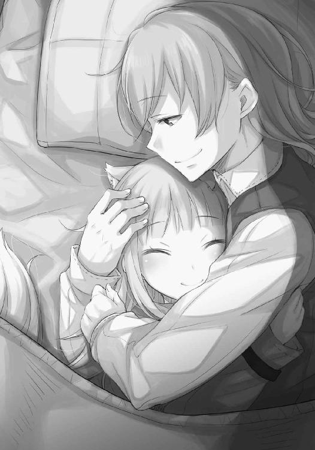
世界の確かなことのひとつに、この寝顔の無邪気さを付け加えてもいいかもしれない。
明日からもまた頑張れると、そう思える寝顔だった。
祈りと思索の日々を繰り返し、ハイランドから渡された原稿の写本の写本が町に出回る頃、ミューリが読んでいた聖典の翻訳も、自分の翻訳に追いついた。ちょっかいを出したくて仕方がないミューリは、早く、早く、などとわざと急かしてきたが、その気持ちは自分も同じだった。ようやく第七章まで翻訳が終わった時には、止めていた息を大きく吸い直した感じがしたほどだ。
聖典の主要な教えは第七章までで、残りは神から言葉を賜る預言者の旅の模様や、弟子たちの言行録になる。もちろん翻訳は暫定的なもので、手直しは山ほど必要だろうが、大意は伝わるはずだ。
そして、なんとか間に合った、という想いがあった。根回しに奔走していたハイランドが、いよいよ教会の大司教と本格的に話し合いを始めたのが、昨日のこと。
話を聞く限り、町の雰囲気は完全にウィンフィール王国派一色だと想像できる。町の人々の尊敬の念と寄付によって成立する町の教会ならば、町の人々の意向は無視できないだろう。
神の基本的な教えが記された第七章までの翻訳は、その後押しになるはずだった。
それに、町の人々がこんなにも神の教えに興味を持ってくれることに胸がいっぱいになる。
世の中は捨てたものじゃない。正しい物は正しく、道は真実へと続いているのだ。
職人たちも帰った日暮れ過ぎ、まだなんとか太陽の残滓が通りを挟んだ向かい側の建物の屋根に感じられる頃のことだった。
「兄様ー、作業終わったー？」
ノックもなしに扉を開けるのはミューリくらいしかいない。
振り向くと、なんだかとても久しぶりにミューリの顔を見た気がした。
「今日くらいに終わるって言ってなかった？」
「たった今」
「よしよし」
まるで親方みたいな言い方に、思わず笑ってしまう。
「あなたも少しは労働について学べましたか？」
「もちろん。私、毎日大活躍だからね。あっちこっちで引っ張りだこだよ。けど、一番びっくりしたのは、世の中にはたくさん仕事があるんだなってことかな」
翻訳を記した羊皮紙のインクの乾き具合を確かめながら、ミューリの楽しそうな様子に心が休まるのを感じた。
「商会は世を回す水車ですからね」
「地味で面倒な仕事も多かったけど」
「それが世の中というものです」
「わかってるけど......でもさ、呆れるくらいの量の木箱にぎっしり詰まった貨幣の枚数とか数えさせられたりもしたんだよ？ それに、あんなにお金がたくさんあるのに、一日中手を真っ黒にして数えて、もらえるのはそのうちのほんのほんのほんのちょっと！」
そういえばミューリがしきりに手の臭いを気にしている夜があった気がする。魚でも触ったのかと思っていたが、貨幣の金物臭さを気にしていたらしい。
「けど、不思議なんだよね」
「不思議？ なにがですか」
「使いっ走りで両替屋さんに走らされたりもしたけど、なんであのお金を使わないんだろって」
「誰かから預かっているお金か、大規模な取引用か、あるいは、輸出用ですね」
「輸出？ それって、他所の町に売るってこと？ でも、町中で小銭がなくてみんな困ってるのに？」
「この町よりもっと必要としているところがあれば、そちらに売ったほうが儲かるということがあるんでしょう。よくあることですよ」
「ふーん。変なの」
その貨幣の輸出を巡り、昔の自分は大きなからくりに気がついたことがあるんですよ、と自慢したくなったが、大人げないかと自重した。
「とにかく、ああいう仕事は嫌。港の仕事みたいなのが一番楽しいな」
「港？」
聞き返すと、ミューリは目をきらきら輝かせていた。
「大きな船に見上げるくらい荷物が積み上げてあってさ、その上に飛び乗って、陸で待ってる人たちに荷物を放り投げるの。港は船で押し合いへし合いしてて波が立って揺れまくるから、大変なんだよ！ 特に今日なんて、すごい細長いトンボみたいな船が日暮れ近くに無理やり入ってきたりしてさ、港のしきたりがわかっちゃいないから、皆で罵ってやった！」
ミューリはふんと鼻を鳴らして胸を張る。すっかりデバウ商会の一員の、いっぱしの小僧気取りだ。素直な娘だし元気もいいので、ああいう場所の空気には染まりやすいのだろう。
トンボみたいな船、というのは風に頼らず巨大な櫓を何十本と並べて腕力で突き進む、快速船のことだろうか。なにか急ぎの荷があったのかもしれない。
それはさておき、喧騒に湧く港で、うずたかく積み上げられた荷物の上に飛び乗り作業する様を、軽く想像してみる。
「それは......結構危ないのでは？」
「ああ、何人か海に落ちてたよ。ずっと落ちなかったのは私だけ」
ミューリは得意満面、そう言った。ニョッヒラでは氷のように冷たい急流の側で、沢から沢に飛び移るような遊びを平気でしていた。もちろん泳ぎも達者だ。
ただ、問題はそこではない。
「私はあなたをロレンスさんとホロさんから預かっているんです。万が一怪我でもしたらどうするんですか」
「あ、知ってる。キズモノにしたら、責任をとらないといけないんだよね？」
「......」
大きくため息をつく。踊り子のヘレンたちから、意味も分からないままに聞きかじっているのだろう。
「ちょっと違いますが......概ねあっています」
「そう？」
ミューリがそんなことを言った直後、ぐう、と牛の鳴き声みたいな音がした。
「それよりお腹すいた。ねえねえ、作業終わったなら外に出られるんでしょ？」
ここ数日は、ずっと部屋で食事をしていた。ミューリは外の賑やかな場所でニョッヒラにはない食事をしたかったらしいが、こちらが梃子でも動かないとわかると、おとなしく商会の者に買ってきてもらったパンやらを部屋で食べていた。
「はいはいわかりました。私も久しぶりに体を動かさないと、このまま石になってしまいそうですしね」
「何度か本当に死んでるんじゃないかと思ったよ」
と、ミューリはけらけら笑ってから、突然なにかに気がついたように顔を上げた。
「あ、兄様！」
「なんですか？」
「外に出るなら、その格好はやめたほうがいい」
言われ、自分の格好を見下ろすが、ニョッヒラから出て来た時のままなにも変わっていない。
それとも、顔になにかついているのだろうかと思って頰を撫でたら、ミューリはぶんぶんと首を横に振る。
「そのいかにも聖職者っぽい外套脱いで」
「ええ？」
「いいから！」
言われるがままに脱ぐと、ミューリは上から下までじろじろ見て、うーんと唸る。
「まだなんかそれっぽいんだけど......」
「ミューリ？ 一体なんですか？」
「兄様、ちょっと頭下げて」
聞き返すのも面倒で、言われたとおりに頭を下げた途端、わしゃわしゃと髪の毛をかきまぜられた。
「......ミューリ」
「こうして、あ、これいいかも」
辺りを見回したミューリは、インク壺の蓋を開け、細い小指の先にちょんとつけると、こちらの頰にざっと線を引く。そして、反対側にもこすりつけてから、距離を開けてこちらを見る。
「まあ、いいかな」
「ミューリ」
声に怒りを混ぜたものの、ミューリは怯みもせず、腰に両手を当てて胸を張る。
「今、聖職者の格好で外を出歩いたら危ないよ」
「......え？」
「力仕事の人たちの気が立ってるからね」
夕焼けに夜の帳が下りつつあり、ミューリの目が薄闇の中で怪しく光る。
「仕事の合間に町の人から話を色々集めてきたんだよ。頑張ったんだから」
「色々って......」
「役割分担だよ！ 兄様は部屋の中で頑張ってるけど、世の中のことが全然わかってないからね。代わりに私が目となり耳となってってやつだよ！ 冒険の基本でしょ？」
ぽかんとしていると、ミューリははっきり不機嫌そうな顔になった。
「まさか本当に暇つぶしで働いてただけだと思ってるの？」
「いや......」
てっきり、そうなのだと思っていた。
「もう！ 兄様はそんなことだから駄目だって言うの！ あの金髪だってなにを企んでるかわからないじゃない！」
ハイランドのような高位の人間が、単純な理由で動くとはもちろん思っていない。
しかし、ミューリはそれ以上に、根本から信じていないようだった。
「やっぱり、兄様は世の中の四分の一しか見てない」
「半分ですらないのですか？」
世の中にいるのは男と女。それでどうやら女のことは全くわかっていないらしいので、世の半分はわかっていない。甘んじてその評価を受け入れるとしても、さらに半分とはどういうことか。
すると、ミューリは困ったような、少し悲しいような顔をして、言った。
「兄様は人の良いところしか見ないからね」
この天真爛漫な少女は、時として深い場所に針を刺す。
「しかし、人は善意の塊じゃない。そうでしょ？」
冷たい真実だった。年の頃が半分のミューリに言われてしまうのだから、もしかしたら自分は四分の一のさらに半分しか見えていないのかもしれない。
茫然としているところに、ミューリの温かい手がこちらの手に重ねられる。
「もっとも、兄様が悪巧みしてるところって想像できないんだけど」
ミューリのことを見下ろすと、悪巧みばかりのミューリはくすぐったそうに笑う。
「だから私が兄様を守ってあげる。兄様が見てない場所を見て、崖から真っ逆さまに落ちないようにしないとね」
なにを生意気な、と思ったが、思考に没頭するあまり、荷馬車に轢かれそうになったところをミューリに助けられた。
どうにも言い返せないのだが、黙ってばかりでは沽券に関わる。
「では、私は狭い視界でなにを見ていればいいんですか？」
ミューリはこちらを斜めに見上げると、呆れたように首を振る。
「目を離せないのが一人いるでしょ？」
明らかに用法を間違えているが、ミューリはあまりにも自信満々だ。
その落差がおかしくて、つい笑ってしまっていた。
「そうですね」
「そうだよ」
ミューリはにっと歯を見せる。そして、こちらの腕に額を当てた。
「だからね......」
「え？」
声がくぐもって聞き取れず、聞き返した時にはもうミューリは腕から離れていた。
「それより、お腹すいた！」
なにか大事なことを言われたような気もしたが、鼻が痒くて擦りつけられただけのような気もする。なんにせよ、目を離せないのは確かなのだ。
「あまり食べすぎてはだめですよ」
「はあい」
気のない返事もいつものもの。
さっさと部屋を出て行くミューリの後を追いかけて、やれやれと笑ったのだった。
夜の町の賑わいは、昼とはまた違うものだった。
それはどちらかというとニョッヒラに近く、いわば酒と肉の宴と言える。
ニョッヒラと違うのは、通りにまではみ出した長椅子に腰かけて騒ぐのが、筋骨隆々のたくましい男たちということだ。港で働く荷揚げ夫や、大きな鋸で木材を加工する職人、あるいは大型船を繫いでおくような、恐ろしく太い綱を編む者かもしれない。潮で焼け、さらに酒で焼けている彼らのひび割れるような笑い声や怒鳴り声には、独特の迫力がある。
そして、ミューリの忠告は正しかったとすぐに理解した。
「大司教は結局どうするつもりなんだ？」
「今朝のお祈りも助司祭しか顔を見せなかった。我らがウィンフィール様に恐れをなしてやがる」
「違う違う、大司教とウィンフィール様はずっと教会内で会議してるんだよ」
誰も彼もが、話題にしているのは教会とウィンフィール王国、あるいはハイランドのことだった。事の趨勢を見守っているふうの者たちもいれば、税に不満を述べてハイランドを救世主と叫ぶ者もいる。
そんな彼らを眺めながらそぞろ歩き、日が暮れても通りに出ていた露店で、鱈の切り身を脂で揚げた物を挟んだパンを買った。ミューリは昼間の仕事で駄賃を得たのか、自分の財布から貨幣を取り出して、豚の腸詰も追加していた。
「確かに、あのままの格好で出てきていたら、おちおち食事もできないでしょうね」
酔っぱらいに絡まれ、お前はどっちの味方かと詰め寄られるのが目に見えている。
「見た目ってのは大事なんだよ？」
わかる？ とばかりに小首を傾げられたので、笑顔でうなずいてからミューリの頭を小突いておいた。
通りの辻に立ち、行き交う人々を眺めながらパンをかじっていると、様々なことがわかる。
彼らがなにに興味を持ち、どんなことを話しているのか。中には、聖典の俗語翻訳版の写しがあると見せびらかす者もいた。畏敬の声が上がり、まるでそれさえあれば教会の悪弊を一蹴できると言わんばかりだった。
酔っているのはもちろんなので、彼らの言動を鵜吞みにするのは危険だ。しかし、彼らの期待の度合いが窺えた。これだけ多くの町の人々が味方しているのであれば、ハイランドの希望は叶うはず。大司教といえど、町の人々の意向は無視できない。その悪弊をきっと改め、教皇はおかしいと共に声を上げてくれることだろう。
「このままなら、正義が為されるかもしれませんね」
アティフの教会が嚆矢となって、次の町、次の町と繫がっていくかもしれない。自分がやっていた作業がその一助になると想像したら、わくわくしていてもたってもいられなくなる。
そんな希望に満ちた目で街角から様子を眺めていたら、すっかり町に溶け込んだ様子で壁にもたれかかり、パンをかじっていたミューリがため息をついた。
「正義......正義？」
「なんでですか？ 皆、ハイランド様の示す正しい方向を向いているでしょう？」
尋ねると、ミューリは無表情にこちらを見て、本物の小僧のように顎をしゃくった。
なんだろうかと視線を向ければ、居酒屋が通り沿いに並べている長机で騒いでいる男たちだった。
「はっはっは！」
「ほーら、ほーら、見ろよ、見ろよ～」
囃し立てるような声と共に、犬の鳴き声も聞こえる。酔っ払いが手に干し肉を持って、野良犬をからかっているのだ。それ自体は珍しくない。市壁の中は動物で溢れている。
「そーら、十分の一の肉だ！ 拾って食え！」
干し肉を放ると、犬が一目散に駆けていって肉を食べる。それを見て男たちは大笑いしている。そして、すぐに犬の様子がおかしいことに気がついた。
司祭服に似せた前掛けをつけさせられているのだった。
「犬の司祭様！ 俺たちの十分の一のパンもどうぞ！」
犬が餌を食べるたびに、男たちはひっくり返らんばかりに大笑いしていた。
ミューリは半笑いだったが、こちらは全く笑えなかった。
あまりにもあからさまな、権威の冒瀆だったからだ。
「昨日くらいからあんな調子なんだよ。お酒飲んで騒ぐ人はニョッヒラで見慣れてるけど、ああいう人たちはそれとは全然違う。ちょっと......怖い」
ミューリはパンを食べ終え、手で服を払っていた。
「今日は昼間に、町の近くの島の教会から、そこの司教様が来たんだけどね。その時も凄かったんだから」
「......どんなふうに？」
犬は餌がもらえて大喜び。尻尾を振れば振るほど、男たちは大笑いだ。
「教会の偉い人が乗っている船って、教会の紋章を染め抜いた帆を掲げる決まりらしいのね。だから、皆すぐにどんな人が船に乗っているかわかった。そうしたら、物凄い割れんばかりの拍手と大歓声」
ミューリを見ると、その顔は暗い。表情と内容がちぐはぐだった。
それとも、ミューリは司教が歓迎されるのを嫌がっているのだろうか？
そう思っていたら、美貌の小僧はため息をつく。
「誰も歓迎なんてしてないんだよ。商会の人が教えてくれたけど、大司教の応援に呼ばれたんだって。町の雰囲気が教会に敵対してるから、あの金髪に対抗するためにって。それを皆わかってるから、わざとらしい拍手と大歓声で迎えたの。船をひっくり返すわけにもいかないしね。船から降りて来た司教さんは、戸惑って顔が青ざめてたよ。まずいところに来ちゃったって」
悪意。
そこにあるのは、権威に対しふつふつと煮立った悪意だ。
「誰も本当は歓迎してないのに、もみくちゃにされるのって怖いと思うな。その司教さんはいい人そうだったけど、逃げるように港から出て行ったよ」
全員が全員、特権の上に胡坐を搔いているわけではないだろう。この町の大司教でさえ、そうだ。聖務には熱心だというのだから、本当に悪い人なのではない。
「ここで何日か働いてみて思ったけど、みんな細かいことなんてどうでもいいんだよ。なんだろう、なんていうか、熱くなれる対象があればなんだっていいって感じかな。誰も彼もが、俺たちのなけなしの金を奪いやがってって怒ってるんだけど、十分の一税ってそんなに高いの？ って聞いたら、俺たちは取られたことねえけどなあって、楽しそうに笑ってた」
確かに、一日荷物を運んでいくらの支払いをされる者たちから、いちいち税を集めているはずがない。そういうのは大きな商会や、関所、あるいは土地収入から取られるのだろう。もちろん、巡り巡って自分たちの支払いに影響している、と考えることもできるかもしれないが、それを実感するのは難しいはずだ。
「ねえ、兄様。兄様がどんなことを信じているかわかってるつもりだし、翻訳してる姿は本当に夢中で楽しそうだったから、ずっと黙ってたけどさ」
と、こちらを見上げた目は、見たことがないくらい真剣だった。
「兄様が翻訳した紙の写しも出回ってたけど、なんかそれがあれば、教会のどんな悪口を言ってもいいみたいなことになってるんだよ」
「翻訳版は、そんなものでは──」
「兄様がどう思うか、そこになにが書かれているかは、あんまり関係ないみたい」
神の教えなど細かいことはどうでもいい。こちらが日課として聖典の暗誦をしているのを見つければ、これ幸いと勝手に頭を垂れて、御加護があれば儲けもの、と考える商人たちだっていた。それが普通なのだ。
「だからね、本当に気をつけたほうがいいよ。あの金髪が、こうなるとわかっててやってるのかどうかも」
「それは......」
「あいつ、いいことしか言わないんだもの」
世界の半分の、もう半分。
ミューリの目を見つめ返すが、言葉は返せなかった。視線を逸らすと、からかわれている犬が目に入る。自分が無邪気すぎるのだろうか？ だが、信仰とは本来無邪気なものだ。無邪気が悪いとするのなら、一体どうすれば良いのだろう？
ハイランドが聖人のような動機で動いているとはさすがに思わない。けれど、向かう先には正しさが待っているような気もする。
確かなことがなにかわからないこの感覚。
無性に、聖典が読みたかった。
「ミューリ」
「ん？」
からかわれる犬と、大笑いする人々を見ながら、言った。
「商館に戻りませんか」
自分はああいう悪意のために聖典を翻訳していたわけではない。教会の権威を虚仮にしたいわけではない。おかしいことをおかしいと述べて、単に正してもらいたいだけなのだ。
もちろん、彼らのような者がすべてではないだろうし、ハイランドがけしかけているとも思えない。それでも、自分は世界の四分の一しか見ていなかったのだと気づかされた。
「いいよ」
もっと買い食いしたい、と騒ぐかと思ったが、ミューリはあっさり返事をした。
そして、壁から背を離し、ととっと前に進み出ると、くるりと振り向いた。
「手も繫いであげようか？」
理想のために頑張っていたら、町の人々の予想もしなかった悪意を目の当たりにした。落ち込んでいるのが顔に出ていたのだろう。からかいながらも、気を使ってくれる。
これでは、どちらが年上かわかったものではない。
「......はぐれたら、かないませんからね」
「兄様がね！」
ミューリに手を引かれながら、来た道を戻る。
少しだけ足が速いのは、猥雑で暴力的な町の雰囲気から、少しでも早く引っ張り出そうとしてくれているのだろう。騒がしくて我儘で、時折とんでもないことを言い出して肝をつぶされるが、基本的には良い娘なのだ。
ならば、と思う。
ミューリがとても良い娘なら、ほかにも同じくらい良い人々がいたっておかしくない。
世の中は疑い出せばきりがないことくらいわかっているし、悪い人がいることだってもちろん理解している。そもそも、自分がロレンスと出会ったのは、詐欺師に思いきり騙されたからだった。
だから、ただ憂さを晴らしたいがために教会の権威を虚仮にする人々がいる一方、多くの人々は聖典の翻訳版を読み、しっかりと教会との正しさと過ちを理解してくれるはずだ。少なくとも、自分はそう信じたかった。
ミューリと共に商館に戻り、この時間でもまだ残務に追われている者たちの隙間を縫って、三階の部屋に向かった。
「なんでもいいけど、今日くらいはゆっくり寝ること！ わかった？」
「わかりましたわかりました」
がうがうと吠えるミューリに笑い掛けながら、扉を開けた。するとたちまちインクの香りが溢れ出し、外の喧騒でささくれ立った心が落ち着くような気がした。
インクの香りは、知と静謐の香りだった。
「ただ、寝る前に少し顔を洗いたいですね。それと、ミューリ、あなたもすこし埃臭いので、お湯をもらって──」
と、話しながら蠟燭に火をつけて、ようやく戸口のところでミューリが立ち止ったままなことに気がついた。
「ミューリ？」
ミューリはこちらの問いかけに反応せず、ぶるりと身震いしたかと思うと、耳と尻尾を露わにした。そして、部屋に入ると扉を閉じ、鼻を鳴らす。
なにかの冗談だろうかと思っていると、ミューリは見えない糸を手繰り寄せるように一直線に歩き出し、机の前に立った。
「ミューリ」
疑問形ではなく、その名を呼んだ。机の上には、翻訳されたばかりの原稿がきちんと揃えて積まれている。部屋を出る前と、おそらく、なにも変わっていない。
「私たちがいない間、誰かがここにいたよ。何人かで」
疑わなかったのは、ミューリの耳と尻尾の毛がぴりぴりと逆立っていたからだ。
それに、部屋には特に鍵もついてない。誰もが自由に出入りできる。
「まさか、盗まれた？」
羊皮紙の束をめくり、蠟燭で照らしてざっと確認する。しかし、枚数はあっているし、筆跡も自分のものだ。
「塗りつぶされているわけでもない......。誰かが、興味本位で読みに来ただけでは？」
商会には熱心な信徒もいた。そろそろ翻訳が終わると噂を聞きつけてやってきたが不在で、我慢できずに読んでいたのかもしれない。
そう思っていると、机の周りをなおも中腰になって嗅ぎ回っていたミューリは、体を起こして鼻をこすった。
「さあね。私にわかるのは、誰かがここにいたということだけ。母様みたいに狼になれたら、誰がいたのかもわかるんだけど」
ミューリは悔しそうに言って、一回くしゃみをしていた。
ミューリは耳と尻尾を自在に出し入れできる一方、母親のホロのように巨大な狼になることはできない。半分人の血が流れているからだろう。
「とにかく、兄様はもう少し気をつけてよ？」
「わかりました。ですが、あまり人を疑いすぎるのもどうかと思います」
そう主張すると、腕組みをしたミューリは尻尾をゆっくり大きく揺らし、不満げにこちらを見ていた。
そして、大きくため息をつくと降参するように肩をすくめていた。
「では、お湯をもらってきますが......念のため、短剣を床に突き立てて、柄で扉を押さえてつっかえ棒にしておいてください」
「そんなことするくらいなら、私も行くよ」
怒ったように言われ、それもそうかと思い直す。
蠟燭を手持ちの燭台に載せ替え、部屋を出ようとした時だった。
「あ、ちょうど三階に誰か来たよ。誰だろ、この足音はルイスかな」
耳をひくひく動かして、ミューリはそんなことを言った。働く中で仲良くなった小僧の名前かもしれない。ならばついでに湯を頼むかと思っていたら、ミューリがふっと耳と尻尾を隠す。扉がノックされたのは、その数瞬後だ。
「お休み中のところ失礼します」
きちんと挨拶もされた。不在の合間に部屋に入り込み、なにがしかを行っていた者ではないだろう。
「はい」
返事をして扉を開けると、ミューリより二歳か三歳は年下の少年が立っていた。
「失礼します。ハイランド様がお呼びです」
その一言で、部屋にいたのはハイランドだったのではと思い当たる。彼なら依頼主として、成果物を勝手に読む権利があるし、平民の部屋に無断で入ることになんらの呵責もないだろう。
「わかりました。すぐに伺います」
そう返事をすると、小僧は恭しく頭を垂れて、ちらりと視線を部屋の中に向けたのがわかった。澄まし顔を一転笑顔にして、小さく手も振っていた。
もちろん、気づかない振りをするくらいの優しさは持ち合わせている。
扉を閉じると、職人たちの使う机に寄りかかったミューリが、にこにこしていた。
「ルイス君でしたか？」
「うん。港で一緒に働いて、二回海に落ちてた」
ミューリの笑みは、親しみのそれなのか、海に落ちた間抜けさを笑うものなのか、いまいち判別がつかない。多分、両方だろう。
「じゃあ、ちょっとハイランド様のところに行ってきますが」
言葉を切ったのは、わざとだ。
「もちろん私も行く」
「お菓子はないかもしれませんよ？」
「あんまり餌付けされたら目が曇るから、ちょうどいいよ」
実際、ハイランドが菓子をミューリに与えるのは、警戒心丸出しの山の獣を手なずける楽しみに近いのかもしれない。
「失礼なことはしないように」
「はあい、と」
机から離れ、先に部屋から出ていく。
自分も後に続こうとして、ふと部屋の中を振り向いた。
翻訳の原稿はあのままにしておいて大丈夫だろうか。
「兄様？」
廊下から声をかけられ、一瞬の迷いの後、持っていくことにした。
なんにせよ、第七章までの翻訳の報告をする必要がある。
「お待たせしました」
「うん。それはそうと、コケモモ、林檎と来たから、つぎは梨かな？」
お菓子の予想をしているミューリの食い意地に笑い、歩き出す。
ただ、長い廊下の向こう側、手元の灯りの届かない先に、深い闇を見た。
気をつけて損はない。
そう思い直し、ハイランドの許に向かったのだった。
夜の帳がすっかり下りてからの呼び出し。しかも、ハイランドは昨日から大司教と話し合いを始めている。
呼び出される理由はたくさんあるだろう。
「ああ、来たか」
部屋にとおされると、ハイランドは目も覚めるような白い布がかけられたテーブルの前に座っていた。そこには料理が並べられていたが、どれも熱を失って久しく見える。
「すみません。お食事中でしたか」
「いや」
ハイランドは苦笑し、ナイフを軽く弄ぶ。
「食欲がなくてね」
結局ナイフを放り出し、椅子の背もたれに体を預けていた。
「交渉で張りつめてらっしゃるのでしょう。あまり御無理をなさらず」
「張りつめている......のとは少し違うかもしれない。不愉快、そして、落胆だな」
落胆ということは、交渉がうまくいっていないのだろうか。
「あれほど町の人々の支持があってもなお、大司教様は頑ななのですか？」
すると、ハイランドは少し笑った。
「町の人々の支持、か」
隣にいたミューリの機嫌が悪くなるのが気配でわかった。ハイランドの笑みは、どこか嘲るようなものだった。しかし、それは自らに向けられたものらしい。
「私もそう思っていた。ところが、騒いでいるのは下層の者たちばかりだ」
荷揚げ夫、漁師、あるいは、日雇いの者。
「しかも、彼らのような者は暴力的に騒ぐことしか知らない。今日、大司教殿が応援として配下の司教を呼んだらしいが、その司教は教会に着くなり、へたり込んでいたよ。まるで戦場をかいくぐってきたかのように怯えていた」
ミューリから聞いた、全く歓迎されていない場所で、拍手と大歓声を向けられた司教だろう。
「その結果、私はどう見られていると思う」
冷めきった食事の前で疲れたように座るハイランドは、悲しげに言った。
「内乱を扇動し、この町を王国の版図に加えようとしているのではないかと疑われている」
「えっ」
それはウィンフィール王国と教皇の争いとはまた全く別の話になる。
「町では聖典の翻訳版を掲げ、振り回している者たちがいるだろう？ そのせいで、聖典の翻訳というのは噓で、内乱の蜂起を呼びかける文書なのではないか、と大司教に痛罵されたよ」
「そんな」
「もちろん、読めばわかる。大司教殿にも献上してきた。だが、町の権威の象徴が我々を反乱の先導者ではないかと見做しているせいで、町の主要な者たちは尻込みしてしまっている。万が一その見立てが本当だった場合、私に与することは逆賊に与することになるからね」
自虐的に話すハイランドは、薄く笑ってはいたが苦しそうだった。
それに、そもそもこのデバウ商会の商館を采配するステファンの慇懃さも、敬意ではなく敬遠に近いと言っていた。彼らはこの町で商売をする者であり、長い物には巻かれたほうが得な立場なのだから。
そう考えると、自分たちが留守の間に翻訳の原稿を読みにきたのが誰なのか、わかった気がした。デバウ商会の面々であり、自分があの部屋で反乱の蜂起を呼びかける文書をしたためていないかと、確認しに来たのだろう。
ハイランドは大きく息を吸い、長く、ゆっくりと吐き出した。
「国では、教皇のせいで人生の大事な節目に神の御加護を得られない民が溢れている。我々は神を信じないのではない。ましてやこれを機に他国の領土を切り取ろうなどと思っているのではない。神の御加護と金を同じ天秤に乗せている、あの教皇のことが気に食わないのだ。なぜその単純な理屈がわからないのか......私にはわからない」
拳を握りしめ、テーブルの上で震えさせていた。そのやるせなさがわかるため、自分の拳にまで力がこもってしまう。
しかし、やがてふっと力を抜くと、恥ずかしそうな笑みを見せた。
「あるいは、こうやって怒らせるためかもしれない。怒ったら負けだ。交渉事では特にな」
ハイランドは酒を手に取り、軽く口に含んでから、言った。
「大司教との交渉もそうだ。向こうはずらりと並べられるだけ人を並べて、全員で好き勝手な言葉の礫を投げてきたよ。あれでは黒い物を黒と述べるのも難しい」
武力で排除するわけにもいかないから、数の暴力というわけだ。
「そこで、コル。君に頼みがある」
「私に？」
「少しでも頭数を増やしたい。むこうが明日も同じ戦術を取るかはわからないが、交渉についてきてくれないか」
予想もしていなかったことに口を開こうとしたら、笑顔で制された。
「神学的な助言は仰ぐかもしれないが、なにか積極的に発言しろとは言わない。その場にいて、堂々としていてくれればいい。君は名だたる神学者たちと交遊する、若き優秀な学者だと吹聴してある。厳めしい顔で立っていてくれれば、それだけで効果的なはずだ。大司教殿が教理問答を吹っ掛けるようなことはまずない。彼らは神の教えに通じて司教職を手に入れたのではなく、人の世の渡り方に通じてその椅子を手に入れたのだからね」
それはハイランドの偏見というより、実際に話してみた感想なのだろう。
「そして、聖典などきちんと読んだことのない大司教でも、ここは港町だ。ニョッヒラの行き帰りに、高名な聖職者が立ち寄ることもあるはずだから、顔や名前くらいは知っているだろう。あの誰それ、と名を出して特徴を伝えて、いかにも親交があるように話せば、司教たちは君を高名な神学者と同列にみなすだろう」
まるで畑の若芽を狙う小鳥や烏を追い払う案山子のようだが、役に立てるならなんだっていい。
「本当はこんな無様な策を使いたくはない。しかし、真実を述べれば相手が己の愚を悟るなんていう素晴らしい世界は、本の中にしかないようだ」
理想と現実の狭間で、ハイランドは摩耗しているようだった。
だが、本と言われ、自分の手にはその理想の塊のような本があることを思い出した。
「ところで、翻訳についてなのですが、第七章まで暫定的に」
「おお！」
ハイランドの顔がぱっと輝き、こちらまで嬉しくなる。
「手直しは当然必要でしょうが、大意は伝わるかと」
「いや、よく頑張ってくれた」
羊皮紙を差し出すと、ハイランドは慈しむように目を細めて文字を追いかけていく。
「うむ......ああ、いい文章だ」
当然お世辞だろうが、多少の誇らしさは報酬として許されるだろう。
「すべてを読む時間がないのが惜しい。これはどこまで複写を？」
「第七章の中盤まで複写は追いついています。残りの部分を今日書き上げたので、朝までには複写できるかと。それを職人たちに渡せば、私たちがこの部分を教会に持っていっても、写本をどんどん作れます」
「察しが良くて助かる。そうして欲しい」
「畏まりました」
ハイランドから羊皮紙を受け取ると、着実な前進と前途に希望が生まれてくる。
「これは歴史的な第一歩だ。人々が聖典を読み、なにが正しいのかに気がつくという第一歩になる。頼むぞ、コル」
ハイランドの激励を受けて、部屋をあとにしたのだった。
結局、その日の夜も蠟燭を灯すことになったのだが、ミューリは怒らなかった。部屋から追い出すこともせず、せっせと複写をする横で、翻訳した文章をじっと読んでいた。いよいよミューリも神の教えに目覚めてくれたか、と思うのは、きっと儚い希望だろう。放ったらかしにされていたことや、あるいはハイランドのことが気に食わないので、またぞろ仕事を言い渡されていることが不満なのかもしれない。
途中、ふとこちらの肩に頭を乗せてきたのも、その表れだろう。
銀色の髪の毛に指を沈めるように撫でてやると、耳と尻尾が少し音を立てた。
普段は騒がしいミューリは、結局最後まで一言もしゃべらずに翻訳を読み終えたらしい。
こちらの肩から顔を起こすと、大きく伸びをして、あくびを付け足してからこちらの手元を確認する。まだ先は長いとわかったのか、特になにも言わずに椅子から立ち上がり、さっさとベッドに向かってしまう。
相変わらず自由気ままだと思ったが、やはりその振る舞いはどこか怒っているようにも感じられた。明日以降時間を見つけて相手をしてやらないと。
そんなことを思い、ついつい世話を焼いてしまう自分に呆れたが、もう染みついた習慣みたいなもの。
ミューリと離れることになったら、きっと湯屋の仕事をしなくなったこと以上に、胸にぽっかり穴が開くだろうなと、そんなことを思ったのだった。
翻訳の残りの複写は朝まではかからず、町が完全に静まりきる夜中頃に終わった。
ハイランドのお供をして、途中であくびをしても困ると思い、ミューリの尻尾の温かさの御相伴にあずかりながら眠ったが、夜明けと共に目覚めてしまった。日が昇りきってからようやく目を覚ましたミューリはその話に呆れかえっていたが、興奮しているのだろう、と自分でもわかる。
筆写職人たちもぼちぼちとやってきて、残りの翻訳部分の写しを渡しておく。その複写ができ次第、翻訳が欲しいと言っている人々に渡すよう指示を出しておいた。翻訳の原本は、ハイランドと共に教会に携えていく。
「それで、あなたはなぜその格好を？」
ミューリはニョッヒラから着てきた服を着て、ケープを肩に巻いていた。たった数日の事なのに、女の子らしい格好をすると前よりもやや大人びて見えた。
町で働いたせいかもしれない。
「なぜって、この商会の小僧の格好で教会に行ったら、商会に迷惑がかかるかもしれないでしょ？ 昨日話してたじゃない」
デバウ商会としてはハイランドを応援したくとも、現場の商館を預かるステファンとしては、教会と真っ向から対立したくはない。しかも人々の粗野な騒ぎから、内乱による領土取りなのではないかと疑われ出している。
ミューリの判断は正しいと言えば正しいのだが、前提には疑問符がつく。
「おとなしく部屋で待っている、という選択肢は？」
「いーやっ。聖典も読んじゃったし。これ以上働いても新しい情報は手に入らなそうだし」
「私は世界の四分の一しか見ていないし？」
そう言うと、ミューリはきょとんとしてから、くすぐったそうに笑う。
「そうそう」
「まったく......。ですが、ハイランド様がなんと言うかわかりませんよ」
そこにはある種の希望が込められていたのだが、ハイランドの部屋に赴けばあっさりしたものだ。
「その格好はまずかろうが、コルセットをやめて小僧のズボンを穿いて、腰帯を厚めに巻いておけば、うむ。宮廷の行政官見習いに見えよう。ついでに羽ペンをさした帽子でも用意しよう。顔立ちが整っているし堂々としているからな。どんな格好をしてもそれなりに見える」
半分くらいは面白がっているとしか思えなかったが、実際に言われたとおりの服を着て、今度は髪の毛をうなじで雑にくくっただけのミューリは、確かに貴族の共を務めていてもおかしくない気がした。
「格好は大事」
「そのとおり」
ハイランドの同意を得て、ミューリはふんと得意げに鼻を鳴らしていた。
「それでは参るとしよう。朝課の祈りも終わって、人々は教会から工房や店に仕事に出ている頃だ」
ハイランドやお付きの者たちは馬車を仕立てていたが、自分やミューリは歩いてその後を追いかけた。元々道が混雑していて、下手をすれば歩くほうが早い。それに道を歩いたほうが町の空気をよく実感できた。
昨晩のようなざらついた光景はどこにも見られず、アティフの町は太陽に照らされて輝いていた。その光景を見ると、あれは夜の闇が見せた悪い夢だと、少し信じたくなった。
馬車を教会の前に乗りつけるのは、公式の行事でもなければあまり行儀の良いことではない。
裏手に回ると、腕まくりをした若い助司祭たちが手を真っ赤にしながら水仕事をしていた。
古びた布で、ごしごしと教会の壁を磨いている。
「おはよう。大司教殿は？」
馬車から降りたハイランドが声をかけると、ミューリより少し年上といったまだろくに髭も生えていない助司祭の一人が、手を拭ってから寡黙な様子で裏口の扉を開いた。鋼鉄製の武骨な門で、いざという時には敵の侵入を阻むものだ。
「失礼するよ」
先頭のハイランドが通り過ぎる時は目線を下げていたが、お供の者や、自分が通り過ぎる時には露骨に睨みつけていた。薄暗い教会内に入り、裏門が重そうな音を立てて閉じられると、ミューリがこそっと話しかけてくる。
「全く歓迎されてないね」
「朝から余計な仕事をさせられて苛立っているんだろう」
答えたのはハイランドだ。
「ですが、掃除は立派な修行では？」
「なにで汚れるかによるな」
その返答に小首を傾げていると、ミューリが耳打ちしてきた。
「腐った玉子だよ」
思わずその顔を見返してしまう。教会の裏手の道は店などもなく、夜になれば人通りが少なくなる。不満を持つ者たちが腐った玉子を手にやってくる様が容易に想像できた。教会の人間から見れば彼らを煽っているのはハイランドだから、歓迎されるはずもなかった。
一行は大きな教会の中を颯爽と歩いていく。それは不遜と図々しさというよりも、そうしないと追い出されるか、丁寧に案内を乞うていたらいつまで経ってもどこかの部屋で待たされるからだろう。
教会は外から見るよりも大きく感じるし、総石造りの建物はやはり荘厳だ。壁には圧倒されるほど大きな緋色の壁掛けなどが吊るされていたり、天使の形に彫られた石造りの燭台が等間隔に並んでいたりと、贅の限りも尽くしてある。夜の灯りも、獣脂ではなく蜜蠟だろう。
やがて執務室の前にたどり着き、ハイランドは臆することなく両開きの扉を開け放つ。
そして、前に踏み出して、言った。
「おはようございます。今日もこうしてお目見えできることを神に感謝いたします」
執務室は広く、天井は高かった。部屋は細長く、二十人は座ることができそうな、初めて見るほどに長い長机がでんと置かれている。壁には凝った意匠の施された木の棚や長持が並び、その上方には、漆喰塗りの壁にデバウ商会で見かけた絵よりも大きな天使の絵が、十二人分描かれていた。大商会の応接室だって、こんなに豪華ではない。
長机には刺繡が目立つ紫色の僧服を着た司教たちが七人ほど座り、さらに書記が二人羊皮紙を広げている。長机の頂点、壁にかけられた大きな教会の紋章の下には、黄金の刺繡が施された僧服を着た大司教がいた。
彼らの後ろには、それぞれ侍従の若者が二人から三人控えている。教会の雑用をしながら神の教えを学ぶ助司祭か、教会の運営を担う聖堂参事会に雇われている、俗人の秘書だろう。確かにこれで一斉にがなり立てられたら、どんな正論も圧殺されてしまう。
「我らが神に栄光があらんことを」
大司教は応唱したが、その顔は苦りきっていた。
「随分と連れてきたものですな」
早速厭味ったらしい一言目が発されたが、文官が引いた椅子に腰かけながら、ハイランドはたおやかに微笑んでいる。
「人が多ければ、この広い執務室も暖かくなるのではと」
大司教は渋面のまま、鼻から大きく息を吐く。
「ところで、今日はようやく聖典の翻訳が第七章まで進みました。その原稿をお渡しできればと思い」
ハイランドが合図をすると、控えていた文官が羊皮紙を手に司教たちの陣地へと向かう。
居並ぶ司教たちは誰一人友好的な顔をしていないが、控えている侍従は丁寧に羊皮紙を受け取り、大司教に献上した。
「それが反乱の文書でないことは、私が口で言うよりも読んでいただければ信じていただけることかと。もちろん、神は争いを好まれず、融和を説かれております」
目の前に置かれた羊皮紙を一枚めくり、大司教は顔を上げる。
「読ませてもらっても？」
「もちろん」
ハイランドの声が少し弾んでいるように聞こえた。自分も少し意外だった。てっきり、受け取るだけで見もしないかと思ったからだ。大司教は早速一枚目を読み、丁寧に文字を追いかけると、二枚目に取り掛かる。とても慎重に、黙読していた。
その間、広い執務室には三十人からがいるのに、誰も口を開こうとしない。時折、誰かの身じろぎや咳払いが空しく響き渡る。大司教はじっと羊皮紙に目を落とし、顔も上げない。
なにかおかしい、と思ったのは、二枚目に異様に時間がかかってからだった。
「どうされましたか」
ハイランドが口を開くと、大司教は二枚目をめくり、三枚目に進む。まるで偶然、ようやく読み終わったかのように。それからまた、大司教は三枚目に異様に時間をかけていた。
ハイランドを見れば、その横顔は怒りに強張っていた。
罠にはめられたのだ、とようやく気がついた。
こちらは聖典の翻訳が内乱蜂起をけしかける文書なのではないかと疑われ、その潔白を証明するために大司教に読んでもらっている。ならば最後まで読んでもらわなければならないが、大司教からしたら読み終える必要はどこにもない。話し合いができなくて困るのは、ハイランドのほうなのだから。
催促し早く読むようにと言っても無駄だろうし、遅いと怒り出せば尚更相手の思うつぼ。
もう付き合いきれん、と席を立ってくれたら万々歳。これは交渉ではなく、大司教たちはそもそも聞く耳を持っていないのだから。神の教えに通じているからではなく、人の世の渡り方に通じているからその椅子に座っている、と言ったハイランドの言葉はあまりにも正しかった。
単に静かだった執務室に、重苦しい空気が満ち満ちる。ハイランドは貴族の威厳を崩さず、長机に片腕を乗せ、じっと大司教を見つめている。それはまるで、一瞬でも目を逸らせば逃げてしまう野鼠を見つめるかのようだ。
しかし、この膠着した状態を、一体どうするつもりなのか。大司教があの原稿を読み終えるとはとても思えない。催促しても無駄。席を立っても無駄。完全に囚われていた。
レノスでの失敗、という話がふと蘇る。もしかしたら、ハイランドは同じようにレノスの大司教にしてやられたのではなかろうか。神学の議論ならば自分と十分に渡り合えるほどだが、自分と同じように、底意地の悪い世間には慣れていないのではないか。
そう思ったが、さりとて自分もまたなにもできないことが情けなく、歯がゆかった。
それからどれくらいの時間が経った頃か、執務室の外から鐘の音が聞こえてくる。昼を告げる、教会の鐘楼の鐘が鳴らされたのだろう。それで気がついたのは、執務室の内部がどれほど膠着していようと、外では人々が普通に生活し、時間が流れている、ということだ。ハイランドはその流れに賭けているのではなかろうか、と思った。
夜が更ければ、再びあの猥雑で暴力的な時間がやってくる。酒に酔った男たちが、犬に司祭服を着せて権威を冒瀆し、鶏のもも肉と聖典の翻訳版の切れ端を手にした理屈っぽい商人が、肉を嚙みながら教会への暴言を吐き散らす。
それでなくても、デバウ商会の商館では、職人たちが翻訳版を筆写して配っている。それを読めば、良識ある者ならば教会の横暴に正当性などないとすぐにわかる。そうなれば、人々は教会の裏門にではなく、表門に卵を投げつけるかもしれない。人々が教会の悪弊を正そうと立ち上がった時、ハイランドは満を持して交渉のための剣を抜くだろう。
そして、そんなふうに考えたら、大司教の側の目論見も見えてきた。まったく逆の賭けに出ているのかもしれない。
ミューリが商会の下働きをするついでに集めてきた話では、騒いでいる下層の者たちは単に騒げるから騒いでいる、ということだった。信仰の正しさもなにもなく、十分の一税の直接の重さに喘いでいるわけですらない。騒ぐのは一過性の流行にすぎず、このまま何事もなければ、彼らの関心は別のところに行ってしまうことは容易に予測できた。
季節は冬から春に移り変わろうとしていて、一年の中で最も忙しい季節に差し掛かる。デバウ商会に陳情にやってきていた人々の数を見ても明らかだ。これからは春の祭りや教会の儀式なども目白押しだから、宗教的権威としてそれらを取り仕切る大司教は、ハイランドの交渉を後回しにする口実には事欠かない。
聖務とは塩気のようなものであり、季節の移り変わり、人生の節目など、日々の生活に教会の存在は欠かせなかった。ハイランドと交渉しているがために聖務に支障が出るとなれば、ハイランドに悪感情を持つ者も出てくるだろう。そもそも、ウィンフィール王国の民衆が苦しんでいるのは、その聖務を全面的に停止されているからだった。
人々が怒りの声を上げるのが先か、それとも目の前の生活へと関心を戻すのが先か。
息が詰まりそうな緊張の中、静かに、思う。これは、世界をどういうふうに信じるかの戦いだ。人々は、正しいものは正しいとみなしてくれるし、そのために立ち上がってくれる。少なくとも自分は、またハイランドも、そう信じているはずだった。
神よ、と祈った。
だが、その神の僕であるはずの大司教たちが間違っていることを祈るのは、果たして正しいことなのかどうか。天と地が逆になったかのような構図に、眩暈を覚えてしまう。船頭が言ったように、川はまっすぐには流れていないのだ。
これが世の中だと言えばそうなのだろうが、単純な生活のニョッヒラが遠くに感じられた。
そうして、体を少しずつ削り取られるかのような時間が、痛みを覚えるほどゆっくりと過ぎていった。ハイランドも大司教も口を開かないので、昼食を、と提案する者もいない。さらに時間が経ち、執務室の高い天井付近にある明り取り窓から差し込む日差しの向きが、執務室に入ってきた時とは逆になった。
足腰の痛みも辛く、それはその場にいる全員が感じていることだろう。立っている者のみならず、座っている者も同様だ。ひたすら椅子に座っているというのは、それはそれで体に大変な負担をかける。歳を重ねている司教たちは、目に見えて消耗していた。対して、ハイランドの側は自分も含めて若い人々が多い。司教の後ろに控える侍従たちこそ若かったが、根競べではこちらに分があるように思われた。
ひとつ心配なのはミューリのことだったが、山を駆けまわる体力があるだけに、なんとか耐えているようだった。ただ、明日からは来ないだろうなと思うと、少し笑いそうになった。
ついに明り取り窓から入る日差しが傾き、色も濃くなってきた頃のこと。きっと人々の頭には、もう少しで今日が終わる、というその思いしかなかっただろうところに、大きな物音が響いた。高齢の司教が、長机に倒れ込んで突っ伏していた。
「司教様！」
侍従たちが駆け寄り、司教を運んでいく。執務室の扉が開き、川の流れを堰き止めていた堤が崩れるように、緊張が流れ出ていった。
その流れを見た大司教が、羊皮紙から顔を上げ、言った。
「これでは会議ができませんな。この翻訳も読み終わってないことですし、また明日に」
その言葉にほっとしたのは、司教たちだけではない。明らかにハイランドのお供の者たちも、自分を含めて詰めていた息を吐いた。
その瞬間だ。
「いえ、夜は長いですから、読み終わるのを待ちましょう」
ハイランドは毅然と言い放つ。大司教が顔を強張らせ、言葉に詰まる。仲間の司教たちは、思わずといった様子で、大司教にすがるような目を向ける。
その様子に、感服した。ハイランドは決して世間知らずの貴族様ではない。
相手の緊張が緩むこの瞬間を、ひたすらに待っていたのだ。
望むのなら地獄まで相手をしてみせよう、とばかりに大司教を見つめるハイランドは、一歩も引く様子を見せていない。大司教もそれがわかるために、二の句を継げないでいる。
しかし、配下の司教たちは体力的にも精神的にも限界に見えた。なによりも、やれやれこれで今日は終わりだ、と緊張を一度解いてしまっていた。もう一度気を引き締め直すのは至難の業だ。明らかに、形勢が逆転していた。
もしかしたら、大司教はハイランドのことを見くびっていたのかもしれない。所詮、お屋敷育ちの軟弱な貴族様だろうと。ともすれば女性にも見えるような線の細いハイランドには、確かに泥臭さのようなものが一切ない。だが、そこには狩人にも通じる忍耐強さと、相手の裏を搔く商人のような、ある種の意地の悪さがあった。
「う......ぐ......」
大司教は脂汗を浮かべて唸るが、こちらもまた、権力の座に就くにふさわしい人物だったのかもしれない。
「そう......ですな。中途半端は、良くない」
嚙みつくような目つきでハイランドのことを睨みながら、大司教は追い縋った。死なば諸共、という時の顔はこういうものなのだろう。司教たちは絶望に満ちた顔つきになるが、大司教の言うことには逆らえない。
そして、その様子をよく見てから、ハイランドは言った。
「ですが、軽く食事くらいはいかがでしょうか」
それでは相手の気力を回復させてしまう、と一瞬思ったが、司教たちの顔を見て気がつく。
彼らの心情が明らかにハイランドに傾いている。それこそ、救い主を見るかのように。
してやられたことに気がついた大司教は、苦しげにうなずいた。
「くっ......では、パンと、飲み物を。町にはまだ露店が出ているでしょうから」
侍従たちは頭を下げ、各々執務室から出ていく。ハイランドはこちらを振り向き、涼やかに笑いながら言った。
「お前たちも手伝ってきなさい」
それが使役の意味ではなく、体を動かして休憩をしてこい、ということなのは明らかだ。
ただ、体力勝負の護衛たちは「恐れながら」と離れるのを拒んだ。主が体に鞭打って耐えるのならば、我らもまた殉ずるのみ、ということだろう。
「では、残りの者で食事の用意を」
朝からずっと同じ場所に立っていたので、膝と腰が自分の物ではないような気がする。
ミューリもよたよたとしていて、その細い身体を手で支えた。
「大丈夫ですか？」
「......お湯に浸かりたい」
「私もです」
軽口に笑顔で答えた。執務室から外に出ると、誰も彼もが膝を曲げて体を伸ばしていた。その共通の仕草には敵も味方も関係ない。侍従やハイランドのお供たちの間には、少し気まずそうにしつつも、なんとなく共感のようなものがあった。
とはいえ肩を並べて市場に行くのは憚られたようで、侍従たちは裏口から、ハイランドのお供たちは表側の出入り口から外に調達しに行った。自分たちも自分の分くらいは買ってこないとならないが、ミューリが足を痛そうにしていたので、途中の廊下で隅に寄って休憩することにした。
「すごかったね」
通路の脇に積み上げられている木箱に座ったミューリが、笑いながら言った。
「やっぱりあの金髪、性格悪いんだよ」
思わず辺りを見回すが、誰もいない。教会内を忙しそうに立ち働く助司祭たちも夕方の祈りのために聖堂のほうに出払っているのかもしれない。それに、ミューリの言い方にはある種の敬意が感じられた。
なかなかやるじゃないか、と言わんばかりだ。
「兄様があそこに座ってたら、あの爺が羊皮紙の三枚目に行く前に、降参してたろうね」
ましてや、配下の司教たちの心情をこちらに傾けさせることなど、到底無理だっただろう。
「でも、あいつらどうするつもりなんだろ」
気になったのは、そのはすっぱな口の悪さではなく、あいつら、と言ったところだった。
「あいつら？」
「爺と金髪の両方。どっちも勝算があるはずだから」
「それは私も考えてみましたが」
ハイランドは民衆が怒り出すのを、大司教は民衆がこの争いに興味を失くすのをそれぞれ待っているのではないか。
そう告げたら、ミューリは思いきり呆れていた。
「兄様はそんなだから駄目なんだよ」
「だ、だめって、なぜですか」
ミューリは木箱に片膝を立て、そこに顎を乗せる。まるで、餓鬼大将がこれから隣村の子供連中をぶちのめす作戦を語るかのように。
「兄様は弓の腕はあるししつこいから、山を歩き回って弓矢で鹿を狩るのには向いてるけど、数獲りや罠は苦手だよね」
突然なんの話かと思ったが、それはそのとおりだ。時折弓矢を手に山に入り、鹿を仕留めることはある。その成果に顔見知りの狩人は拍手を送ってくれる。しかし、ミューリが山で獲物を捕ると、狩人は縄張りの侵害だと言って怒る。毛皮を売って暮らせるほど、栗鼠や兎が獲れるからだ。
「罠狩りは意地の悪さの勝負だから」
「意地の、悪さ？」
「罠はたくさん仕掛け、少しでもそこに向かうように、追い込むように、道を作る」
ミューリはそういうことが天才的にうまく、自分はへただった。栗鼠の通り道も、兎の帰り道もてんでわからない。効率的に俯瞰するということが、どうしようもなくへたなのだ。
「兄様は優しいし、真面目だから」
ミューリは笑っていた。
「で、あの金髪だけど、相手の爺が取りつく島もないってことはわかってたみたいだから、なにか準備をしてるはず。昨日は喚き立てる作戦でやられたんでしょ？ どうみても狩人の素質ありだもの。なんの準備もしてないで、行き当たりばったりなんてあり得ない」
「だとしたら？」
問いかけると、ミューリは肩をすくめた。
「小手先の対処じゃなくて、根本的に状況をひっくり返すような、あの爺が譲歩せざるを得ない状況がくる、とわかってるんじゃないかな。それも、今日か、明日にでも」
その瞬間、記憶があの暗い夜に飛んだ。
「まさか......そんな」
あの悪意で煮えたぎったような騒ぎが、自然に起きたものではないというのだろうか。
ハイランドがそんなことを、あんな、教会の権威を足蹴にするようなことを。
衝撃に絶句していたら、ミューリは悲しげな顔を見せた。
「兄様がいくら優しくても、世界が兄様に優しいとは限らないよ」
その時のミューリの雰囲気は、世界地図の前で髪を編まれていた時のものにそっくりだった。
ミューリはあの時、獣の耳も、尻尾も、女であることも隠そうとしていた。ミューリがどれだけ外の世界に興味津々でも、世界はきっとミューリに辛い仕打ちをする。
ミューリはそのことを、もう何年も前、幼い頃に理解していたのだ。
「あの金髪は、数日中に町が大騒ぎになるってわかってるはず。だからあんなに自信満々なんだよ。だけどね、兄様」
ミューリは、まっすぐな目でこちらを見た。
「だとしたら、変なの」
「変？ これ以上......なにが......」
「兄様にも覚えがあるでしょ？ 人を怒らせるのは簡単だけど、逆に落ち着かせるのはすごく大変だって」
一転、悪戯っぽく笑うミューリに、釣られて力なく笑ってしまう。過去、一度火のついたミューリをいなすのが、どれほど大変だったことか。
「それは......そうですね」
「あの爺も無策とは思えない。爺のほうにもなにか秘策があるんだよ。けど、それがまったくわからない。兄様の案じゃ、悠長すぎる。釣り針に餌をつけないで、いつか間違って魚が食いつくかもしれない、みたいな方法だもの。だから、怒り狂った町の人たちをどうにかする策があるんだよ」
言われてみれば、そうかもしれない。
大司教もハイランドも、どちらも背負っているものが大きい。悠長に構えているはずがないのだ。そのために、ハイランドがあの夜の町の暗い空気をわざと作り出すことに加担しているとは思いたくなかったが、理屈はとおっている。では、大司教は？ 彼はなにを待っているのだろうか？
「大司教様の企みがわかれば、ハイランド様の助けになりそうなのですが......」
「ま、兄様にわかるようなものじゃないことだけは確かだね」
嫌そうな目を向けると、兄様がそれだけ良い人って意味だよと言われるが、あまり嬉しくない。そんなふうにこちらをひとしきりからかったミューリは、足の痛みが取れたのか木箱から降りて、手を繫いでくる。
「お腹空いた」
「はいはい」
それから広場で軽食を調達したが、執務室で食べるのは息も食事も詰まりそうだったので、教会の脇で手早く済ませることにした。広場の賑やかさを眺めながらパンをかじっていると、世界は何事もなく平和に見える。日暮れと呼ぶにはまだ早すぎるが、空は茜色に変わってきていて、町には仕事終わりの気だるい心地良さが漂い始めている。気の早い露店は店仕舞いを始めているし、居酒屋も軒先の燭台に蠟燭を足したり、火鉢や長机を準備していた。
だが、日が暮れれば町の雰囲気はがらりと変わる。暖かく、賑やかな明るい昼は終わり、寒く、篝火に照らされた猥雑な夜がやってくる。
ハイランドは日が暮れても立ち去る気はないだろうから、夜が訪れてからが勝負だ。
「食べ終わりましたか？」
親指の腹を舐めていたミューリはうなずいた。
「気分が悪くなったら、こっそり抜け出して構いませんからね」
一応そう言っておくと、ミューリは華奢な肩を生意気にすくめる。
「兄様こそ、人の悪意にあてられて倒れないでよね」
この調子なら大丈夫そうだ。
そして神の正しき教えのために、再び教会に戻ったのだった。
執務室に戻ると、休憩と食事のおかげか、幾分空気は和らいでいた。先ほど倒れた高齢の司教も、まだ顔色は優れないが席に着いている。司教たちの後ろに控える侍従たちもほぼ揃っていて、自分たちの入室が最後の方だとわかってやや慌てた。
しかし、そんなことも大司教が羊皮紙をめくって続きを読んでいたことに気がついて、吹き飛んだ。どういう心境の変化なのだろうか。
そこに書かれている聖典の教えに引かれ、読むのを止められなかった......とはさすがに思えない。おそらくは、この根競べで部下であり仲間である司教たちの気持ちがこれ以上離反するのを避けるため、次の段階に移行させようというつもりなのだろう。
問題は、一体なにをするつもりなのか、ということだった。
ハイランドの計画は、町の人々の雰囲気を利用したものだろう。ミューリの言うようにハイランドが直接煽っている、とは思いたくなかったが、そうする理由は十分にあった。夜の帳が下り、人々が広場で教会を悪しざまに罵る雰囲気の中であれば、譲歩すべきは大司教になる。
では大司教はなにを狙っているのだろうか？
なんにせよ、その場にいる全員が、互いの陣営の思惑を出し抜こうとしているのは間違いない。壁からその様子を見下ろしている天使たちは、一体なにを思うだろう。今更のことだ、と思っているのだろうか。
そう考えていると、部屋を見回して人数を数えていた司教側の侍従が、執務室の扉を閉めて回っていた。まるで、部屋の瘴気が外に漏れ出さないように蓋をするかのように。
そして、再び執務室には沈黙が舞い戻り、大司教は翻訳を読み進めている。単に目で追っているというわけではなく、やはり丁寧に読んでいるのがはっきりとわかった。その様子に、翻訳者の一人として、純粋に緊張した。今、彼が読んでいるのはどのあたりだろうか。翻訳の質はどう思われているだろうか。自分が学んできたことは世間でも通用するだろうか。
功名心、というものはどうやってもなかなか消すことのできないものなのだと理解する。
そうなってようやく、人々からなんと言われようと、どれだけ聖典の教えから離れようと、この荘厳な大聖堂の中の特権にしがみつこうとする大司教たちの気持ちの欠片が理解できたような気がした。
そんなことを思っているのが通じたわけでもなかろうが、大司教はふと、羊皮紙の一点に目を止めた。興味を惹かれたように前の行に戻り、また読み直したりしている。
それが単なる時間稼ぎの一環でないことは、近くの席にいた司教にもその羊皮紙を見せていたことから明らかだ。そして、見せられた司教は該当の個所を見て、目を瞠っている。それからすぐに隣の司教にも見せていた。
どんな内容の個所で、いかなる理由であんなことをしているのか、気が気ではなかった。
積み重ねられた羊皮紙の位置からして、自分が翻訳した場所であることは間違いない。
せめてどの箇所が回覧されているのかわかればと思い、背伸びして覗き込むように前のめりになる。机の上を滑っている羊皮紙の文面を見た瞬間、ぞわりとする。明らかに自分の筆跡だった。自分の書いた文章が、立場のある者たちに読まれているという事実に息を吞む。
その言いようのない興奮に夢中になっていたら、知らず足が前に出ていたらしい。ミューリから服を引っ張られ足を踏まれたし、ハイランドは肩越しにかすかな微笑を見せてきた。
この場で自分だけが、子供であるような気がした。
そうこうしているうちに羊皮紙は一周して、大司教の許にたどり着く。
大司教はそれを別の羊皮紙の束の上に丁寧に重ねて、咳払いを挟んだ。
「これが世に聞く聖典の俗語翻訳版かと、驚きましたな」
その一言が単なる感想でないことは、執務室の全員が理解した。
ハイランドが、丁寧に応じた。
「世の人々に少しでも多く、神の教えを知っていただけたらと願っています。当然、民衆の蜂起を促すようなものでないことはご理解いただけたかと」
ハイランドの応えに、大司教はゆっくりとうなずく。
「時に、この翻訳をされたのはどなたですかな。ウィンフィール王国の高名な神学者でしょうか」
その瞬間、伸ばしっぱなしでくくっていた髪が、ミューリの尻尾のように逆立ったような気がした。机の上を滑っていた羊皮紙は、間違いなく自分の筆跡だった。自分が担当した場所だ。
それを、大司教は高名な神学者がなしたものだと思ったのだ。
「いえ、大司教様が手にされている部分については、こちらの若き学者が」
ハイランドの紹介を受け、これ以上ないほどに背筋を伸ばして目線を上げた。とてもではないが居並ぶ司教たちの視線を受け止められなかった。だが、その代わりに視線の先には壁に掲げられた教会の紋章があった。自分の学んだことがこの神の教えを広める大きな家の中で、些細な意味を持つことができたそのことを、神から祝福されているかのようだった。
「ほほう。そして、その学者に翻訳を依頼したのが、あなたであると」
「いかにも。我がウィンフィール王国は、神の教えを独占することを望みませんし、神もお望みではないでしょう」
先制の当てこすりだったが、大司教はさらりと受け流す。
「ふむ。それがハイランド殿、ひいてはウィンフィール王国国王の熟慮の末ということであれば、仕方ありませんな」
大司教は感じ入ったように話しているが、その言葉の内容がいまいち汲み取れなかった。
斜め後ろから見えるハイランドの表情は、落ち着きと余裕を崩していないので、彼らにはわかるなにかなのだろうか。
そう思っていたら、大司教の口から、重みをもった一言が発せられた。
「では、この文書に書かれていることの責任は、ハイランド殿、ならびにウィンフィール王国が負われるということでよろしいな？」
なにか風向きがおかしい。
そう感じた直後、大司教は側に控える侍従に羊皮紙を渡し、こちらに持ってこさせた。
ハイランドがやや戸惑っていたのは、大司教の行動が度を越えて予想外だったからだろう。
羊皮紙を寄越し、あんなことを言う理由はひとつしかない。翻訳は聖典の語句を独自に解釈する行為に他ならないから、議論の余地は探せばいくらでもある。しかし、アティフの大司教はおよそ聖典をまともに読んだこともないだろう、とハイランドはみなしていた。まさかその大司教が教理問答を吹っ掛けてくるつもりだろうか。
明確な誤訳があったのか？ と思ったが、いや、と思い直す。何度も見直した。それに、質の良し悪しはあろうとも、そう簡単に突っ込まれるような個所はないはずだ。
侍従から羊皮紙が、ハイランドの許に届けられる。間近に見るそれは、やはり見慣れた自分の筆跡であり、内容も神を賛美する預言者の言葉に満ちた箇所だ。解釈に大きな余地がある、喩え話や思わせぶりな箇所ではない。
ハイランドも一目見て、その羊皮紙に記されている翻訳が聖典のどこにあたるのか一瞬でわかったらしく、特に読みもせず、こちらに回してきた。
「この個所になにか？」
ハイランドから羊皮紙を受け取り、頭から文字を追っていく。やはり間違いはない。自分の文字を追いかけていると、その部分を書いた時の興奮や喜び、あるいは夜中の作業の眠気や腰の痛みを思い出す。
しかし、突然ミューリに服を引っ張られた。
ミューリは、羊皮紙に顔を近づけ、文字ではなく、羊皮紙そのものを見ていた。
「これ......」
ミューリがそう言うのと、大司教が口を開くのはほぼ同時だった。
「下から四行目は、本来の聖典であれば神への賛美を繰り返す感動的な箇所ではありませんかな」
下から四行目？
上から読んでいた物を、逆から追いかける。
そして、思わず声が出た。
「え？」
ハイランドが振り向くのが気配でわかったが、それどころではなかった。自分の目が信じられず、足元がぐらりと揺れ、吐き気がせりあがってくる。
なんだこれは？
「どうした、コル」
視線を動かすことすらできなかった。ハイランドは椅子から立ち上がり、羊皮紙を奪い取る。直後、びくりと体をすくませて顔を上げた。朝から夕方までに及ぶ、神経をすり減らすような根競べでもなお顔色をひとつ変えなかった人物が、全身で動揺していた。
だが、見たのは自分のほうではない。大司教のほうだ。
「まさか......いや、どうやって......」
その一言で、救われた。そう。どうやって？
これは自分の間違いではありえない。神を賛美する個所に書かれていたのは、神は豚であり、その教えは豚の鳴き声に等しいという一文なのだから。
「まさかもなにも、筆跡は揃っている。そこの若き学僧が、あなたの庇護の許、記したものに間違いあるまい」
大司教の言葉に、ハイランドは手元の羊皮紙を苦しげな顔で見る。確かに筆跡が揃っている。
不気味なほど、完璧に自分の文字だった。
あの夜に悪魔が忍び込み、勝手にこの文字を書かせたとしか思えなかった。
だが、その時だ。
「兄様、職人の匂いがする」
ミューリの囁きで、すべてを理解した。
筆写を頼んだ職人は三人いた。そのうちの一人は文字が読めなかった。それでも筆写職人としてはむしろ腕が良いほうだった。なぜか？ それは、文字とはある種の絵画であり、正確に写し取れれば仕事として成立するからだ。
そして、正確に写し取ることができれば、使用した単語を並べ替えることで、あらゆる文章を偽造できる。羊の皮の中に、狐を忍び込ませることができる。自分たちの部屋には、誰かが忍び込んでいた。すべては仕組まれていた。ミューリの警告は正しかった。
もっと真剣に羊皮紙を点検していればと、悔やんでも悔やみきれない。
「コル、責めるべきは汚い手を使う奴らのほうだ」
そこに、ハイランドが声をかけてくれた。目が合うと、うなずかれた。
「それに、休憩中にこっそり入れ替えられたのかもしれない。防御は不可能だ」
確かに前日の内に入れ替えていたら発覚する危険もある。そう考えれば、ハイランドの言葉が正しいのかもしれない。
なお胸の苦しみは残ったが、ハイランドに慰められ、思考に余裕ができた。なんにせよ、自分を責めている場合ではない。
大体、罠にはめられていたのは事実だとしても、こんなあからさまなことに意味があるのだろうか？ と思った。技術的には偽造が十分あり得ることなのだから、書いた書かないの水掛け論になるのは目に見えている。しかも、あまりにもわざとらしい一文だ。
これはさらなる時間稼ぎのつもりなのだろうか？ しかし、そんなことで揉めているという事実そのものが町の人々に漏れたらどうなるだろうか？ 民衆は、ハイランドやその配下の自分がとち狂ったと思うより、大司教が汚い手口を使ったと思うのではないのか。
まったく逆効果としか思えない。
もしもそれがなんらかの効果を持つのならば、それは......。
それは、と気がついた時、血の気が引いた。
「そのような文書をしたため、所持する者は」
大司教が、言った。
「やはり異端ということで間違いないようですな」
「なんということを！」
ハイランドが叫ぶのと同時に、執務室の扉が勢い良く開かれた。
そこにはずらりと町の兵士が並んでいた。
「神妙にしろ！ お前達には異端の流布、ならびに禁書の作成と所持の嫌疑がかけられている」
「馬鹿な！」
吐き捨てるようなハイランドの一言が合図だったかのように、護衛たちが剣の柄に手をかけた。抜かなかったのは、神聖なる聖堂で剣を抜けば、即逆賊とみなされるからだ。
異端の嫌疑。
大司教の手はわかったが、なお不可解な点が残る。町の兵士は市政参事会の指示がなければ動かないはずだし、自治都市であるアティフの市政参事会は町の都市貴族や大商人によって組織されている。その彼らはハイランドに共感を示していたのではないか？
それがハイランドの思い違いだったのでなければ、この事態を引き起こした鍵がなにかもうひとつある。
そして、そのなにかが、兵士の間からすっと前に歩み出た。
「あ、あなたは......」
ハイランドは息を吞み、自分も目を疑った。司教や大司教が一斉に椅子から立ち上がり、胸に手を当てて神への敬意を示す。兵の間から進み出てきたのは一人の壮年の男性であり、真っ白な僧服を身に纏っていた。そこには目も覚める真紅の染め抜きで、教会の紋章が描かれている。その服を身にまとう者は、あらゆる権力者から通行の安全を保障され、すべての法律から自由になる。
なぜならば、彼を縛るものはただひとつ。神の教えだけであるからだ。
なぜならば、彼は神の地上代理人、教皇の全権を委任されて世界を回る、教皇吏であるからだ。
「教皇の御名において告げる」
重苦しく、有無を言わせない独特の声に続き、一枚の羊皮紙が示された。
「ウィンフィール王国の提唱する思想を異端とみなし、神から賜った言葉以外で記され、聖典と称されるすべての書物を禁書とみなす。第百十七代教皇、アインメル・ディジール十七世」
遠くからではその羊皮紙に押された蠟印が本物かどうかわからない。
だが、教皇吏による勅許を偽装したとなれば、異端審問の列に並ぶのは大司教のほうだ。
本物なのだ。
「ハイランド以下全員を、神の名の許に捕らえろ」
兵たちが執務室になだれ込む。護衛たちは迎え撃とうと重心を低くしたが、ハイランドが手で制した。制すほかなかった。多勢に無勢だし、切り結んで負けたとなれば、どんな汚名を着せられるかわからない。血はなによりも雄弁に物事を語ってしまう。
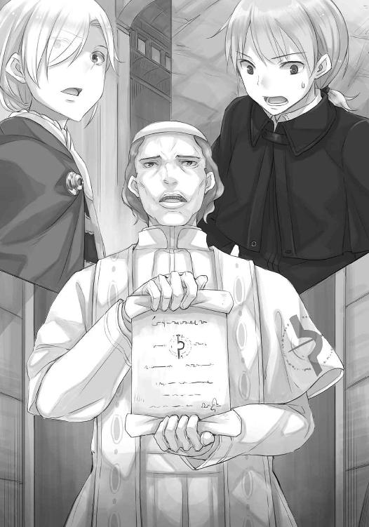
それに、縄を持って近づいてくる兵士たちの顔つきを見たハイランドは、機敏に察していたのだろう。兵たちも心情的にはハイランドの味方であり、教皇吏の登場によって、どうしようもなく行動しているのだと。
ならばまだ逆転の芽はある。
そのためには、潔白であらねばならない。
「神は正しき者の味方だ」
捕らえられ、執務室から連れ出される瞬間、ハイランドは大司教に向けて言った。大司教は強張った顔つきのまま目を逸らし、打って変わって、教皇吏におもねりの笑みを見せていた。
自分たちは兵たちに連れていかれ、裏口から外に出されるとそれぞれ馬車に詰め込まれた。
表からそうしなかったのは、目立って民衆の怒りに火がつくのを恐れてのことだろう。
それから馬車は、狭い町の中にしては随分な距離を走っていった。ミューリは自分にずっとしがみついていたからだろうか、同情的な顔を隠しもしない兵の気遣いによって、同じ馬車に乗ることができた。手を握ってやりたかったが、後ろ手に縛られているためにそれもできない。
馬車はごとごとと音を立てて進んでいく。途中から石畳でなく、土を踏み固めた道に変わったのがわかった。ようやく降ろされると、辺りには畑や果樹園らしき敷地が広がっていた。
「町の、外？」
ミューリが小さく尋ねてくる。捕らわれた者たちがひとけのない場所に連れてこられれば、連想することはひとつ。しかも、おあつらえ向きに土は耕されている。
しかし、高鳴る動悸を抑えて辺りを見回してみれば、林の向こうに市壁が見えた。よもや、市壁の中でいきなり処刑はすまい。
「こっちだ」
兵士に縄を引かれ、馬車を回り込むと、ようやくほっとした。
そこには、都市貴族が構えているのだろう、田園地帯で見かけるような大きな屋敷があったのだった。
「追って沙汰がある。おとなしくしてろよ」
屋敷の中に入ると、ハイランドの護衛たちは地下に連れて行かれ、自分やミューリ、ハイランドの側に控えていた文官やハイランドその人は、上の階に連れて行かれた。廊下の途中でさらにばらばらにされたが、幸いミューリとは同じ部屋に入れられた。ミューリがわざとなのかどうなのか、こちらのことを兄様と兵に聞こえるように呼んでいたおかげだろう。
とにかく戒めの縄を解かれてから押し込まれたのは、簡素な宿の一室のような部屋だった。装飾品は一切なく、ベッドと机、椅子だけがある。ミューリはその様子に、明らかに拍子抜けしていた。水が滴り、鼠が這い回る石の地下牢に入れられると想像していたのかもしれない。
「どうやら、それなりの身分の者として遇されているみたいですね」
縛られていた手首をさすりながら木窓を開けると、そこは牢らしく鉄格子がはめられていた。遠くに背の高い街並みと、教会の鐘楼が見える。ひどく遠くに感じられたのは、日が暮れかけているせいで距離感が摑みにくくなっているというより、大部分が精神的なものだろう。町の人々が蜂起して教会になだれ込み、自分たちが捕らわれたことを知って助けにくる、という様子を想像してみたが、そううまくはいかないはずだ。
試しに窓の鉄格子を揺すってみたが、びくともしない。部屋の出入り口も普通の扉ではなく、鉄製の蝶番でがっちり固定され、格子状に木を組まれたものだった。扉を開ける時に、不意打ちされるのを防ぎ、部屋の中でよからぬことを企まないように、という対策だろう。
壁になにか抜け穴はないかと目をやれば、尖った物で文字がたくさん彫られていることに気づく。我が団旗に栄光あれ、英霊よ正義を称えよ、あの部下は殺しておくべきだった、等々、昔からここはある程度の身分の者が捕らえられた時、放り込まれる場所なのだ。
「職人が裏切者だったんだね」
ミューリも手首をさすりながら、そう言った。
「あなたの警告を無駄にしてしまいました」
「ほらあ......と言いたいところだけど、金髪の言ってたことも確かだろうし、どうしようもないよ」
たまたま狙われたのが自分だった、ということだ。
「ねえ兄様、それより私たちこれからどうなるの？」
不安そうだが、どことなく芝居じみた調子で、ミューリが声を潜めて尋ねてくる。もしかしたら、聞きかじった冒険譚を思い浮かべているのかもしれない。
「教皇様から異端の勅許が出たとはいえ、すぐに首を刎ねられることはないかと思います。異端審問官による取り調べが先でしょう」
「あ、それ知ってるよ。魔女として、火あぶりにされるやつだよね？」
湯屋の客から聞いたのだろう。
「巷間噂されるほど、野蛮なことはしませんよ。特に、ハイランド様がいますし」
それ以前に、落ち着いてみれば教皇の勅許そのものがいまいち信じられなかった。異端としてみなされるには、もっと大々的に、一地方を席巻するくらいの大きな勢力になり、しかも教会からの交渉や説得に応じず、乱暴狼藉の限りを尽くしてようやく、という印象がある。歴史を振り返っても、異端の認定と討伐は、大抵が農民たちの蜂起を制圧する口実に使われることが多い。その点、今回のこの騒ぎは、ウィンフィール王国と教皇が三年に渡って交渉を続けているもので、多くの諸侯も成り行きを注意深く見守っている。大胆な動きに出れば、教皇の側にもそれだけ跳ね返ってくる危険が大きいはずだった。
ハイランドは王国の代表の一人としてアティフの町に来ていたのだから、それを異端とみなして捕らえたとなれば、ウィンフィール王国と真っ向から戦をする宣言と同じことになる。
だから、これは大司教の計画した、恐ろしく危険な茶番劇なのではないか、という可能性も捨てきれない。
「ただ、なんにせよこの状況を打開しないと、もし教皇吏が本物だった場合、ハイランド様の計画が潰えてしまいます。ああ、神よ......」
なにか策はないものかと部屋の中をうろうろしていたら、ベッドに腰掛けていたミューリが呆れたように言った。
「兄様、他人のことより自分たちのことでしょう？」
「それはもちろんそうですが......」
「で、どうやって逃げる？ 夜闇にまぎれて？ それとも、兵士を打ち倒して？」
耳と尻尾が出ていたら、わさわさしていそうなくらい興奮している。不安の裏返しかもしれないが、湯屋で冒険譚を聞きすぎて、現実と作り話がごっちゃになっているのだろう。
一方、この状況をなんとかしなければならないことだけはそのとおりだ。目下頼れる最大の伝手は、デバウ商会しかない。問題はどうやって連絡をつけるかだが、と考えていたら、廊下で繫がったどこかの部屋の格子扉が開かれる音がした。複数の人の足音がして、だんだん近づいてくる。別の部屋に入れられていた誰かが連れ出されたのだろうか。
息を詰めて廊下を見つめていると、前後を兵士に挟まれたハイランドが現れた。前で手首を縛られている様は、見るだに痛々しい。
「ん？ おい、待ってくれ」
そのハイランドもこちらに気がつき、兵士にそう声をかける。
すると、兵士たちはいったん立ち止まり、素知らぬ顔で離れて行った。
「味方は多い。諦めるのは早い」
格子越しに、ハイランドは笑った。ただ、その笑みもすぐに消える。
「こんな事態に巻き込んで済まない」
「いえ。それより、何事なのですか。異端の勅許とは信じられません。大司教様の仕組んだ茶番なのですか？」
「そう思いたいところだが、兵の話では、本物だとのことだ。我々が休憩する少し前に港に船が着き、市政参事会が緊急に招集された。その結果が、あれだ。大司教は教皇吏が勅許を運んでくることを事前に知っていたのだろうな。それで時間稼ぎをされたわけだ」
「で、ですが、ハイランド様を捕らえるということは、教皇様は......」
「ああ、我が国と戦争をするつもりらしい。これから私は、大陸側で根回ししていた協力者を吐かされるのだろう」
茫然とする前で、ハイランドは目を閉じる。その様子が、拷問の恐怖におびえるのではなく、慙愧の念に堪えるような、良心の呵責に耐えるようなものに見えたのは、気のせいではなかったようだ。
「君には黙っていたことがある」
そう言い終える頃には、きちんとこちらの目を見ていた。貴族としての矜持か、はたまたハイランドの性格か。
「我々の最終的な目的は、新しい教会を設立することだ」
馬鹿な、と思ったのは一瞬の事だった。ウィンフィール王国は三年間もの間、聖務を停止されている。その間にどれだけの者が、神へのとりなしを求めたことだろうか。
そして、その一言で教皇の対応が理解できた。ウィンフィール王国のような大きな国が、自前の教会を打ちたてようとしているのを許せば、後に続く者が出るのは想像に難くない。
教皇としては、先手を取って戦うしかない。
「その話が、どこかから教皇にもたらされたのだろう。目下の幸いと言えば、向こうが先に仕掛けてきたことで、我々には抵抗する大義名分ができたことだな」
ハイランドはそう言うと、おもむろに片膝をつき、頭を垂れた。
「君にこのことを黙っていたのはすまないと思っている。だが、ことが表面化するのはもっと先のことだと思っていた。王国には、教皇から派遣された枢機卿が何人も交渉のためにきている。彼らがいる間は絶対に動きはないと思っていた。あるいは、その油断をつかれたのかもしれないが......」
蜘蛛のようにうごめく策謀に、絡め取られたのだろう。
「また、君がどこまで我々の理念に賛同してくれるかもわからなかったので、話せなかった。騙したような形になったことを詫びるほかない」
湯屋の主人、元行商人のロレンスならば、頭を下げるのはタダだからいくらでも下げるのが商人の矜持だ、と言うだろう。だが、ハイランドは王族の血を引いている。そんな人物が頭を下げるのは、演技ではありえない。
「ハイランド様、おやめください。ある程度の危険は承知のことです。それよりも、状況を打開することを考えましょう」
ハイランドはそれでもなお頭を下げ続けてから、ようやく顔を上げた。
「それに関して、ひとつ頼みがある」
「頼み？」
「ああ。今度こそ、そこのお嬢さんに嚙みつかれそうな頼みなのだが」
ハイランドの疲れきったような笑みに振り向けば、ミューリが凄い形相でハイランドのことを睨みつけている。あの、連れ込み宿に誘ってきた娘を睨みつけるかのように。
ミューリは一貫して、ハイランドのことを信用していなかった。なにか隠しているはずだと。
それは事実だったが、ハイランドの立場を考えれば理解できることでもある。自分は結局のところ、ニョッヒラの湯屋で働く下男にすぎない。秘密をぺらぺらと喋るほうがおかしい。
「だが、その前に確認しなければならない。もはや話はニョッヒラでしたことと変わっている。これから先は、教皇の振る舞いが気にくわない、というだけのことではなくなってくる。君が私に協力すれば、君はウィンフィール王国に協力することになる。その意味はわかるか」
教皇の振る舞いへの単なる批判者ではなく、教皇の権威そのものに敵対することになる、というわけだ。
教皇は神の地上の代弁者であり、その教皇が支配する教会は、この世の正しさの基準を人々に知らしめる組織だった。そこには確かに、明らかな矛盾や、腐敗や、悪弊がはびこっている。それでもなお人々は足しげく教会に通い、寄付をし、聖職者を敬っている。それは千年以上、連綿と続けられてきたことだった。
その強固な世界は膨張を続け、先の数十年では北の地の異教徒たちと激しい争いを続けていた。その結果はなし崩しとはいえ、教会側の勝利と言ってもよい形に落ち着いた。
その過程でいくつもの国が亡び、土地の権力者が追放された。
ウィンフィール王国は、そういう巨大な機構と、戦をしようとしている。
「危険で、おそらくは長く、激しい戦いになるだろう。しかし、想像してみて欲しい」
「想、像？」
「ああ。我々の手で、新しい教会を作れるのだ。俗語に翻訳され、多くの町の人々が読める聖典を手にした聖職者が治める教会だ。不正や悪弊は大きく減るだろう。これまで見て見ぬふりをしてきたことや、どうしようもなかったことを一掃できる。私があの湯屋で茹ですぎた蕪のようになった高位聖職者ではなく、君に声をかけたのはそれが理由だ。我々は、新しい世界を作りたいのだ。欺瞞も、噓もない世界を」
そんな世界が作れるものか、と余人ならば言うだろう。
しかし、聖典を読んでみればいい。今の教会を作り上げた大本の預言者も、当時は今の教会よりも大きな、歪んだ教えがはびこる異教の地で興ったのだ。
「また、理想だけではない。我々は戦に勝算があると踏んでいる」
ハイランドは廊下の左右を見回し、格子に顔を近づけるとさらに声を潜める。
「王国は島国だ。陸続きの北の地でさえ、大軍を派遣するのは容易ではない。しかも我々は豊富な漁場と、造船技術を持っている。教皇の対応が早かったのは、我々の準備が完全に整うのを恐れていたからだ」
アティフの港町に陸揚げされている大量の魚を見ても、その話の意味がわかる。北の海で獲れた魚は、深く内陸の食卓まで届き、なお余りある。追い詰められた上の、勝算のない戦いではない、という言葉には説得力がある。
条件は揃っている。
後は、立ち上がるばかり。
「コル、私は君の力を欲している」
ハイランドは、言った。
「そして、私は受けた恩は必ず返す。新しい教会は席にも余裕があるはずだ」
新しい教会設立の際は、便宜を図る、ということだ。その欲がないとは口が裂けても言えない。司牧の要に立つことは、それだけ多くの人を救うことでもある。
それに、ハイランド、ひいてはウィンフィール王国が設立するという新しい教会の話はそれ以上に魅力的だった。もしもそれが実現されるのであれば、多くの人々が正しい神の教えに与れる。
ただ、ひとつだけ気になったことがあった。
「ハイランド様、ひとつだけお聞きしたいのです」
「なんだ？」
こんな問いは、ある意味ハイランドへの裏切りなのかもしれない。
しかし、これまで続けてきた物の見方をひっくり返すのは、そう簡単なことではない。
「新教会は、これまでの教会を打ち倒すのが目標ですか？」
教会には悪いところもあるが、良いところだってある。自分は教会を粉砕したいのではなく、歪んだ柱をまっすぐにしたかっただけだ。
「私はそうはしたくない。我々が新教会を設立すれば、教会も考えを改めるだろう。もう、教会は今のままでは永久に変わらない」
その目に満ちているのは怒りですらなかった。
脳裏をよぎるのは、教皇吏におもねる大司教のへりくだった笑み。
世の中はそう簡単に、変わらない。
「もちろん、変化の結果、人々が新と旧、どちらか気に入るほうの教会を選ぶような、そんな世の中がくればと思っている」
「......そうはならない現実を想定しているようにも聞こえます」
「完全なる信仰の問題とはいかない。これは政治だからな。だから、我々がそうならないように全力を尽くす必要がある。誰かが前に進み出なければならないのだ」
ハイランドの目が、まっすぐに射抜いてくる。
危険はある。
だが、自分はかつて、その危険を顧みずに村から飛び出したことがあった。
そして、この世には信じる価値のあるものが存在するのだと感じた、あの瞬間を思い出す。
「私に、なにができますか？」
そう言った、直後のことだ。
「だめ」
それまで側で話を聞いていたミューリが、言った。
そして、ハイランドとの間に割って入って、ぐいぐいとこちらを後ろに押してくる。
「だめ、協力しない。兄様はお前なんかに協力しない」
「ミ、ミューリ!?」
たたらを踏んで体勢を立て直し、なんとかその体を抱き止める。
すごい力で、本気だった。
「いい加減に......」
「いや、そのお嬢さんの話も聞くべきだ」
誰が言ったのか一瞬わからなかった。ミューリ越しに、ハイランドが微笑んでいた。
「私は誰かを仲間にする時、騙したり脅したりはもうしたくない。そういうのは、宮廷で十分すぎるほど味わった」
その笑顔は女性かと思うほど優しげなのに、目だけが冷たい硝子のようだった。
「私にも血の繫がっていない兄弟は山ほどいた。だが、慕ってくれたり相手を気遣えるような優しい者たちは、死ぬか追放されたよ。生き残っているのは殺しても死なない奴らだけだ」
貴族社会では、文字どおり血で血を洗う骨肉の争いが絶えないと聞く。王位継承権が絡めば、その比ではないのだろう。ハイランドの目を見てそのことを理解した時、どうしてハイランドが凄まじいまでの神学の知識を有しているのかもまた、理解できた気がした。あれは決して付け焼刃ではない。それは、魂の傷と飢えを癒すために、必要だったのだ。
そして、無礼続きのミューリに、どうして菓子や優しい言葉をかけていたのかも。
「私には私の理由があって、神へのとりなしを求めている。君が兄を止めるように」
「......」
足を止めたミューリが、凍りついたように沈黙していた。ハイランドはミューリがなぜこんな振る舞いをするのかわかっているのだろうか？
そのハイランドは、廊下を見やり、頃合だと思ったのだろう。立ち上がると口早に言った。
「コル、君たちの許にはデバウ商会がやってくるはずだ。その時に、私を助け出す算段も立てるよう頼んでくれ。このままでは私は戦の人質として使われてしまう。ウィンフィール王国はそれだけ不利になるし、私がいなければ新しい教会設立に邪な意図が入り込むかもしれない」
しかし、ハイランドは仮にも王族の血を引く人物で、権力者への伝手は数多あるではないか。
なによりも、デバウ商会がなぜ自分たちのところに救援にきて、ハイランドのところに行かないことがあろうか、と思った瞬間だった。
「デバウ商会は無条件には私を助けない。利益の天秤をじっと見つめているはずだ」
ハイランドとデバウ商会は利益で結びついている。ウィンフィール王国が教皇との争いで有利に事が運んだ際、デバウ商会は交易で特権を得る。だからデバウ商会はハイランドに便宜を図って協力していた。それはあくまでも利益の関係でしかない。だとしたら、教皇から異端とみなされ、市政参事会に捕らえられたとなれば、助けるに見合うなにかがなければならない。
「で、では、王国に助けを──」
そう言い募るのを、ハイランドは優しげな笑みで制した。
「身内にはもっと頼れない。頼れば恐らく、逆に彼らに暗殺される」
馬鹿な、と思った。
「彼らは私という人質を取り戻すために教皇と交渉するくらいなら、私を新教会の最初の殉教者に仕立て上げるだろう。宮廷から敵を一人排除し、しかも民衆の支持をまとめる肥やしにできる。一石二鳥だと小躍りするはずだ。だから、君たちで保険をかけるしかなかった。デバウ商会と深い繫がりがあり、利益の天秤を越えている君たちで」
その瞬間、ハイランドが自分のことをニョッヒラから連れ出した、最大の理由にようやく気がついた。
ハイランドはデバウ商会と利益で繫がっているが、自分たちは違う。デバウ商会のいわば陰の立役者の身内として、遇されている。だからなにかが起こっても、採算度外視で助けてくれるだろうと、ハイランドは冷徹に、ニョッヒラでそう計算したのだ。その上で、自らの身に危険が迫った時には、その威を借りようと目論んでいた。
その計算高さを憎む気はない。利用されていたのだと失望することもない。
なぜなら、ハイランドのその苦しげな顔つきだった。悔しそうですらあった。
ハイランドは身内に頼れないと言う。教会の鐘楼に登りでもすれば、天気の良い日にはかすかに故郷が見えるような海沿いの町で、故郷のために戦っているというのに。
ハイランドはそれ以上続ける言葉を持たなかったのか、なにかを思いきるように、立ち上がった。声をかける間もなく立ち去り、兵たちも慌ててハイランドの後を追いかける。
色々なことが頭の中に入ってきて、破裂しそうだった。目の前には、ニョッヒラにいた時には想像もしなかったような難題が積み上がっている。正直、なにから手をつけていいのかすらわからない。
だが、十年以上前、自分はどんな難題にも果敢に立ち向かう行商人の側にいた。
ロレンスならばどうするか、と考えた。
なんであれ、目の前の問題から立ち向かうべきだ。
「ミューリ」
ハイランドに何事かを見抜かれ、ミューリは魔法にかけられたかのように静かになっていた。ハイランドに隠し事があったように、ミューリにもまたなにかがある。
その名を呼ぶと、ミューリはハッと我に返って後ずさった。びっくりしたのか、姿勢を崩してひっくり返る直前、格子状の扉に背中が当たり、どんっと音が鳴る。
慌てて駆け寄ろうとしたが、ミューリの目に制された。
それが敵意に満ちた、鋭いものだったならば立ち向かえた。
そこにあったのは、今にも泣き出しそうな顔だった。
「あ、あの金髪を、助けるの？」
泣き落とし、と一瞬思ったのは、ミューリが過去に何度でもその手を使ってきたせいだ。とはいえ、ミューリの産声を聞いてから、今の今までずっと付き合ってきた。本気かどうかくらいわかる。
頭が痛いのは、本気だからだ。
「ミューリ」
もう一度その名を呼んでから、ため息をついて腰を下ろした。ミューリと同じ目の高さに合わせるのは久しぶりのこと。どうしても言うことを聞かない昔は、よくこうして説得した。
「あなたはとんでもないお転婆ですが、ホロさん譲りで頭がいい。察しもいい。それに、本当は優しいことも知ってます。ハイランド様の立場を知って、それでもなお、助けたくないと言うのですか？ それとも、あの話まで作り話だと？」
いつもの負けん気が鳴りを潜め、ミューリは狼狽えていた。もう一押ししたら泣き出してしまいそうで、髪の毛までざわざわとうごめき出している。
「ミューリ、耳」
言われ、ミューリは慌てて頭を押さえるが、押さえたまま背中を丸めてしまう。そのまま、誰にも見られないところに隠れたがっているように体を縮めていく。なにかよほどの理由があるのだろうとはわかるが、全く想像もつかない。
しかし、問いかけても応えず、なぜ応えてくれないのかの理由も全くわからないような厄介な存在の相手をするのは慣れている。しかも、とらえどころのない神とは違って、ミューリは確かに、そこにいる。
「あなたはハイランド様が湯屋に来てから、ずっとそんな態度ですね」
躾棒で打たれているかのように、ミューリは背中を丸めていく。
「最初は、私がハイランド様の相手に忙しいから不貞腐れているだけかと思っていましたが」
ミューリはもうほとんど顔も見えない。
「この期に及んでまでというのは、ちょっとした気まぐれではありませんよね」
深く、地中に潜り込んだ根っこのように、なにかがある。
「それは、困っている人を見捨て、大きな目的さえ、足蹴にしてよいことなのですか？」
そして、ミューリの様子を見れば、ミューリ自身が迷って苦しんでいるのがありありとわかる。それでもなお、ハイランドに協力するのを止めたがっている。
ミューリが相手だからこそ使いたくなかったが、奥の手を出した。
「私の夢をどうして邪魔しようとするのですか？」
ミューリの顔が、頭を抱える腕の隙間から槍で刺し貫かれたようなものになった。
目を見開いて、追い詰められた獲物のように体を硬直させ、唇を引き結ぶ。いよいよ消えてなくなりそうなほど体を縮め、最後の防壁が崩れ落ちる。
そして、現れたのは怒りに満ちた目だった。
「そんなに......そんなに聞きたいのなら、本当に言うけど......いいの？」
まさか反撃されるとは思わず、たじろいでしまう。自分の身を守るように頭を抱えていたミューリの腕が、一転、中から噴き出すなにかを押さえているかのようだ。
ミューリが泣きながら弁明し、理由を言うのはわかる。そこを優しく聞き、静かに諭す自分の様も想像できた。だが、開き直ったようなミューリが、脅しをかけてくるとは思わなかった。
わけがわからず立ち尽くしていると、ミューリはなおも言い募る。
「絶対、絶っっ対に兄様は困るけど、いいの？」
妙に頭の良いミューリの作戦だろうか？ こうして牙を剝き、こちらが引くのを狙っているのだろうか？
窮地に立たされている今、これ以上困ることなどなにがあるというのか。ハイランドは人質に取られ、教皇は聖典の翻訳を禁書とし、自分たちは牢にいる。このままでは神の教えは歪められたままになり、ニョッヒラに生きて帰れるかでさえ怪しいのだ。
だが、対峙するミューリはおよそ噓を言っているようには見えなかった。ミューリは確信している。頭を抱えていた腕を下ろし、肩が動くほど大きく息をしながら、こちらをゆるぎなく睨みつけている。全部お前のせいだ、と言わんばかりの怒りを込めて睨みつけている。
執務室で散々味わったものに似た沈黙が流れる。
それを牙で引き裂いたのは、ミューリだ。
「私は、兄様を、困らせたくない」
ゆっくり吐き出さないと、釣られてなにが喉の奥から出てくるかわからない。ミューリの喋り方は、それほどに堅い。
「だけど、私にだって......譲りたくないことが、ある」
普段から謙虚とは言えないミューリが、あえてそう宣言するのだから絶対にそうなのだろう。
しかし、このまま睨み合いを続けているわけにもいかない。なにがなんでもハイランドを助けなければならない。自分の夢のためにも、ハイランドのためにも、そして、神の教えを待っている人々のためにも。
大きく息を吸って、言った。
「聞きましょう」
付け加えたのは、ミューリに対する兄としての自負でもある言葉だ。
「たとえ困ったとしても、解決してみせます」
ざわざわざわ、とミューリの髪の毛が揺れる。
ミューリは声を出す直前、口の動きだけで、馬鹿、と言った気がした。
「あの金髪を助けたら、兄様は聖職者になるんでしょ？」
「そうです。あなたは前もそれで怒っていましたが、それのなにが......まさか」
と、気がついた。
「まさか、私が聖職者になることで、悪魔憑きと呼ばれる人々の敵に回るとでも？」
聖典の中には、預言者が悪魔と戦う話が何度も出てくる。自分はミューリに言ったではないか。なにがあろうとも、絶対にミューリの味方であると。
「私はそこまで融通が利かないわけではありません。それに、そもそもこの世はすべて神のお作りになられた被造物だと考えれば、生きとし生けるものすべてが神の愛の──」
「違う。全然、違う。そんなことどうだっていい。だって、だって、兄様が聖職者になったら」
ミューリはむくれ、目尻に涙を浮かべ、ついに耳と尻尾を露わにして、言った。
「......っできなくなるじゃない」
「え？」
「結婚！ できなくなるじゃない！」
その叫びに、頭の中を全部吹き飛ばされた。
「......っ......えっ？」
呆気に取られたまま、尋ね返した。
「私が？ ......誰と？」
その時のミューリの顔を、なんと表現したら良いのか、言葉が見つからなかった。
多分、ミューリもどうしたらいいのかわからなかったのだろう。
そして、ミューリのほうが冷静だった。格子の扉の向こう側の様子を窺ってから、ごしごし手で顔を擦ると、その熱の分だけ不機嫌そうな顔になって言った。
「ほら、だから言いたくなかったのに！」
今度は頭を抱えるのではなく、膝を抱えてそっぽを向く。唇を尖らせて、頰を膨らませて、尻尾がばしばしと床を叩いている。とはいえ、顔が真っ赤なのは怒っているのもあるだろうが、それ以上に恥ずかしいのだということくらいは気がついた、。それから、自分の、底抜けの間抜け具合にも。
「あの......」
「なにっ」
かんかんに燃え盛った石のように熱くなっている。
言葉を選ばないとと思っても、どうするのがいいのか皆目見当もつかなかった。
「ほ、ほん......いえ、その、いつ、から？」
本当に？ と聞いたら喉笛を嚙みちぎられるかもしれない、と本能が教えてくれた。
すんでのところで、言い換えた。
「......知らない」
知るか馬鹿、と膝頭に口をくっつけながら付け加えた気がした。
ミューリが自分を慕ってくれていることは、当然わかっている。時折父親のロレンスが愚痴るくらい、懐いている。そんなミューリを可愛いと思うし、大切にしてきたのはそのとおりだ。それでも、そういう目で見たことは一度もなかった。
ただ、そう考えれば多くのことが腑に落ちた。禁欲の誓いをいじり、からかってくるのも、あの臭い木樽の中で我慢して、隠れて用意していたとっておきの服を見せたのも、そもそも、旅についていきたいと言い張ったのも、そうなのだ。ならばハイランドを敵視するはずだと思った。ハイランドは、外の世界からやってきて、自分を遠い世界に連れ去ってしまう存在なのだから。
そして、ミューリの警告どおりになった。自分の夢から言えば、想いに応えることは絶対にできない。同時に、ミューリを傷つけたくなかった。二つの事実に挟まれて、身動きができなかった。
大儀だなんだと言っていた自分が恥ずかしくなる。いざ目の前で個人的な問題が起こったら、それを大事の前の小事と切って捨てることなど到底できなかった。ミューリがハイランドの大義に対し、自分の恋心だけで立ち向かっていた気持ちが理解できた。それははっきりと、釣り合うものなのだ。
では、その釣り合った天秤をどちらに傾けるべきなのだろうか、という問題に立ち返った時、その手がかりすら自分の中にはなかった。神学の問いかけには、針の頭の上で天使が何人踊れるか、などという気が遠くなるほど形而上的なものもある。なのに、誰かが誰かを好きだという至極ありふれた問題は、その問いよりもさらに難しかった。世界の半分の半分しか見ていない、というミューリの指摘は恐ろしいまでに正しかった。
ただ、わかったところでどうにもならない。せいぜい思いつくのは、そんな情けない自分なのだから、他にもっと素晴らしい人を見つけたらどうだろうか、と伝えることくらいだ。
それがどれほど情けないことかは、いくら自分でも、わかる。
「はあ」
そして、そんな胸中の煩悶を見透かしたかのように、ミューリが大きなため息をついた。
年の頃が半分くらいの女の子に、横目でじろりと睨まれる。
「もういいよ。兄様が私のことなんて野山を駆けまわる貂かなにか程度にしか思ってないって知ってたもの」
可愛らしいが、すばしっこく、食料庫に忍び込んではあれこれ漁る貂は、確かにミューリに似ているところがある。
「でも、今言わないとずっと気づかれないままだっただろうし、よかったのかも。あの金髪を助けられたとしても、どうせ兄様は私を置き去りにしてウィンフィール王国に行くんでしょ？ 戦になって危ないからとかなんとか言って」
ミューリはせっせと頭を撫でて耳を隠し、尻尾もしまって立ち上がる。
ごまかしようもない。普通に考えて、ウィンフィール王国には連れて行けない。戦になれば海峡は封鎖されるだろうし、負ければどんなひどい目に遭うか想像もできない。
「そう、ですね」
賢いミューリはこちらを横目に見て、ふんと鼻を鳴らした。
「私は兄様が好きだったの！ 馬鹿」
その一言だけは、年相応に幼く、可愛らしかった。
「で？ どうするんだっけ？」
ミューリは寝つきも良ければ切り替えも早い。あるいは、このまま立ち止まっていても、なんの結論も出ないとわかりきっていたのだろう。自分がミューリを赤ん坊の頃から知っているように、向こうも生まれてからずっと、こちらを見ていたのだ。
しかし、ミューリとの間にはなにか薄い膜のようなものができてしまった気がした。
その声も、仕草も、体温でさえも、本当に大事なものはその薄い膜に遮られているような気がした。
それを悲しいと思うのは身勝手な話だ。
人生は旅であり、旅は出会いと別れの連続なのだから。
「その......ハイランド様の話では、デバウ商会のステファンさんが私たちを引き受けにくるということでした。その時に、どうにか掛け合うしかないでしょう」
「自信は？」
冷たく聞いてくるが、熱い涙と共に縋られるよりかはましなのかもしれない。
「ありません。デバウ商会は商人の集まりです。こちらから渡せるものがなければ、交渉には応じてくれないでしょう」
「あの金髪を助けろ、でないと死んでやるって言うのは？」
「私もそのくらいしか思いつきませんが、できますか？ 舌を嚙んで死ぬというのは、迷信だと聞いたことがあります」
短剣の類も持ってきていない。
「......そもそも、あの金髪のためにそんなことしたくない」
「ステファンさんも我々がハイランド様を助けたいと思っている、と簡単に想像できるでしょう。頑強に抵抗しても、麻袋に詰め込まれてニョッヒラまで運ばれるのが関の山だと思います。それで義理を果たしたと言うでしょう。どうにか、どうにか交渉に持ち込まないと」
デバウ商会は利潤を追求する組織だ。信仰や良心に訴えても無意味なのは目に見えている。
逆に、損得の話になれば食いついてくるのはわかっている。彼らはそのことにだけは、正直だった。
しかし、もちろん自分には儲け話も、財産もなにもない。
打つ手があるようには思えなかった。
「神よ......」
首から提げている教会の紋章を握りしめながら、うめくように言った。ミューリが無表情にこちらを見つめていたが、ここで神に悪態をつくようでは信仰のなんたるかを語れるはずもない。
大きく息を吸い直し、もう一度頭の中を洗いざらい検討しようとした時だった。
「あの金髪を助けるだけなら、助けられるよ」
無表情のまま、ミューリが言った。
「......それ、は？」
ミューリはため息をつき、もそもそと胸元をまさぐると、紐に繫がれた小袋を取り出した。
母親のホロから渡されたという、麦の詰まった袋だった。
「これがあれば、いざという時には兄様を助けられるって言ったでしょ？」
「まさか......」
ミューリの母親のホロは、麦に宿る狼の化身であり、少女と巨大な狼の姿を自由に行き来できる。だが、ミューリは狼に化けられなかったはず。
驚きの目を向けていると、ミューリはものすごく嫌そうに言った。
「すごい練習したんだから......うまくできないと、母様、本気で怒るし」
獅子は我が子を千尋の谷に突き落とす、と故事にもある。
狼でも同じなのかもしれない。
「けど、それもこれも兄様を守りたかったからで、あの金髪のためじゃない。いい？ これは、兄様の夢のためにやるんだよ。兄様みたいなのは、夢破れたらきっと見てられないくらい落ち込んで憔悴するんだから。そんな陰気くさい奴がニョッヒラみたいな狭い村にいられたら困るの。それなら夢を追いかけて、遠い場所でへらへらしてくれてたほうがましなの。わかる？」
あからさまに恩着せがましく言ってくるミューリの顔は、必死に自分に言い聞かせているようにしか見えない。多分、夢見がちなミューリのことだから、奥の手はこんなことに使いたくなかったはずだ。もっと、自分たちが絶体絶命の危機に陥り、竜を相手に戦う騎士が囚われの姫を救い出すその瞬間に駆けつけるような、そんな場面で使うことを想像していたに違いない。
それでも、自分の手の中に道具があり、扉を開けられるとなれば、力を貸してくれるのだ。たとえその先に、自分の望まぬ結果が待っているのだとしても。
ミューリが自分のことを好いてくれていたのだと実感するのに、これ以上のことはない。
気丈に力を込め、なにかを堪えているようなミューリの赤い目を見つめ返し、言った。
「わかってます。ミューリ。本当に......本当に、ありがとう」
ミューリはなおも苦しげな顔をしていたが、ぷいっとそっぽを向いた。
「惚れ直しても......いいんだけど？」
ちらりと横目に見るその様は、本気なのか冗談なのかわからない。多分両方なのだし、冗談にするしかなかった。
「見直しはしました。あなたは我儘ばかりですが、人助けもできる優しい子なんだと」
「なにそれ！」
ミューリはわかりやすく怒り、わかりやすく悲しんでいた。しかし、耳と尻尾は出てこない。
自分の中で割りきってしまったのだろうとわかった。
自分もそうしなければならない。
「でも、戒めを解いて屋敷から連れ出したその後はどうするの？ 皆で走って逃げるの？ 私は母様みたいに人を乗せて走れないよ」
どうやら人を丸吞みにするような、巨大な狼になれるわけではないらしい。最良なのは海路でウィンフィール王国に逃げ込むことだが、船を調達するのは難しい。海峡を渡れるような船となると、動かすのにたくさんの人の力がいる。
悪魔憑きや、あるいは精霊と呼ばれる類の存在が世の中には思いのほかいるが、彼らが人の世に必死に適合しようとし、息を潜めて暮らしているのには理由がある。人の作り出した世は複雑で、もはや多少の腕力ではどうにもならないことが多すぎるからだ。
「できれば船で、ウィンフィール王国に渡りたいのですが」
「だったら、あの旦那様......じゃなかった、ステファンって人の尻にでも嚙みつく？ きっと船を仕立てることくらいできるよ」
小僧たちはステファンのことを旦那様と呼ぶのだろう。
「いえ......脅して船を仕立てても、大司教や教皇吏に気づかれないはずがありませんし、気づかれればまずいことになります。ステファンさんにはなんの罪もありませんし、へたをすればデバウ商会の本体にまで問題が波及してしまうかもしれません。私たちを連れて来た馬車がこの屋敷にありますし、それで逃げましょう。ハイランド様の伝手があれば、どこかの町から船で王国に渡れるはずです。あなたのことは、ニョッヒラに手紙を出して、ホロさんかロレンスさんに迎えに来てもらいましょう」
「......わかった。じゃあ、とにかくここに囚われてる、あの金髪と仲間を助ければいいんだよね。おあつらえ向きに、日も暮れたことだし」
鉄格子の張られた木窓の向こうを見れば、ぼんやりと明るい町の中心と、影絵のように背の高い建物の輪郭が見える。
「お願いします」
「うん」
ミューリはホロから譲り受けたという小袋の口を開け、中から麦を取り出して口に含む。
苦い丸薬でも飲み込むかのように嚥下してから、ふとこちらを見た。
「兄様」
「なんですか？」
「......あっち向いてて」
恥ずかしそうだった。裸を見られるのはよくても、獣に変わるところは見られたくないらしい。もちろん否というわけもなく、後ろを向いて、律儀に目も隠した。
そして、ミューリが借り物の服を着たままであったことを思い出して、慌てて振り向いた時には、すでにそこに銀色の狼がいた。
『......いいよって言ってないんだけど。毛づくろいしたかったのに......』
お洒落にはうるさいミューリの赤い目が、じろりと睨んでくる。確かにホロよりかは小さいが、それでも森で見かける狼よりも一回りは大きい。後ろ足で立ち上がれば、簡単にこちらの背は越えてしまう。
「服を着たまま......と言おうとしたんですが」
『破いちゃったね』
ミューリの周りには、服が無残に散らばっている。
ホロから受け取ったという麦袋も落ちていたので、拾って胸元にしまっておく。
『けど、兄様が怖がらなくてよかった』
「ホロさんの狼姿を何度も見たことがありますし」
『知ってる。母様の尻尾が大好きだったって』
なんとなく恥ずかしくて、咳払いをしてしまう。
「それに、聖職者は元々狼を恐れません。古の聖人ヒエロンは、凶暴な狼の足に刺さっていた棘を抜いたことで暴れる狼を沈め、以来、牧畜と狩りの守護聖人になりました。絵に描かれる時は、いつも狼と一緒です」
『兄様はその理屈っぽさが玉に瑕だね』
ばふ、と尻尾で顔を叩かれた。
『商会にある私の服はどうしよう』
「げほっ......服、ですか？ 後で手紙を出しておきますよ」
『まあ、もういいんだけど。見せたい相手はいなくなっちゃうし』
恨みがましい目つきを向けられ、恐縮するしかない。
『冗談だよ。兄様が悪いわけじゃないもの』
では誰が悪かったのだろう？
その問いを跳ね返すかのように、ミューリは体をぶるぶるさせた。
そして、憂さ晴らしのように格子戸に嚙みつく。
『ぐうぅぅぅ......』
地を這うような独特のうめき声と共に木の軋む音がして、柔らかいチーズさながらに格子戸がひしゃげていく。
『ふんっ』
最後に首を横に振ると、めき、とも、ばき、とも聞こえる音を立てて、蝶番がはじけ飛んで格子戸が外れた。ミューリは前足で口についた木片を取ってから、ちらりとこちらを見る。
『褒めてくれないの？』
「すごいです」
『それだけ？』
そう言って、大きな体をのっしのっしと近づけてきて、ごわごわの首筋の毛を擦りつけてる。撫でろ、ということなのだろう。見た目は恐ろしい狼でも、中身はいつものミューリのまま。それに、大きいとは言っても現実的な大きさなので、町を連れて歩ける気がしないでもない。一瞬、ミューリを側に控えさせ、聖典を片手に説教する自分の姿を思い描いてしまう。
そんな空想をかき消すように、わしわしと手で毛を搔いた。
「綺麗な毛並みですね」
なんの気なしに言ったら、ミューリは赤い目をこちらに向けて、牙を剝く。
嬉しそうに笑ったのだとわかった。
「残りもお願いします」
『任せてよ』
尻尾を一振りすると、大きな体にも拘らず、足音ひとつ立てずに流れるように廊下に出る。日が落ちて廊下が暗いので、その様子に余計に現実味がない。
ミューリは床の匂いを嗅ぎ、迷いもなく歩いていく。
そして、突然走ったかと思うと廊下の先の角を曲がり、直後に悲鳴が一瞬だけ聞こえた。
すぐに静かになり、ミューリが戻ってくると、その口には鍵束を咥えていた。
「......相手は？」
『おいしかったよ』
思わず口元に血が付いていないか見てしまう。
『出会いがしらに顔を舐めただけ。さっきの音を聞きつけて確認しに来たみたい』
いきなり暗闇でこんな狼と出くわして顔を舐められたら、屈強な傭兵だって気を失うだろう。
『屋敷の中には、ほとんど兵の人がいないね。どこ行ったんだろう』
顔を上げて、大きな鼻をひくひくとさせる。
『あの金髪は上の部屋かな』
地下だと言われず、ほっとした。なんとなくだが、拷問は地下で行われる印象がある。
「では、そちらに」
頭を低くし、静かに、素早く進むミューリの後を追いかける。迷いなく進むので本当に大丈夫なのかとはらはらしたが、確かに廊下には誰もおらず、屋敷内は静かだ。階段を上っていると、悲鳴ともうめき声とも聞こえるくぐもった声が頭上から聞こえ、また静かになる。階段を上りきると、廊下で兵が白目を剝いて倒れていた。側に火がついたままの蠟燭と手持ちの燭台が転がっていたので、蠟燭を燭台に立て直して持っていくことにした。
ミューリはすでに廊下の先、とある一室の前で腰を下ろしている。
明かりに照らされると、尚更置物のように見えた。
──ここですか？
囁くように言って、扉を指差す。肯定なのか、尻尾が大きく持ち上げられて、ぱたりと下ろされる。扉に耳を当てると、中から人の声が聞こえてきた。尋問されているのだろう。
──扉をノックするので、出てきたところをお願いします。
ミューリは返事の代わりにすっくと四足で立ち、いつでも飛びかかれるように前傾姿勢になる。そして、ノックをしようとしたが、ふとその手を止めた。ミューリが、怪訝そうにこちらを見上げてくる。
──ハイランド様があなたを見て驚くかもしれません。
ミューリは、じっと次の言葉を待つ。
──ですが、あなたの名誉は必ず私が守ります。
赤い瞳がゆっくりと閉じられ、再び前傾姿勢になる。
大きく息を吸って、扉をノックした。
「大変です！ 御報告が！」
さらにノックし、急の報を装った。数瞬、躊躇うような雰囲気が扉の向こうで感じられたが、もう一度扉をノックすると人が椅子から立ち上がる音がした。そして、扉の閂が外されたその瞬間、こちらから力の限りに扉を開けた。
「っ！」
すべては一瞬のことで、煙のようにミューリが部屋に入り込んだかと思うと、すでにその兵士はミューリの大きな掌の下だった。
「ハイランド様」
ミューリの脇をすり抜けて部屋に入ると、茫然としていたハイランドがびくりと我に返っていた。
「コ、コル？」
「御無事で。助けに参りました」
中心に簡素なテーブルがあるだけの、殺風景な部屋だった。ハイランドは縛られていることもなく、テーブルにはひとつの甕と、二つのコップが置かれていた。
「私は、幻を見ているのか？」
ミューリは扉の脇におとなしく鎮座している。蠟燭の灯りのせいで影が濃く、精巧な絵のようにも見える。
「神が我々に遣わされたのです」
堂々と言えば、それが真実になる。ハイランドも、そうなのか、とばかりにうなずいて、呆けたように椅子から立ち上がっていた。しかし、そこは勇敢で聡明な人物だ。驚きが去ればミューリのことを恐れることもなくじっと見つめ、なにかに気がついていた。
「その赤い目......」
ひやりとしたが、ハイランドは頭を振った。
「いや、問うまい。我がウィンフィール王国も、建国の際は黄金の羊に導かれたのだ」
牧羊が盛んなウィンフィール王国には、全身を黄金の毛に覆われた巨大な羊の伝説がある。
その羊にかつての旅で出会ったことがあると言ったら、ハイランドは笑うだろうか。
「それに、私はろくでなしどもに囲まれて育ったからね。目を見れば大抵のことがわかる」
ハイランドは恐れもなくミューリに近づき手を伸ばした。
「良い目だ」
ミューリは少し照れるように頭を下げ、ハイランドが毛皮に触れるのを許していた。
「さて、奇跡が我が身に起きた。使命を果たせと神が仰せだ」
「鍵はあります。お仲間を連れて町から出ましょう。それから、どこかの町で船を仕立て......」
と、言葉の途中で口を閉じたのは、ハイランドの表情のせいだった。
奇跡が起き、逃げられる、という喜びに満ちた顔ではない。
悲壮な決意に彩られていた。
「私はこの町を出られない。君たちと、部下で逃げてくれ。私の家に尽くしてくれた気の良い者たちばかりだ」
「それは、あの、ハイランド様、なぜですか」
「さっきの部屋からここまで来る間に、何人の兵とすれ違った？」
突然の質問に面喰らったが、ハイランドは自分の知らないなにかを知っているらしい。
「屋敷内に兵がいないのは、皆が町の中心部に向かっているからだ。デバウ商会の者もまだ来ていないだろう？ それどころではないからだ。そこで転がっている者からは、町の者たちのために、ウィンフィール王国の賛同者の名前を出せと言われたよ」
振り向くと、ミューリも扉の脇で気絶している兵をちらりと見る。
「町では、翻訳版の聖典を手に、教会を非難する人々が大挙して広場に繰り出しているそうだ。説得して回った職人組合や商業組合の者たちが、予定どおりに立ち上がってくれたのだろう。配下の気の荒い職人たちの焚きつけ方には、やや苦々しいものもあったが、あの赤々とした火は、その怒りの火だ」
この部屋からでも見える。丘の上の町は、くっきりと燃え上がっている。
同時に、犬に司祭服を着せて冒瀆するようなことを、ハイランドが画策していなかったことにほっとした。自分の見立てに誤りはない。ハイランドこそ、人の上に立ち、正しさを導く人物だ。
「人数的には町の人々のほうが多いから、当初は優勢に進むだろう。しかし、勢いだけで騒ぐ者たちは統制された兵たちに絶対に勝てない。膠着し、特にこれといった展開もないとわかると、息切れが起きる。明日の仕事があるから、という理由だけで蜂起を途中で切り上げる農民や日雇い人夫を過去に何度も見てきた。その緊張の緩みに兵の主力が投入されれば、一気に崩れる。何人かが見せしめに捕らえられ、明日には辻にぶら下がる。お決まりの流れだ」
ハイランドは貴族であり、領地を抱える身。民衆の蜂起とその結末がどうなるのかは、よく知っているのだろう。
「多くが酒と雰囲気に煽られて騒ぐ者たちだが、それでも少なくない数の人々が、本気で抗議しているはずだ。大義は我々にある。人々はまっすぐに、純粋に信じられる神の教えを切に求めている。だが、今の騒ぎが制圧され、隣人が辻の処刑台の上で朽ち果てていくのを見れば、こう思うだろう。ハイランドさえ、ウィンフィール王国の奴らさえ来なければ、と」
そして、これまでどおりの生活が続く。なにも変わらず、少しずつ悪弊が降り積もり続けるような毎日が。
「人々はおそらく、教会にまだ私がいて、大司教とやり合っていると信じている。その一助足らんとして拳を突き上げている。その場に私がおらず、とっくに逃げ出していたと知らされたら、一体誰がこの後、我々の言うことを信じるだろう？」
「ですが」
「いいか、私が行けば、大司教や教皇吏は、民衆は私に唆されたと言うことができる。大司教も町の者相手には、苛烈な措置は極力避けたがっているはずだ。これからも町の名士であり続けたいと願っているはずだからな。だから、私だ」
ハイランドは、言った。
「私があの場に赴き、大司教を糾弾しなければならない。この騒ぎの首謀者は私だと見せなければならない。せっかく助けてもらって、悪いのだが」
最後に冗談めかして、そんな言葉を付け加えた。もちろん、欠片も笑えない。
「次は殺されますよ」
教皇側はすでに異端の勅許を出し、宣戦布告をしている。ハイランドが民衆の先頭に立てば、もはや灰色の決着はあり得ない。大司教がハイランドの要求を受け入れて教皇と対立するか。さもなくば、ハイランドを殺し、教皇側は断固譲歩しないと世間に知らしめるかしかない。
ハイランドが現れれば、民衆の怒りは行くところまで行かなければ収まらないだろう。
「私が説得で勝てるとは思わないのかな？」
ハイランドは笑っているが、なにも言葉を返せない。ただ、首を横に振ることしかできなかった。その果敢な行動力を、考えを収める方に向けられないものかと祈るように。
「確かに、教皇吏が来た今、もう一つ、二つ、なにか後押しが欲しいところだが......なに、このまま拷問でも受けて、苦しみ続けるよりかはだいぶましさ。少なくとも、私は私の命の始末を自分の意志でつけられる。その後のことも、兄弟は嫌な奴らばかりだが、好機を生かす腕だけは信用できる。さぞ大袈裟に哀しみ、追悼し、私の死を利用してくれるはずだ」
なんの気負いもなく言ってのける。ハイランドがどんな生活をしてきて、どんな想いで聖典を開いていたのかと思うと、胸が痛んだ。
そして、ハイランドはそんな自分の顔を見て、嬉しそうに微笑んだ。
「さあ、事は早く進めよう。どうせ、教会前ではすでに私が逃げたと言い触らされているだろう」
「なら、私も──」
思わず身を乗り出して言ったところに、ハイランドは長い腕でこちらの胸を押した。
余りに不意のことで、よろめき、後ろ向きに倒れ、柔らかくも力強い毛皮にぶつかった。
受け止めてくれたミューリが、こちらの肩越しにハイランドに唸る。
「神の遣いにきちんと聞いたのか？ 行ってもいいかと」
ミューリの大きな赤い目が、じろりとこちらを見る。
「その狼ごと来てくれたとしても、大変な騒ぎに拍車がかかるだけだろう。次はそこの兵士のようにうまく気絶させるだけでは済まない。人を殺す覚悟と、殺させる覚悟が必要だ。それでも自分の身を守れるかは、五分五分だろう。コル、私は君が血で汚れるのを望まないし」
その綺麗な毛皮が汚れるのも忍びない、と言った。
ミューリはなにも言わず、じっとしている。ハイランドを静かに、見つめている。
自分にはなんの発言も望まれていないと、痛いほどわかった。
そして、ハイランドは困ったように笑う。
「コル、苦しませてすまない」
「そんなこと......そ、そうです、今こそデバウ商会のステファンさんに頼み、ハイランド様の手伝いをするようにと──」
「コル」
まるで自分がミューリを諭す時のようだった。
「残念だが、デバウ商会のステファンは大司教の味方だった。大司教が勅許状のことを事前に知っていたのは、デバウ商会の快速船が情報をもたらしたからだと、そこで寝ている者が教えてくれた。だから、助けは期待するな、と凄んできたよ」
脳裏をよぎったのは、ミューリが昨日港で見たという、トンボのような船の話だ。日が暮れかけたところに、無理やり港に入ってきて、働いている者たちは難儀したと言っていた。
「おそらく、大司教となんらかの密約があって、特権かなにかを享受しているのだろう。町のほとんどの者が敵対しているのに、唯一協力するからには、なにか実利が絡んでいるはず。だから、協力はあり得ない。むしろ、配下の人員を使って各組合の長に騒ぎを沈めろと圧をかけていたっておかしくない。教会に味方するべき建前を並べ立て、言うことを聞かなければこの先取引をしなくなるぞ、と言われれば職人たちは弱い。せいぜい、君たちを見逃してくれるのが関の山ではなかろうか。ああ、それから。馬鹿なことは考えないように。彼らは君たちがどこから来たのかを知っている。下手に動いて、ニョッヒラに災いが及んでもいいのか？」
「っ......」
言い終えると、ハイランドは深呼吸をして、ミューリに微笑みかけた。
「この、今時珍しい純粋な神の僕を、頼んだよ」
『ヴォフ』
いかにも狼らしくミューリが吠えると、ハイランドは嬉しそうにした。
「君たちに出会えた幸運を、神に感謝する」
屈託のない、優しげな笑顔だった。
ミューリをあまり人目に晒すのはまずいので、自分とハイランドで手分けして屋敷の部屋を回り、ハイランドのお供たちを解放した。集めてみると、その少なさに改めて気がつく。
ハイランドがお供を連れてぞろぞろ歩く性格ではないにしても、信用できる人物がそもそも少ないのだ。
彼らも当然、ハイランドと運命を共にしたいと願い出たが、ハイランドは一蹴していた。護衛の数人以外残すつもりはないようだった。おそらく、なにを言っても絶対に聞かない、と彼らにもわかっていたのだろう。
自分たちを運んできた荷馬車が厩に残っていたので、やや狭いが御者台も使えば全員が分乗できた。御者台に座る者は、気絶させ縛り上げた町の兵士の服を拝借し、変装していた。そうすれば、この時間に市壁を抜けようとしても見咎められはしないだろう、ということだろう。しかしすでに市壁に向かったミューリが、今頃見張りの者たちを蹴散らしているはずだった。
丘の頂点に位置する町の中心部は、いよいよ真っ赤に輝いている。
蠟燭も、燃え尽きる瞬間が最も明るいという。時間はない。
「では、ハイランド様......またお会いできる日を......」
「ああ、楽しみにしている」
ハイランドは厩の前で、部下たちが乗る馬車を笑顔で見送った。
そして、厩に繫がれていた馬を一頭引き連れ、屋敷の入り口に連れてくる。
「君も行くんだ」
否と言える理由がないことが、あまりにも辛かった。
「聖典の翻訳版は君の頭に入っているはずだ。教皇側の連中をぜひ苛立たせてくれ」
ペンとインクさえあれば、いくらでも翻訳版は再現できる。ハイランドの意志を繫ぐことはできる。
「さあ」
ハイランドはこちらの手を摑み、無理やりに手綱を握らせると、踵を返した。町の兵士の服を着込んだ護衛の者たちといくつか言葉を交わし、一人だけひらりと馬に飛び乗った。こちらを少しも振り返らない。ハイランドが馬の腹を蹴ると、護衛たちと共に駆けていく。
なんの余韻もなく、あっさりと道の向こうに消えた。
自分がぐらつかないための、ハイランドの最後の気遣いだろう。
『兄様』
ぬっと銀色の獣が陰から現れ、驚いた馬が逃げようとする。手綱を引っ張られて、我に返った。
市壁で一仕事を終えてきたミューリが、大きな鼻を顔に摺り寄せ、首を擦りつけてくる。それでも動かずにいたら、ミューリはおもむろに言った。
『私たちもニョッヒラに帰ろう？』
見やれば、ミューリの赤い目は悲しそうだった。
ハイランドを助ける術は、どこにもないのだとその目が言っていた。
神はその忠実な僕に手を差し伸べてはくれないのだ。
「私は......なぜ、こうも無力なのでしょうか」
胸元の教会の紋章を握りしめ、手のひらに食い込むほど力を込め、溢れ出そうになる涙を堪えた。自分には紙の上の知識しかなく、ミューリのような力も、ハイランドのような崇高さも、かつて目の当たりにした大冒険の主役である、ホロやロレンスたちのような才もなかった。
ただの一人の、理想的な世界を思い描く夢追い人でしかなかった。
「なぜ、なぜ......！」
うめき、嗚咽を漏らした瞬間だった。
ものすごい衝撃を腹にくらい、天と地がひっくり返った。
突然のことに痛みすら感じず、目を見開いていると、視界に牙だらけの口が現れた。
『兄様は神様になりたいわけ？』
自分のことを見下ろすミューリが、涙でぼやけていた。
『ハイランドは、兄様にもきちんと感謝してたよ。兄様は居心地悪そうだったけど、あいつが兄様のことをやたら褒めてたのは、あれ、本気だったと思うな。翻訳の作業に夢中だった時も、あいつはちょくちょく私に兄様の様子を聞いてきたもの。それで、自分も頑張らなきゃって笑ってたし、兄様みたいな人と出会えたのは、神の思し召しだって言ってた』
全然知らなかった。
『だから、兄様は、兄様が私に語ってくれたことを、きちんとやれてたよ。この世で支えとなるものを見つけられない人に、それをもたらしてた。それって、立派な聖職者じゃない？』
ハイランドの名を初めてまともに呼んだミューリは、鼻先でこちらの頰を小突く。自分自身の言葉を、こちらの頭に無理にでもねじ込むかのように。
『それに、無力なのは兄様だけじゃない。母様はね、私に言ったことがあるよ。大きな牙と爪があろうとも、どうしようもないことがたくさんある。だから、大切な誰かを見つけろって。あいつは見つけたんだよ』
右前脚の掌が、どすんと胸を押し潰す。
「ぐふっ!?」
『私はその誰かから、振られたけど』
ぐりぐりとねじ込むように押され、本気で息ができない。ミューリの前脚を摑むと、ようやくどけてくれた。
『ニョッヒラは外の世界より単純だし、温かいお湯もあるよ』
ニョッヒラで生まれ育ったミューリが言うと、あまりにも説得力があった。
『兄様』
その最後の一言は、優しい口調ではなかった。
そして、その言葉に応えなければ、ミューリを傷つけることになるともわかっていた。ミューリのような素晴らしい娘の恋心を振った男は、せめて立派な人物でなければならない。
起き上がり、服についた土を払う。その際、手に握っていた教会の紋章の紐がちぎれていたことに、ようやく気がついた。
『......』
ミューリの視線を感じ、苦笑する。
「捨てませんよ」
『なんだ、残念』
神の教えを捨てれば、禁欲の誓いも守る必要がなくなる。
とはいえ、教会の紋章を投げ捨てたら、きっとミューリは怒るか悲しむかするだろう。
「戻りましょう。私には、あなたを守って無事にニョッヒラに返す義務がある」
『へ～、私を守るの？』
ミューリは嬉しそうにこちらの腰の辺りを大きな鼻で突いてくる。
それをいなしながら、紋章をしまうために服をまさぐり、出てきた財布を手に取った。
「貨幣と一緒にしまったら、罰が当たりそうですが......」
『そんなことないでしょ。むしろ喜ぶと思うな』
「あなたはまたそんなことを......」
『ええ？ だって、教会はたくさんお金集めてるでしょ？ 手伝いで教会の中にも入ったけど、寄付箱には小銭がぎっしりだったよ。商会にも天秤持ってる天使の絵があったし』
デバウ商会の連絡員に出会った時も、片手に聖典、片手に天秤だなどと言われた。デバウ商会の面々が気に入っている題材なのかもしれない。
「前にも言いましたが、あの天秤は公平を表すものです。剣は正義ですね」
『ふーん？ 私は、町の人から税金を搾り取るための装備かと思った』
剣で脅し、天秤で貨幣を計る。とんでもない不敬だと思ったが、理解できてしまうのが困りもの。同じ一枚の絵でも、色々に解釈ができるものだ。
それに、教会の寄付箱にたっぷりのお金が詰まっている様は、確かに見た目は良くないかもしれない。だが、教会はそのお金を使い、様々な慈善をなしたり、聖務をなしたりしているはずなのだ。集まったお金は、再び町に還流されているはず。だから、見た目だけで判断しては......と思って、ふと気づいた。
集めたお金を町に還流？
なにか、どこかでそれに反する話を聞いた気がした。
『兄様？』
また立ち止まって考え込んでしまっていたのか、ミューリの声で我に返る。
そして、思い出した。天秤だ。
「両替商......」
『え？』
ひとつのことに気がつくと、一斉にあらゆることが繫がり出す。そもそも、自分がニョッヒラを飛び出したのも、教皇が金に汚いことが許せなかったからだった。
ぐらりと視界が揺れ、気がついたらミューリが下敷きになってくれていた。
『兄様？ ごめん、さっきどこか打ったの？』
脇腹で受け止めてくれたらしく、尻尾と首の毛の両方で心配そうに挟まれる。
ただ、すぐに返事を返せない。頭の中で思考が煮えたぎり、息もできなかった。
「寄付......天使と、天秤......デバウ、商会」
頭の中で、どんどん一枚の絵ができていく。
デバウ商会は教会と実利で繫がり、それ故に教会を支えているという。もしもその取引が、恐ろしく外聞の悪いものだとしたらどうだろう？ 本来的にはただの取引であったのだとしても、見せようによっては違ったふうに見えるのだ。ミューリが言ったように、天使の絵ですら、強欲な悪魔のように見せることができる。
ステファンにそのことを示唆すれば、顔を真っ青にするに違いない。この雰囲気であれば、町の人々の怒りの矛先が向き、すべての取引を失い、それどころか暴徒から焼き討ちにされるかもしれない。それでもなお大司教を支えようとするだろうか？
そして、もしもデバウ商会の支えを取り除くことができれば、大司教も崩れるのではないか。たとえ教皇吏が勅許を持ってきていても、羊皮紙で剣を防げるわけではない。しかも、教皇のおわす御座からここまでは、恐ろしいまでの距離がある。自分が辻の絞首台にぶら下がるまでに助けに来てもらえなければ、教皇の権威などなんの意味もない。
剣と天秤の天使の絵が、三度、別の意味を帯びてくる。
命か、利益か。
やってみるべきだ。
ハイランドはああ言ってくれたが、ハイランドを見殺しにすることなんてできない。諦めの悪さでは、聖職者は商人をもしのぐことを思い出す。なぜなら、自分たちは誰も見たことのない神様に会うために、生涯を苦行に費やすことだって厭わない連中なのだから。
『兄様』
名を呼ばれてそちらを見れば、赤い目が呆れるように細められている。
『怖い顔してる』
「ちょっと、考え事を」
『兄様の慌てる顔もだけど、怒ったような顔も、好きだよ』
狼の顔で言われてなお、やや恥ずかしい。それに、すぐに思い当たる。
「ミューリ、あなたはもしかして、私をわざと怒らせてたんですか？」
ミューリは尻尾でこちらの後頭部を叩くだけで、返事をしなかった。
「まったく......ですが、あなたのその我儘なところもたまには役に立つようです」
『へえ？』
「買い食いがなければ、気がつかないままだったかもしれませんから。なるほど、たまには本から顔を上げて町に繰り出すべきですね」
ぽかんとした様子に、狼の顔も表情が豊かなのだと知る。
「それに、あなたが見聞きしてきた町のことです。旅は一人よりも二人、というのは本当のようです。私が世界の半分の半分しか見えていなければ尚更だ」
立ち上がり、言った。
「ハイランド様を助けるために、まだできることがあります。私たちの理想のために、まだ戦うことができる」
『え～......』
と、残念そうに言いながらも、馬が嫌そうに顔を背けるくらい、毛に活力をみなぎらせている。
「時間がありません。ホロさんのように人を乗せられないと言いましたが、あれは本当ですか？」
ミューリは目を細めて、にやりと笑ったのだった。
冷たい空気が、刃のように耳を削っていく。対して、強靭な銀の毛皮に触れている個所は汗をかくほどに熱い。ミューリの背中にしがみついて、田園地帯をあっという間に抜け、うらびれた住宅の隙間の路地に速度を殺さずに飛び込んでいた。木箱、野良犬、洗濯もの、仕事に使うのだろう荷車などが塞ぐ道を、ありえないほどの勢いで駆け抜けていく。角を曲がる時などは大きく跳んで、壁を走っていたような気がしたが、深く考えないことにした。ミューリならば大丈夫、と信じられたからだ。
ようやく速度が落ちると、デバウ商会の商館までもう一区画、というところまで来ていた。広場までも遠くなく、ものすごい喧騒が地鳴りと雷鳴のように轟いてくる。人々が広場で騒いでいる間は、ハイランドも無事だろう。
背中から降りると、ミューリは大きく口を開け、湯けむりよりも白い息を吐いていた。
「大丈夫ですか？」
『もっと走っていたいくらい』
「......ここからニョッヒラは、ちょうどいい距離なのでは？」
ぎらりと牙を向けられると、なかなか迫力がある。
「あなたはこの辺りで身を隠していてください」
『へえ』
当然、それは素直な返事などではない。そういうこと言うんだ、と冷たく赤い目がこちらを見据えている。
「冗談ですよ」
ミューリは鼻先で小突いてくる。
『兄様、なんか悪そうな雰囲気。なにか企んでる？』
「いいえ。ただ、ステファンさんが悪いことをしているんだ、と思わせるにはどうしたらいいのかと考えていました」
『どうするの？』
その問いに、どこから見ても聖職者に見える旅の外套を手で払った。
「あなたやハイランド様が教えてくれましたよ。堂々とそう宣言したら、そう見えるんだって」
『うん？』
小首を傾げるミューリに、計画を耳打ちする。
ミューリはたちまち牙を剝き、尻尾を振った。
「どう思いますか？」
『真面目な兄様に、ぴったりな噓だと思う』
いいや、噓ではない。
相手が勝手に勘違いしてくれるように振る舞うだけ。
そう思い、ふとミューリに毒されているような気がしてきたのだが、悪い気はしなかった。
デバウ商会の裏口を叩くと、誰何された。
「お世話になっているトート・コルです」
扉の覗き窓が開けられ、見おぼえるのある顔が現れた。ルイスだ。ルイスは険しい顔で覗き窓からこちらを見ていたが、一転、ほっとしたものになった。大騒ぎの広場にほど近いので、騒ぎに乗じた盗みか、あるいは焼き討ちなどを警戒しているのだろう。
「おかえりなさいませ。御無事でなによりです」
自分たちが捕らえられ、幽閉され、そこを逃げ出してきたことなど、ルイスはあずかり知らないだろう。すぐに扉を開けてくれた。
そして、恭しく頭を下げて迎え入れたその直後、後に続いたそれを見て、凍りついていた。
「ステファン氏は？」
声をかけると、変な姿勢のまま固まったルイスは、目だけを動かしてこちらを見る。少しでも動いたら食い殺されると思ったのかもしれない。
「こちらなら、大丈夫です」
柔らかく微笑んで、狼姿のミューリの頭を撫でる。ミューリはぐるぐると喉の奥で恐ろしい唸り声を上げつつ、犬のように尻尾を振って頭を下げている。
その奇妙な様子に、ルイスは完全に飲まれていた。
「し、執務室に......」
「ありがとう」
礼を言って歩き出すと、ルイスはへたり込んでいた。
『そんなに怖い？』
やや傷ついた感じだったが、喋るな、と頭を小突いておいた。
広い商会内は、静まり返っていた。目と鼻の先で大騒ぎが繰り広げられているからそう感じるのか、教会との深い取引関係にあることを思い出されないように息を潜めているのか。
「さて、ここですね」
昨日までは人でごった返していた執務室の前の廊下も、閑散としたものだ。扉の両脇には石で作られた燭台を置くための窪みがあり、贅沢な蜜蠟が灯されている。
深呼吸をしてから、扉をノックした。
「ステファンさん」
しかし、返事がない。ミューリを見やると、ふんと鼻を鳴らされる。部屋の中にはいるらしい。
「ステファンさん、私です。トート・コルです」
大司教と通じているのなら、自分は本来ここにいないはずだ、ということもわかっているだろう。扉の向こうからは困惑と戸惑いが漏れ出してきそうだった。いい加減扉をこじ開けようかと思った時、中から声がした。
「入りたまえ」
さすが商館を仕切るだけあって、しっかりした声だった。
「失礼します」
扉を開け、中に入る。
壁一面に巨大な世界地図が飾られているのは、宿泊していた部屋と同じだ。違うのは、その反対側の壁に無数の羊皮紙が積み上げられていたり、あるいは丸めて置かれていたりすることだった。そこに記されているのは、膨大な数と種類の品々の取引や、眩暈がするほど入り乱れた特権、利権の数々だろう。人が善く生きるための指針が記された聖典は大した厚みではないが、大商会が儲けるために必要な文字はこんなにも凄まじい量らしい。
ステファンは、その部屋の一番奥で、大きな机に座っていた。
「まさか、本当にあなただとは......ハイランド様が現れたという報告も、ならば本当......え？」
自分の横をすり抜けるように部屋に入ってきたミューリを見た時は、小僧以上の驚きようだった。
「神の奇跡を信じますか？」
狼のミューリを側に従え、そう言った。ステファンは口をぱくぱくと動かすばかりで、声にならない。牢にいるはずの人間が、大きな狼を従えて自分の執務室にいる。
それが奇跡以外のなにに見えるだろうか？
「御安心を。私は神の教えに背く者を罰しに来たのではありません」
神の教えに忠実であれば、噓をつくことは許されない。
だから噓はついていない。
単に、隣でミューリが牙を剝いて低く唸っているだけだ。
「ですが、神の正しい教えを広めたいと願っています」
そう言った直後だった。
「ウ、ウィンフィール王国は異端と認定されたんだ！ お前たちが作っていた聖典の翻訳も、禁書になったんだぞ！ どちらが神の教えの許に正しいのか、一目瞭然だろう！」
叫ぶのは、疾しいところを自覚しているからかもしれない。
「町の人々はそのことを？」
ステファンは一瞬言葉に詰まったが、そこは商人だ。すぐにやり返す。
「ああ知っているとも！ だからあんな大騒ぎになっているんだ！ ウィンフィール王国に倣えと叫んでいる！ 信じられん！ 連中にはその意味がわからないのだ！ 彼らには教皇様の偉大さと、教会の素晴らしさが理解できないのだ！」
喚き立てるステファンの言葉は空疎で、自分に必死に言い聞かせているようにも聞こえた。もしかしたら、ステファンはある種の賭けに出ていたのかもしれない。商会の情報網で勅許の存在を知り、ハイランドを見捨て、大司教に深く与することを選んだ。だが、予想に反し、町の人々は教皇の勅許状に怯まなかった。
ハイランドの考えは正しかった。人々は、教会の横暴にはいい加減うんざりなのだ。
しかし、ステファンはなお諦めていないらしい。大司教が勝ち、これまでどおりの関係が続くと祈っている。
「ところで、あなたは大司教様と同郷だとお聞きしましたが」
喚き立てていたステファンが、ぴたりと静かになった。
ミューリが部屋に入ってきた時よりも、よほど愕然としていた。
「教会との取引も随分多い御様子」
「そ、それが......それが、なんだ。町の人間ならば、み、み、み、皆、知っていることだ」
滑稽なほど動揺していた。ステファンは馬鹿ではない。自らその可能性を察していたようだ。
教会が激しく攻め立てられれば、教会と深い取引にあるところへ飛び火する可能性もあると。
「皆、知っているでしょうが、見たことはないかもしれませんよね」
「......な、に？ なにを？」
たまには書物の外を見たらいい、とハイランドに言われたのは、そのとおりだった。
「こちらの商館は、教会に集まった寄付金を計量し、多分ですが、小銭不足の町に輸出していますよね」
ミューリが数えていた小銭は、そのためのものだろう。
「あるいは、十分の一税として集められたものも」
「お、あ、あ、あなたは、なにを──」
「もしかしたら、適正な商いなのかもしれません。ですが、もしも本当に、心の底からそう思うのでしたら、いかがでしょう。町の人々に見てもらっては？」
「え......」
「貨幣がぎっしり詰まった木箱がずらりと並ぶ様が、清貧を説く教会の教えと合致しているのかどうか」
「あ......」
「町の人々が日々の生活で必要な小銭に窮しているのに、教会はこんなにも大量の貨幣を他所の町に売って利益を得ていると知れば、人々はどうして教会が民衆の味方だと信じられますか？ ただでさえ、大司教様の食卓は豪勢だと評判なのに？」
聖典の翻訳と同じだ。誰もが直接目の当たりにすれば、その意味をすぐに理解できる。
「節制です、ステファンさん。確かに教会は多くのものを失うのかもしれません。ですが、それは元々取りすぎていたのです。教会の振る舞いの多くは、到底正当化できません。ステファンさん」
その名を改めて呼んで、ひとつ咳払いをした。
「聖典の翻訳版をお読みになられたのでは？」
ステファンの顎から、脂汗がしたたり落ちた。
しかし、思考を放棄している顔ではない。必死に計算をしているのだ。そして、ステファンは教皇からの勅許状の情報を得た際、一度同様の計算をして、ハイランドを売った。自分たちが牢から抜け出したことで状況は変化している。それでも、決め手に欠けているのは確かであり、ハイランドはそれ故に死を覚悟していた。
だから、自分は危険を承知でこの場にミューリを連れてきたのだ。
「天秤で熱心に損得を計るのも結構ですが」
ミューリが察したのか、すっくと四足で立つ。
女性の前で取り繕うのは心底苦手だが、神の前で見栄を張るのは慣れている。
大芝居を打った。
「私のような者がなぜ、北の地を支配するデバウ商会の、偉大なる大番頭様から厚遇されていると思いますか？」
自分は、町で見かければ、よくいる旅の聖職者としか思われないだろう。だが、その側には銀色の狼を従え、しかも、幽閉されたはずの牢から抜け出てきた。
詳しく事情を知らない者が見れば、想像せざるを得ないはず。デバウ商会の大番頭がウィンフィールに肩入れし、こんな若造を厚遇せよと命じるその理由を。
商会の壁には、剣と天秤を持った天使の絵が飾られていた。
神の教えは、まやかしではない。
「ステファンさん」
二回りは年上のステファンが、弾かれたように背筋を伸ばす。
最後の審判に立ち会った人間は、こんな顔をするのかもしれない。
「大司教を、説得してくれますね？」
しかし、見上げたことに、まだ躊躇った。そしてふと気づく。ステファンと大司教は同郷の者。損得ずくの話ではないのかもしれない。
「我々は教会を滅ぼそうというわけではありません。それに、大司教様は問題が数あれど、聖務には熱心な方だと聞いています。引き続きこの町の聖務は任されると思いますし、人々もそう望むでしょう」
洗礼や結婚の祝福の際に泣けるような人物なのだ。ハイランドに確認したわけではないが、まず間違いないだろう。ステファンは引き結んだ唇をぶるぶるとふるわせた後、糸が切れたように脱力した。一瞬、気絶したのかと思った。
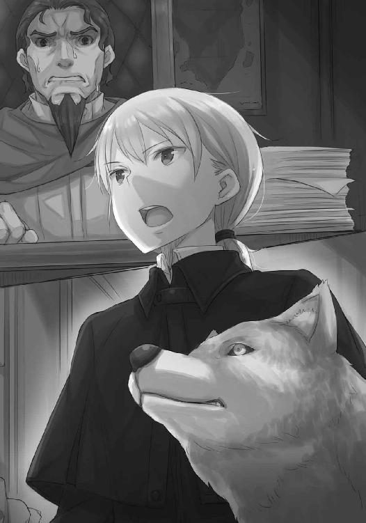
「......わかり、ました」
やはり、大司教の身を案じていたのだ。ステファンだって、すべてを金で数えるような、血も涙もない人ではない。
「では早く人を出すか、あなたが大司教を説得しに行ってください。町の兵がハイランド様を傷つけるようなことになれば、神がお嘆きになるでしょう！」
ステファンは椅子から飛び上がるように立ち上がった。
そして、壁に背中を擦りつけるくらいミューリを遠巻きにして扉にすがりついたステファンの背中に、こう付け加えるのを忘れない。
「我々の存在は内密に。神は常に我々を見ております」
泣きそうな顔で振り向いたステファンは、がくがくと何度もうなずき、部屋から飛び出していった。半開きのままの扉の向こうから、絶叫するように人を呼ぶステファンの声がする。
大司教も、町の大きな後ろ盾のステファンが意を翻したとなれば、聞かざるを得ないだろう。
ましてや、神の教えよりも人の世の渡り方によってその座に就いたのならば、この出来事を、大きな世の新しい流れだと見るはずだ。
というのは、希望的観測だろうか。
静まり返った部屋で、どうにも不安だった。
「......大丈夫だと思いますか？」
ミューリは赤い目を、ステファンが出ていった扉から、こちらに向ける。
『兄様が悪者になっちゃったんじゃないかというほうが不安』
大丈夫、ということだろう。
『でも、心配なら教会に行く？ いざとなったら咥えて逃げられるかも』
本当はそうしたいが、ハイランドが望まないだろうし、実際的な問題もある。
ステファンはなんとか誤魔化せたが、大衆にミューリのことを説明する余裕はない。ハイランドはやはり異端の者で、怪しげな狼の力を借りて逃げたとみなされたらどうしようもない。
だから、自分にできることをすることに決めた。
「祈りましょう」
なにより、あの場に赴いたのはハイランドの高潔なる意志の結果なのだ。平民は尊重せざるを得まい。そんな厳粛な気持ちだったのに、ミューリは返事をせず、後ろ足で首筋を搔いていた。
吞気な様子は、狼というより犬に見える。
『それより、今のうちに服を取りに行っておこうかな』
「え？ ああ、そうですね」
やきもきするより、ミューリのそんな泰然とした振る舞いが正しいのかもしれない。できる限りのことはやったのだから。
そして、人がいないと確信できているのか、ミューリは相変わらず躊躇いなく廊下を歩き、滑るように階段を上り、自分たちの部屋に向かった。
インクと羊皮紙の匂いに出迎えられ、朝までここにいたのにとても久しぶりに帰ってくることができたような気がした。自分はやはり切った張ったの世界より、たとえ世界の四分の一であったとしても、こういうところのほうが性に合っている。
苦笑していたら、ミューリが部屋の隅に畳んである服の前で、ちょこんと腰を下ろしていることに気がついた。
「どうしました？」
『......うん』
ミューリは尻尾をぱたりと床に伏せ、こちらを見ないままに言った。
『服、このまま捨てちゃおうかなって』
「え」
その服は派手だし、神の教えの基準から言えば、破廉恥でさえある。しかし、ミューリにはよく似合っていたのも事実。そう思ったのだが、ミューリはその服を自分に見せたくて張りきって用意していたらしいことを思い出す。寂しそうな後ろ姿は、自分のせいでもあるのだ。
『あ、けど、兄様のせいじゃないよ』
こちらの胸中を見透かしたかのように、ミューリが振り向いて言った。
『そうじゃなくてね......この姿だと、着られないから』
「え？」
『麦を見せた時、いざという時にはって言ったでしょ？ それには理由があるの』
ミューリはこちらに向き直り、前足をきちんと揃えて座る。
目だけが、伏せられていた。
『私は母様と違う。母様は耳と尻尾をしまうのは苦労するけれど、狼になるのは簡単。私は逆。だからね、いざという時だけなの』
「まさか......」
狼になるのは簡単でも、戻れないのだろうか。それが示す意味を理解し、血の気が引いた。
狼の姿のままでは、ニョッヒラに戻っても湯屋にはいられない。否、それどころか人のいる場所であればどこにもいられないだろう。
ミューリは自分のために、なんという決断をしたのだろう！
「ど、どうにか、どうにかならないのですか！」
駆け寄ると、銀色の狼は苦しそうに目を細め、頭を下げてしまう。
こちらが苦しめば苦しむほど、ミューリもまた苦しむかのように。
『兄様、そんな顔しないで？ 私は、最後に父様と母様が話してくれたような冒険ができて、嬉しかったよ』
その言葉に胸が痛んだ。ミューリは心優しい娘なのだ。こちらにそうと悟らせず、自分のために動いてくれていた。自分の夢にばかり気を取られ、まったく注意を払っていなかった。
自分はミューリの想いに応えなかったというのに、ミューリは犠牲を払ってくれた。その前では、謝罪や自己嫌悪でさえ、単なる自己満足にすぎない。
自分の感情を表現する言葉がなく、ただその首に腕を回すことしかできなかった。
『兄様......』
ミューリは静かに、呟いた。
『でも、あのね？ 本当は、人に戻る方法は、あるの』
顔を上げ、ミューリの顔を真正面から見た。
「なんですか！ 教えてください！」
『でも、私は兄様がこれ以上苦しむのを見たくない』
「ミューリ！ 私は今以上に苦しむことなど想像もできません！」
ミューリは目を閉じ、ぞろりと牙を剝く。困ったように笑っていた。
『その気持ちだけで嬉しいよ』
「ミューリ！」
その名を呼ぶと、数瞬の沈黙の後、ミューリは目を開けて、こちらを見た。
『本当に、いいの？』
「もちろんです」
ミューリはなおも迷ったように目を伏せ、ゆっくりと、上げた。
「あの時の約束を思い出してください」
自分はミューリの味方なのだ。それは絶対のことであり、神への願いよりも固い。
ミューリは自分のために、望まぬ結果の待つ扉を開けてくれた。
ならば今度は自分がそうする番だ。どれだけ苦しむことでも、受け入れる。
ミューリの赤い目が、じっと見つめてくる。ミューリが幼い頃、自分が人とは違うことを知って、泣きじゃくっていたあの時の目で。
そして、その赤い目は、眠りに落ちるように閉じられた。
『物語に、よくあるでしょう？』
「物、語？」
『うん。たくさんの昔話......それこそ、兄様の村のお話だって、きっと昔は大きな蛙がいたんだって言ってたでしょう？ それと同じで、たくさんの物語には、かつて本当だったこともたくさんある』
それはそのとおりだった。なによりも、ミューリの母親のホロにまつわる話こそが典型だ。
『だから......ほら......』
ミューリは目を開けると、顔を伏せた。しょげるような、上目づかいでこちらを見る。
『お姫様の呪いを解く時、王子様がするでしょ？』
「それは......」
どんなことか、わからないはずもない。それは神聖な行為でありながら、禁欲の誓いとは両立しないものだった。
ミューリは、すぐに顔を背ける。
『ううん、兄様には聖職者になる夢があるんだもの。やっぱり、そんなことをさせられない』
「ミューリ」
その顔をまっすぐに見た。毛むくじゃらで、大きくて、口は牙だらけだが、そこにいるのは生まれてからずっと慣れ親しんでいる、ミューリなのだ。
ミューリを人に戻せるのであれば、神の前で居心地が悪くなっても構わなかった。
「それで、あなたは戻れるんですね？」
『......うん、でも──』
「わかりました」
『兄様？』
ここで躊躇ったら、ミューリはきっと自分の言うことを信じてくれなくなる。それどころか、この先誰の言うことも信じられなくなるかもしれない。どうせ口だけなのでしょ？ と冷たい目をして人を疑うミューリの姿など、想像もしたくなかった。この世には信じる価値のあるものがあり、確かなものがあることを疑って欲しくなかった。それこそが、人の生を素晴らしい物に保つ、黄金のかすがいなのだから。
なるほど、ハイランドが死を覚悟して教会に向かったのは、こんな心境だったのだろうと思った。信仰には、行動が伴わなければならない。
ミューリはこちらを見て、決意を察してくれた。
『兄様......ありがとう』
牙だらけの口ではにかんでも、ミューリはミューリ。可愛い妹に変わりはない。
そして、ミューリの大きな口吻に手を添え、いざ、顔を近づけようとした時だった。
『あ、でも、その、兄様......』
「なんですか？」
『えっと......恥ずかしいから、目を閉じて欲しい。手も、どきどきしすぎるから......離して、欲しい』
上目づかいに、耳と尻尾を下げている。ミューリは年頃の女の子なのだ。
それに、改めてそう言われると、こちらも急に恥ずかしくなる。
咳払いをして、口吻から手を離し、目を閉じた。
「これでいいですか？」
「うん」
ミューリが再び少女の姿に戻れて、ニョッヒラでこれまでどおりに暮らせるのであれば、神の御座が遠のいたって構わない。それに、これは禁欲の誓いを破るような行為ではない。欲に負けたせいではなく、人を助けるためのことなのだから。それに、かつては預言者も悪魔に取り憑かれた者を助けるために、額や手に口づけをしたではないか。ならば、これだって......と思ったところで、疑問符がついた。
額や、手に口づけ？ ならば口同士である必然性はあるのだろうか？ 確かに王子の口づけで姫の呪いが解ける物語は数多あるが、大体ミューリのそれは呪いなのだろうか？
なにかおかしい気がした。そもそも、ミューリは最初になんと言った？
人に戻る方法は、ある。
その発言を思い返し、気がついた。
物語のそれが解決方法だとは、一言も言っていない！
「あっ」
目を開けたら、目の前に人の姿に戻ったミューリの顔があった。髪の毛が触れてばれないようにと手で押さえ、手足が触れてもばれるからと、歪な姿勢で顔を突き出している。
視線が合ったミューリは、誤魔化すように笑った直後、ばっと飛びかかってきた。そこを、すんでのところで横に躱す。後ろで、ごん、と頭を床にぶつける音がした。
「痛ったーい......」
思い返せば、目を閉じた確認の時の声が、いつものミューリのものだった。
そもそも、狼になるためにホロと練習したと言うのだから、戻れて当たり前なのだ。
「あーあ、失敗しちゃった」
悪びれもしないし、裸を隠そうともしない。
なにから怒ればいいのかすらわからない。
とにかく立ち上がり、こう言った。
「ミューリ！」
ミューリは首をすくめて頭をかばうようにしたが、腕の下では笑っていた。
「兄様がやったのと同じことしただけじゃない」
噓を言ったわけではなく、相手が勝手に解釈しただけ。
正論なだけに、言い返せない。
「う、ぐっ......」
「でも、兄様がどんな時でも私の味方してくれるってのは、噓じゃなかったんだね。泣きそうになっちゃった」
満面の笑みでそう言われたら、それ以上怒ることもできない。
自分の決意の意味を理解してもらえることほど、嬉しいことはないのだから。
「ていうか兄様、広場からなんか歓声が聞こえるよ？」
「あ、え？ こら、ミューリ！」
ミューリは立ち上がり、見慣れた尻尾を揺らして木窓に駆けより、思いきりよく開ける。
広場からの灯りがここまで届くのか、ミューリのすらりとした肢体がぽっと浮かび上がる。
「こっちはうまくいったんじゃないかな、ねえ、兄さ、ば？」
頭の上から外套をかぶせた。
「耳、尻尾っ。それから、あなたは女の子なんですよ、もう少し慎みを持ちなさい！」
外套の下から顔を出したミューリは、面倒臭そうに羽織る。
怒りの余りか、それとも連日の疲れもあってか、眩暈がしてくる。
「もう、兄様怒ってばっかり」
「一体誰のせいだと......」
「あ、やっぱりうまくいったみたいだよ。金髪の声がする」
こちらの小言など意に介さず、木窓から身を乗り出し、獣の耳をぴんと立てている。
ただ、こんな騒ぎもこれで最後だ。ミューリはニョッヒラに帰り、自分はハイランドと共にウィンフィール王国に行く。辛気臭い別れにならず、かえって良かったかもしれない。
「ねえねえ、兄様、今ならあいつにおっきな恩が売れるんじゃないかな」
そんなことまで言っている。
そして、そんな必要はない。ハイランドは高潔な人物だ。うまくいって本当によかった。
「ねえ、兄様......兄様？」
うまくいって......。
「兄様、ちょっと、大丈夫？」
体力が尽きてふらついたところを、ミューリが抱き止めてくれた。悪戯ばかりのお転婆少女だが、いざという時には頼りになる。
意識が遠のいていく中でも不安はなく、湯に浸かるような心地良さがあった。
散々甘やかしてきたのだから、最後くらいは甘えてもいいはずだ。
そんなことを思いながら、仄かな硫黄の匂いに誘われ、ミューリの腕の中で、最後の緊張を解いたのだった。
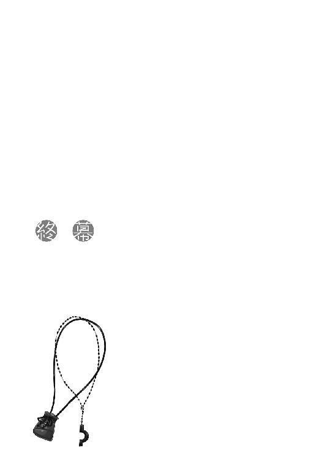
連日ほとんど眠らず聖典の俗語翻訳をし、最後の仕上げの後は教会で実に気の詰まる根競べをし、あげく牢に放り込まれたらすぐさま脱走し、直後に一世一代と言っていいくらいの大芝居を打った。
最後はミューリから特大の悪戯を仕掛けられ頭に血が上っていたところに、ハイランドの反撃成功で緊張が解けた。どんなに頑丈な革紐も、それだけ乱暴に扱えば切れる。そもそもが大して太くない線は、ひとたまりもない。
長いこと高熱にうなされて目を覚ませば、あの夜から数えて三日目の朝だというのだから、我ながら驚いた。
「もう目が覚めないかと思ったよ」
枕元で、ミューリが泣きそうな顔で怒っていた。おぼろげな記憶に、看病してくれていた様子が残っている。毛布の下から手を伸ばし、その小さな手を握った。
ミューリははにかみながらも、嬉しそうにしてくれる。
「ハイランド様は？」
しかし、そう尋ねると、たちまち無表情になる。
「知らない。あ、そんなことよりね、兄様が寝ている間に聖典読んで、私、凄いことに気がついたんだよ。えっとね、あのね？」
いそいそと話し始めようとするミューリをよそに、部屋を見回したが他には誰もいない。
「いや、今はそれよりハイランド様を」
顚末がどうなったのかを知りたい。自分たちが無事だということは無事なのだろうが、教皇吏のことなども気になる。ましてや戦になるのであれば、悠長なことをしている場合ではない。
「もう、兄様！」
ミューリに手を引っ張られていると、部屋の外からどやどやと足音と人の声が聞こえてきた。
「ハイランド様！ 御髪と御召し物がまだ！」
「構っている場合か！」
ハイランドの声に起き上がろうとすると、ミューリが肩を押さえて、毛布を頭までかぶせてきた。
「ミューリ、なにをするんですか」
「見ちゃだめ。見ないほうがいい」
「はあ？」
そんなやり取りをじたばたしていたら、扉の開く音がした。
「コル！」
ハイランドに呼ばれ、毛布を跳ね除けた。
そして、駆け寄ってきた笑顔のハイランドを見て、これは夢の続きかと思った。
「おお、だいぶ顔色も良くなって。食欲は？ 町からなんでも取り寄せよう。君には感謝してもしきれない！」
髪をくくりもせず、着替えもそこそこに駆けつけてくれたのだろうハイランドは、気取らない性格そのままだった。
素のハイランド。
そう言って良ければ、素性を明らかにしたハイランドだった。
「ああ、こんな格好ですまない。目が覚めたと聞いて、いてもたってもいられなくてね」
長く、綺麗な金髪をかき上げて、ハイランドは笑う。
それもそうだが、ハイランドの胸元だ。
「兄様、なに見てるの？」
どきりとして、慌てて目を逸らす。ハイランドは、ようやく気がついたらしい。
ただ、それから見せたのは困ったような笑みだった。
「まさか、気がついていなかったのか？」
ニョッヒラで語らったのは洞窟の湯であり、洞窟の湯は湯船に浸かるというよりも蒸し風呂に近い。随分肌を隠しているなとは思ったが、高貴な人々の習慣なのだと思っていた。
格好は大事。
そして、自分自身がミューリに言った。旅の女性の格好は二つに一つ。修道女か、男装だと。
「ほら、言ったでしょ？ 兄様はなんにも見てないんだから」
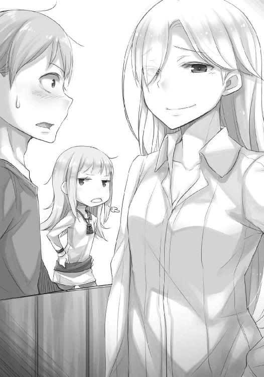
ハイランドはミューリを見やり、もう一度こちらを見た。
「君は......いや、そのままでいいと思う。素晴らしき神の僕だ」
褒め言葉として受け取っていいのか判断に迷っていると、気の利くハイランドは咳払いをして、話題を変えてくれた。
「それよりだ。無事アティフの町は我々に賛同してくれることとなった。大司教は折れた。信頼できる仲間になった、とはまだ言えないが、少なくとも町の人々の意向を邪魔しないことだけは確かだ」
「本当ですか！」
「ああ。ステファンが意を翻したことで、羊皮紙を持っている教皇吏が味方なだけではどうにもならないと思ったのだろう。それに、教皇の勅許に町の人々が怯まなかったことが、そもそも大司教には衝撃だったようだ。大司教は、教皇のさらなる支援が欲しいという言い訳で、教皇吏をいったん追い返した。教皇吏もそうするほかなかったろう。あのままでは命が危なかったからな。そして、大司教は人々の怒りに耳を傾けると宣言した。約束を守らなければどうなるかは、身に染みているはずだ。蝙蝠のようにうろうろしていたステファンは、尻尾を丸めておとなしくしているよ」
ハイランドの笑みは、珍しく意地悪そうだった。
「どちらにせよ、この報はたちまち諸方に広まるだろう。だが、そうなればいよいよ教皇も本腰を入れてくると予測できる。やられっぱなしではあるまい」
「これからですね」
「ああ、これから、我々が歪んだ物を正していくのだ」
嬉しそうに話すハイランドを見て、どうして自分がハイランドの性別に気づかなかったのか分かった気がする。夢を語るハイランドは、子供のように無邪気なのだ。それこそ、男も女も区別がない、幼子のように。
「それで、病み上がりに言うのもなんだが、この後はまた別の町に向かうつもりだ。この勢いに乗って、ウィンフィール王国から見渡せる大陸側はすべて仲間に引き入れたい」
いざ戦になった時のことも考えてだろう。
「もちろん、お供いたします」
「ありがとう。それで──」
「それで、その話なんだけどね」
ハイランド相手に言葉を遮るような無礼を働くのは、ミューリしかいない。
「兄様が寝ている間に聖典を読んだの。それで、聖職者のこともいろいろ聞いた。その上で、このきんぱ......ハイランド様にも、聞いてみた。問題ないってことだった」
なんの話だ？ とミューリとハイランドを見比べる。
ハイランドはお転婆な妹を見る姉のように、困りつつも楽しげだ。
「私はニョッヒラに帰らないからね」
「ミューリ、その話はすでに......」
自分は聖職者の道を志す。ミューリの想いには応えられない。それは絶対であり、納得してくれたのでは。
だが、ミューリは怯まない。それどころか、意地悪そうに笑っていた。
「節制だよ、兄様の得意なね」
「節制？」
「そ。兄様の夢は私も邪魔したくない。だけどね、聖典には特に書いてなかったの」
「......なにがです？」
「うん。聖職者たる者、俗世の欲、肉体の欲に負けてはならない。節制に励むべし。けれども、俗世の者、その聖職者を好きになってはならぬ、とは書いてない」
「......は？」
ハイランドはベッド脇でくすくす笑っている。
ミューリは聖典の翻訳版を顔に押しつけてきた。
「疑うなら読んでみて。だからね、兄様、節制なの」
なにがだからなのか。
腕組みしたミューリは、得意げにこう言った。
「兄様が私に手を出さなければ、万事問題なしでしょう？」
「......」
茫然として声も出ない。そんな解釈があるものかと。
「兄様のシンコーシンが試されるね」
ミューリの笑みは確信に満ちている。
手元には、神の教えが記された羊皮紙がある。
ないのは、兄としての威厳くらいだ。
神の教えが記された羊の皮を顔の上に乗せ、目を閉じる。これでは羊の皮をかぶった羊だ。
「おお、神よ......」
「呼んだ？」
意地でも答えてやらなかった。ましてや、なぜかほっとしたことなど、絶対に悟られてはならなかった。
閉じた瞼の向こうで、銀色の尻尾が悪戯っぽく揺れている。
羊は常々、狼の尻尾を注視する運命にあるのだった。
あとがき
寝る前に本を手に取って、どの頁を開いても可愛い生き物がいて穏やかな気持ちになりながら眠ることができる。そんな本が欲しかったので、自分で書きました。支倉凍砂です。
半分くらい冗談ですが、元気な女の子、というヒロインを書くのはとても楽しかったです。
ただ、今回のヒロインであるミューリはこんな感じにしよう、と決まった経緯には、自分でも驚きました。というのも、同月発売であり本書の前のシリーズに当たる『狼と香辛料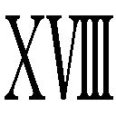 Spring Log』収録の最初の短編を書いた時、ミューリのことはまだ直接書いていませんでしたし、設定も全然決めていませんでした。それが、コルとミューリのしたためた手紙が送られてくる、という間接的な描写をした途端、その時点で造形が決まっていました。なんというか、作中の手紙の向こうに、すでにミューリがいるような気がしたのです。
不思議なこともあるものだ、と思いながら本書を書き始めました。
ところで、本書で初めて『狼と香辛料』の世界に触れたという読者の方に説明いたしますと、本書は『新説 狼と香辛料』と銘打ってあるとおり、主人公のコルは『狼と香辛料』シリーズ中盤にもっと幼い子供として出ていて、ヒロインのミューリは『狼と香辛料』の主役二人の娘という立ち位置です。
世界観は同じで、一世代分後のお話になります。前のシリーズを読んでいなくても楽しめる作りになっています、という決まり文句だけではなんなので、ぜひ前のシリーズも読んでみてください。さらに面白くなるはずですから！ また、前のシリーズではできなかった方向に、ぐいっと世界を広げられたらなあとも思っています。あんなことやりたいしこんなこともやりたい、と私自身がわくわくしています。ぜひお付き合いいただけたらと思います。
そして新シリーズを始めたばかりというのは気が大きくなるようで、全然別の物語を作りたい欲求もあって、ミューリが悪戯を仕掛けるかのように、色々と企んでいます。どこぞでお見かけした際は、にやりとしてやってください。
それではまた、次の巻でお会いしましょう。
支倉凍砂
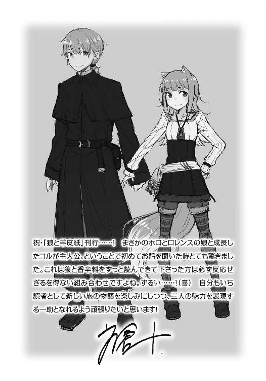
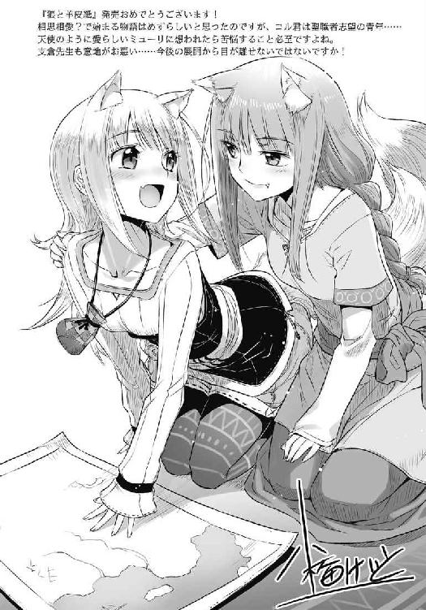
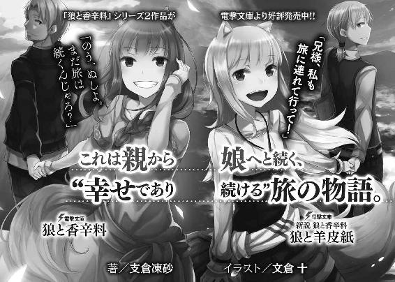
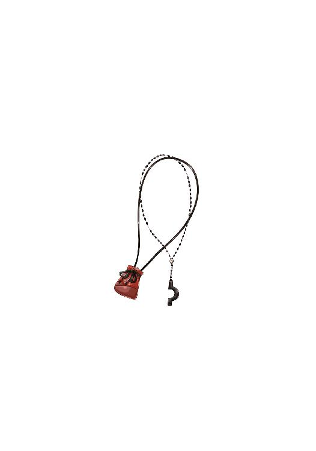
支倉凍砂
１９８２年12月27日生まれ。第12回電撃小説大賞≪銀賞≫受賞。最近、じっと読書をしていると足がむくんで痛くなったりする。重力の設定がちょっと強めなので、弱めていただけると幸いです。
イラスト／文倉十
東京都在住、フリーで細々と活動中。
代表作は『狼と香辛料』挿絵他、『理想のヒモ生活』挿絵、VOCALOID『結月ゆかり』キャラクターデザイン等。
本書に対するご意見、ご感想をお寄せください。
電撃文庫公式ホームページ 読者アンケートフォーム
http://dengekibunko.jp/
※メニューの「読者アンケート」よりお進みください。
ファンレターあて先
〒102-8584 東京都千代田区富士見1-8-19
アスキー・メディアワークス電撃文庫編集部
「支倉凍砂先生」係
「文倉 十先生」係
本書は書き下ろしです。
この物語はフィクションです。実在の人物・団体等とは一切関係ありません。

 電撃文庫
電撃文庫
新説狼と香辛料
狼と羊皮紙
支倉凍砂
発 行 2016年10月7日
発行者 塚田正晃
発行所 株式会社KADOKAWA
〒102-8177 東京都千代田区富士見2-13-3
03-3238-8745（営業）
http://www.kadokawa.co.jp/
プロデュース アスキー・メディアワークス
〒102-8584 東京都千代田区富士見1-8-19
03-5216-8399（編集）
http://dengekibunko.jp/
本書（電子版）に掲載されているコンテンツ（ソフトウェア／プログラム／データ／情報を含む）の著作権およびその他の権利は、すべて株式会社KADOKAWAおよび正当な権利を有する第三者に帰属しています。
法律の定めがある場合または権利者の明示的な承諾がある場合を除き、これらのコンテンツを複製・転載、改変・編集、翻案・翻訳、放送・出版、公衆送信（送信可能化を含む）・再配信、販売・頒布、貸与等に使用することはできません。
(C)2016 ISUNA HASEKURA
※2016年9月10日発行の電撃文庫『新説 狼と香辛料 狼と羊皮紙』初版に基づき制作